AcademicAcadêmicoParcours académique
Low-Latency High-Bandwidth Circuit and System Design for Trigger Systems in High Energy Physics
Thesis (PDF)Tese (PDF)Thèse (PDF)Public defence slides (PDF)Slides da defesa pública (PDF)Diapositives de la soutenance publique (PDF)Private defence slides (PDF)Slides da defesa privada (PDF)Diapositives de la soutenance privée (PDF)Serial link test report (PDF)Relatório de testes dos links seriais (PDF)Rapport de test des liaisons série (PDF)DOI
Inside the Large Hadron Collider, bunches of protons cross 40 million times per second, and each crossing produces about 25 collisions. Recording all of it is impossible: the detector would fill a stack of CDs reaching the Moon in three months. A Higgs boson, meanwhile, shows up about once every three hours.
So the experiment has to choose, on the spot, which crossings to keep. That job belongs to the trigger. Its first stage is built from custom electronics and has 2.5 millionths of a second to cut 40 million crossings per second down to 100,000. Whatever it rejects is gone for good. If it is slow, the data it is deciding about has already been overwritten. If it is unreliable, rare events are thrown away and dull ones are kept.
I spent five years, from 2016 to 2021, working on one piece of that first stage at CERN, as a doctoral student of EPFL. This page tells the story of my thesis without the equations: what the problem was, what I built, how I tested it, and what came out of it.
The collider, the detector and the trigger
CERN, near Geneva, was founded in 1954 by 12 European countries and is today the largest particle physics laboratory in the world. Its biggest machine, the Large Hadron Collider (LHC), is a ring of superconducting magnets 27 kilometres long, in a tunnel 100 metres underground. Two beams of protons travel around it in opposite directions, packed into bunches. Every 25 billionths of a second, two bunches meet in the middle of a detector.
ATLAS is the largest of those detectors: about 45 metres long, more than 25 metres high, and about 7,000 tonnes. It is built in layers, like an onion: the inner layers follow the paths of charged particles, and the calorimeters around them stop most particles and measure their energy. Only two kinds of particle get through all of that: neutrinos, which escape unseen, and muons, heavier cousins of the electron. The outermost layer of ATLAS, the muon spectrometer, exists to catch the muons.
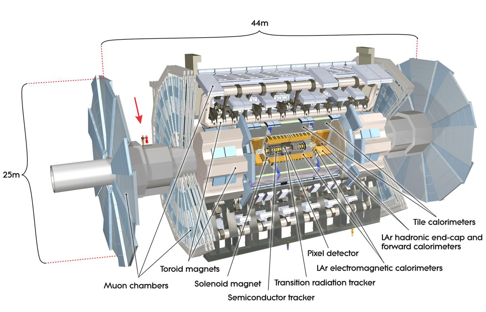
The trigger works in two levels. The first level, called Level-1, is made of custom electronics. It looks at a simplified, fast view of each crossing, mostly from the calorimeters and from dedicated muon chambers, and decides within 2.5 microseconds whether to keep it. While it decides, the full detector data waits in small memories next to the sensors, a bit like a conveyor belt that drops whatever reaches its end. About one microsecond of the 2.5 is spent just on signals travelling through cables, from the detector to the electronics room and back. That leaves about 1.5 microseconds to share between all the Level-1 electronics.
The crossings that Level-1 accepts, up to 100,000 per second, go to the second level, the High-Level Trigger, a farm of ordinary computers running software. It has much more time, about half a second per event, and keeps around 1,000 crossings per second. Each kept event is about 2.4 megabytes, so ATLAS still writes about 2.4 gigabytes to permanent storage every second.
My work sits in Level-1, in the part that deals with muons. Muons are easy to recognise: they are almost the only charged particles that reach the outer layer. The muon trigger chambers measure how much each muon track bends in the magnetic field. A track that bends less belongs to a muon with more momentum. Electronics called the sector logic, 208 modules in total, turn those hits into muon candidates, each with a position and a momentum class. Then all candidates go to a single board, the Muon-to-Central-Trigger-Processor Interface, or MUCTPI. It combines them, avoids counting the same muon twice, and reports to the Central Trigger Processor, which takes the final Level-1 decision. The MUCTPI is the board my thesis is about.
Why the trigger had to change
The LHC keeps getting more intense, so that rare events happen more often. Physicists call this luminosity. The collider reached its design value at the start of its second run, in 2015. It was planned to reach twice that in the third run, and five to seven and a half times that later, after the High-Luminosity LHC upgrade. More intensity means more collisions in every crossing.
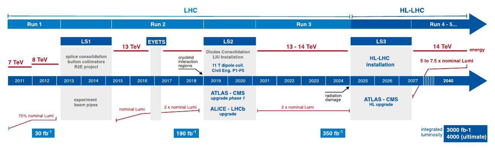
To stay under its limit of 100,000 accepted crossings per second, the trigger has to become pickier. It gets pickier in two ways: more information is sent to it from the detector, and larger parts of that information are looked at together. Both make the electronics harder. More information means more and faster data links. Looking at more of it together means more logic in one place.
ATLAS prepared for this in two steps, called Phase-I and Phase-II. My thesis belongs to Phase-I: the new MUCTPI for the third run of the LHC. The plan for the run after that is to use two of these boards, which doubles the number of inputs and the processing power.
Three requirements run through the whole thesis, and it is worth saying clearly why each one matters.
Low latency. Latency is the delay between something going in and the answer coming out. The detector can only hold its data for a fixed time. If the decision to keep a crossing arrives too late, the data has already fallen off the end of the conveyor belt.
Fixed latency. The trigger works like an assembly line with a fixed rhythm, driven by the 40 million crossings per second. At every station, the pieces that arrive together must belong to the same crossing. And when the final decision reaches the detector, the detector finds the right data only by its timing. If a delay changes, even once, the wrong crossing is kept and the right one is lost.
Reliability. If trigger data is corrupted, the trigger can raise false alarms or miss real events. Either way, the experiment loses physics.
One board instead of eighteen
The MUCTPI used during the first two runs of the LHC filled a whole electronics crate: 18 large cards in a standard format called VME. Sixteen cards received the muon data, one sent results to the central trigger and one sent data to the readout. The muon data arrived over thick electrical cables, with many wires carrying bits side by side. Because each card saw only its own part of the detector, double counting could only be removed, and candidates sorted, within one sixteenth of the detector.
Before my doctorate, for my master's thesis, I had worked on that older system: I extended its firmware so that it also sent muon position information to a newer part of the trigger, the topological processor, which looks at where particles are relative to each other.
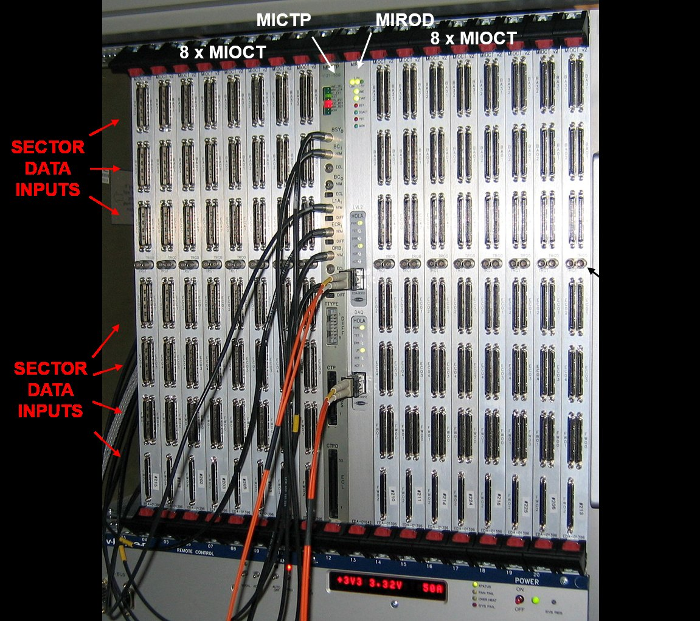
The new MUCTPI does all of this on a single board, in a format called ATCA. Two things made that possible. Optical modules have become much smaller: a MiniPOD, the module used here, is a small component soldered onto the board that sends or receives 12 optical fibres at once. And programmable chips have become much larger.
Those chips are FPGAs, short for field-programmable gate arrays. An FPGA is a chip full of small logic blocks and wires whose connections are set by a configuration file, not fixed in the factory. You can turn it into almost any digital circuit, change it later, and it does many things at the same time rather than one after another.
The new board carries three large FPGAs and a small control chip. Two of the FPGAs, called Muon Sector Processors, each handle one half of the detector: each receives the data of 104 sector logic modules through 9 MiniPODs and copies selected muons to the topological processor. The third FPGA merges the results of the two halves, sends them to the central trigger, receives the experiment's clock and commands, and sends data to the computer farm when an event is accepted. The control chip runs the software that configures and monitors the board.
Thanks to the faster links, each sector can now send up to 4 muon candidates per crossing instead of 2, with finer momentum and position information. And because each processor sees half of the detector, double counting can be removed, and candidates sorted, across half the detector instead of a sixteenth. Three prototype versions of the board were built, mainly to try different FPGAs. The third is the preferred one.
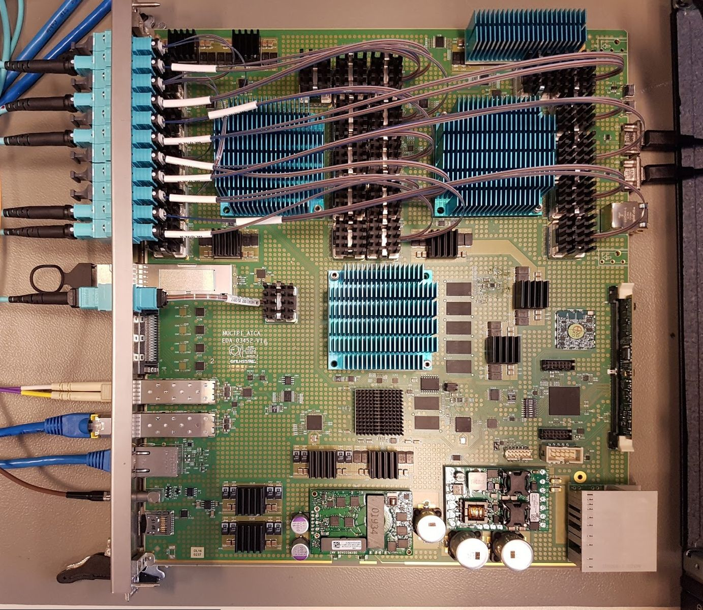
The thesis has two parts, because the board has two jobs: getting the data in, and processing it.
Part one: getting the data in
What a serial link is
The old system sent bits side by side over many wires. The new one sends them one after another, very fast, over a single optical fibre. This is a serial link. Each sector logic module sends 6.4 billion bits per second, so one bit lasts about 156 trillionths of a second. In the 25 nanoseconds between two crossings, 160 bits go down the fibre.
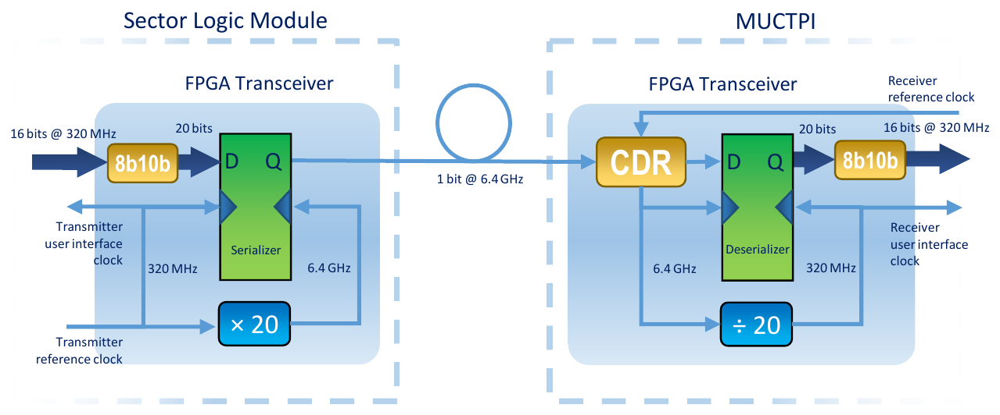
Not all 160 bits are data. The bits are coded so that the stream never contains long runs of zeros or ones: every 8 bits of data become 10 bits on the fibre. That leaves room for 128 bits of data per crossing. The coding matters because no separate clock wire comes with the data. The receiver has to rebuild the sender's clock from the rhythm of the bits themselves, like tapping your foot to music, and it can only do that if the bits keep changing.
Inside the FPGA, special blocks called transceivers do this work: on the sending side they turn parallel words into a serial stream, and on the receiving side they rebuild the clock and turn the stream back into words. The board has 208 such inputs from the muon detectors, plus outputs to other systems and links between its own chips: about 330 high-speed connections in total.
Three things are asked of every link. It must not make mistakes. It must be fast. And it must be punctual: the delay has to be exactly the same every time the system is switched on, because the board compares muons from different links, and they must belong to the same crossing.
A card to prove the parts
Before any MUCTPI prototype existed, the group needed to know that the chosen FPGA transceivers and optical modules could actually do the job together. Finding out only when the real board came back from the factory would have been expensive and slow. So I built a demonstrator.
The demonstrator has two pieces. The first is a commercial evaluation board from the FPGA maker, the Xilinx VCU108, which carries a chip from the same family as the one planned for the MUCTPI. The second is a card I designed myself, from the schematics to the layout of the printed circuit board: the MPOD FMC (CERN EDMS EDA-03305, 2015). FMC stands for FPGA Mezzanine Card, a standard connector that lets a custom card plug onto an FPGA board, the way an expansion card plugs into a computer. Mine is a double-width card, twice the standard size, because it carries a lot. I also wrote its FPGA firmware and the low-level software that drives it.
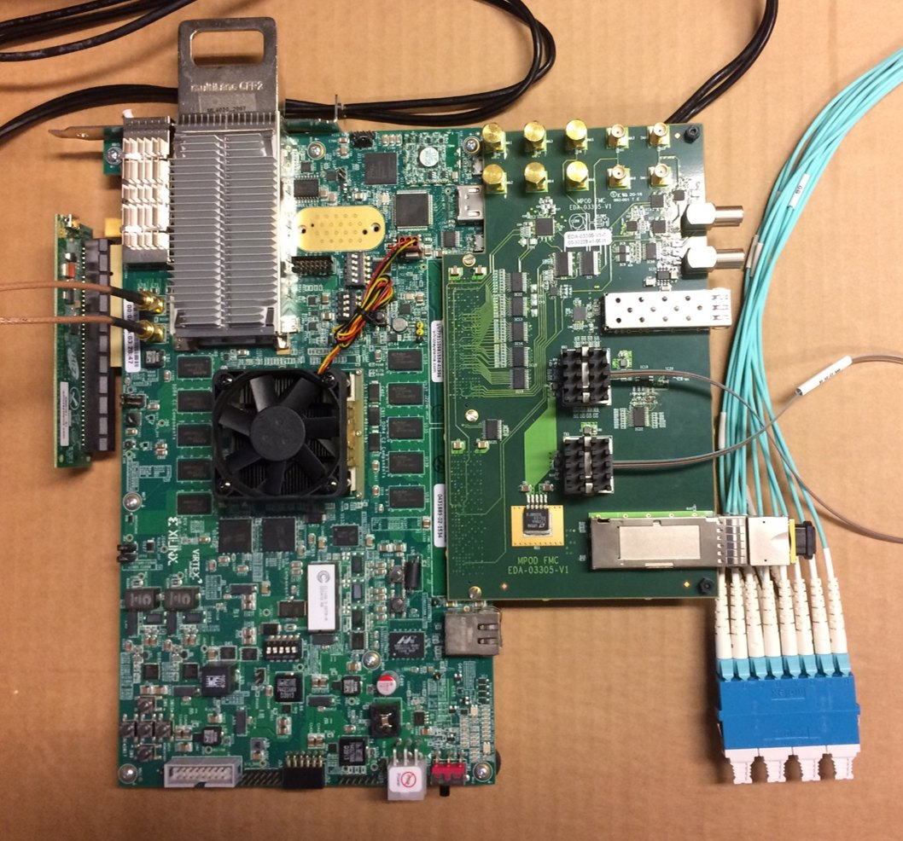
Start with the two jitter cleaners. Every clock edge wobbles a little in time; that wobble is called jitter. A fast serial link is very sensitive to it, the way a dancer stumbles if the beat is uneven. The experiment's clock arrives through its timing network, called TTC (Timing, Trigger and Control), which distributes the 40 MHz crossing clock and commands to all the electronics. The first chip on my card cleans that clock, and the second uses it to generate the faster reference clock the transceivers need.
A LEMO electrical input and an SFP optical module receive the TTC timing information, over a cable or over a fibre. An SFP is a small optical module that plugs into a socket on the card.
MiniPOD transmitter and receiver modules, the same type as on the real board, run at up to 14 billion bits per second per fibre. They showed that data could travel from a sector logic module to the MUCTPI without errors.
A 40 Gb/s QSFP+ module, a larger pluggable optical module, made it possible to measure the signal quality of the link that sends accepted events to the computer farm.
SMA connectors, small screw-on coaxial outputs, bring the clocks out so their jitter can be measured on laboratory instruments.
Finally, SPI and I²C interfaces, slow and simple control buses with two to four wires, are used to configure the chips on the card, such as the clock generators.
The demonstrator did what it was built for. It showed error-free data transfer, clean signals and correct reception of the timing information, and it later served to develop the alignment circuit described further down. In November 2016, a year before the first MUCTPI prototype was tested with them, the demonstrator was already connected to a prototype of the endcap sector logic module, called TGC, for the first joint test. The chips and optics were proven before the real board existed.
Testing hundreds of links without reading drawings by hand
The real board has 334 high-speed links. To make the circuit board easier to lay out, the designers were allowed to connect links to whichever transceiver channel was convenient, and to swap the two wires of a pair. Each link uses a pair of wires carrying opposite signals; swapping them inverts every bit. That is harmless, as long as the FPGA is told about it. But the information is buried in the circuit drawings. Working out by hand, for 334 links, which pin goes where and which pairs are swapped is slow, tedious and invites mistakes.
Reading the wiring list
I wrote a program, later released as PCBpy, that reads the board's wiring list (the netlist, a file that lists every connection on the circuit board) together with the FPGA pin files. From these, it writes by itself the firmware files that tell each FPGA which pin carries which link and which pairs are inverted, plus a report to check the wiring. On the MUCTPI, it found pairs that had been swapped by accident in the drawings. The errors were fixed before the first board was manufactured. The files it generated were then used by the other firmware developments for all the board's FPGAs.
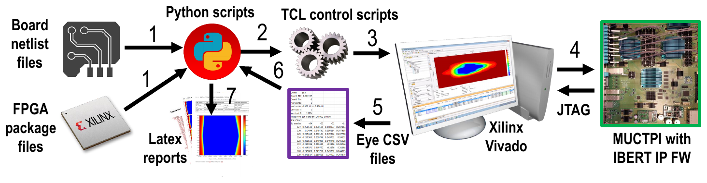
Running the tests
A second program, IBERTpy, runs the link tests themselves. It builds on a test block provided by the FPGA maker, which sends a known pseudo-random pattern down each link and counts the bits that come back wrong. IBERTpy writes the scripts that set up all the links with the right connections and polarities, runs the error counts and the signal-quality scans, then reads back the results, draws a picture for each link, checks each picture against a quality mask, and compiles everything into a single PDF report. One page of that report shows the 12 links of one optical module side by side, so a link that is weaker than its neighbours stands out at a glance.
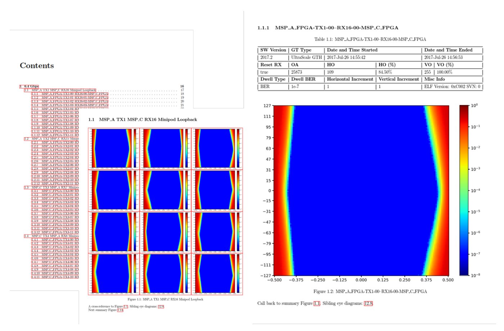
Within CERN, IBERTpy was also used to produce signal-quality pictures for a board of another LHC experiment: the Barrel Calorimeter Processor of CMS, for its own upgrade.
How reliable is reliable enough
Counting errors
The basic measure of a link is its bit error rate: wrong bits divided by bits received. No real link is perfect. Even a well-designed one can be hit by random noise, for example radiation flipping a bit in a chip, or electrical interference. So the question is not whether errors happen, but how rarely.

For the MUCTPI inputs, one error per day was judged acceptable: at worst, one false alarm or one lost crossing in a day. At 6.4 billion bits per second, that means at most one wrong bit in about 550 million million.
Here is the catch: you cannot prove a rate like that by watching for a day. Errors are random. A link that makes one error per day on average may well make none for a whole day by luck. Statistics gives a rule of thumb: to be 95% confident that a link makes fewer than one error per day, you have to watch it for about three days without seeing a single error.
So that is what I did, and at twice the speed the experiment needs, 12.8 billion bits per second, as a stress test. In one run, 112 links of the second prototype ran together for 10 days. In another, all 208 muon inputs of the third prototype, driven by transmitters from two boards through external fibres, and its 56 internal links, ran in two sessions of three days each. No errors at all. Every link makes fewer than one error per day, even at double speed.
Looking at the signal
An error count says pass or fail, but not why, or how close to failing a link is. For that, engineers use an eye diagram. Imagine recording the signal on the fibre and overlaying thousands of short slices of it, each one bit long, on top of each other. The ones form a band at the top, the zeros a band at the bottom, and the transitions cross in between. What is left in the middle is an opening shaped like an eye. A wide, open eye means the receiver has a comfortable window in which to read each bit. A closed eye means trouble.
Normally an eye diagram is drawn by an oscilloscope. The FPGA transceivers can draw a statistical version themselves, without any instrument and without interrupting the data: a second sampling point inside the receiver is moved step by step, earlier and later in time, higher and lower in voltage, and at each position it counts how often it disagrees with the main one. The result is a coloured map of where reading is safe.
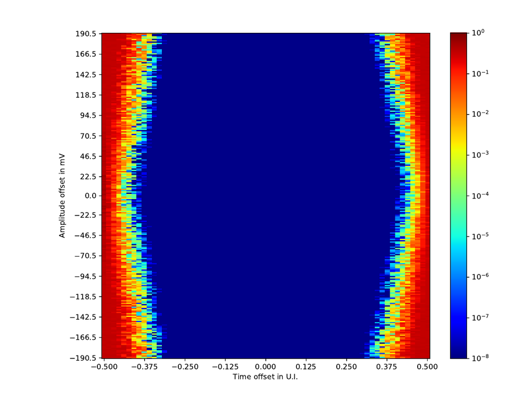
Even these scans have limits. Each point is measured until about ten million bits have been checked, and a full map takes about a minute. Measuring the same map down to the one-error-per-day level would take about 190 years. That is why the long error counts and the eye diagrams are used together: the first proves the rate, the second shows the margin.
To turn a picture into a pass or fail, a mask is drawn in the middle of the eye: a diamond-shaped region the signal must stay out of, defined by the maker of the optical modules. Every link of every prototype, inside the board and out, passed the mask test at both the normal speed and double speed.
What the numbers showed
Measuring the open area of the eye for all 208 inputs made it possible to compare prototypes. On the first prototype, at the normal speed, the open area ranged from 55% to 80% and fell into two groups. The two groups matched two different types of transceiver on the same chip. The later prototypes used a single type, and the worst link improved from about 55% to about 70%, the average from about 67% to about 75%. At double speed the eyes are smaller, between about 40% and 63%, but the error counts show that is still enough.
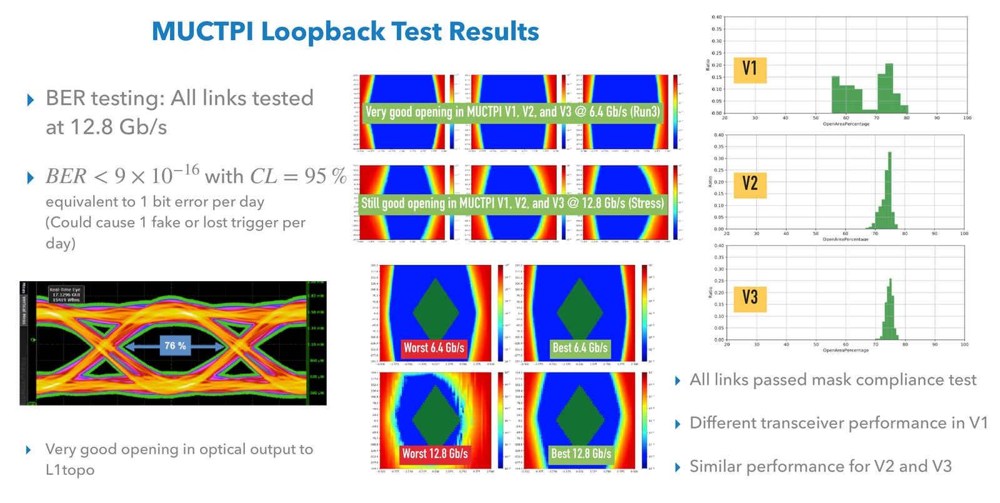
An optical output to the topological processor, running at 11.2 billion bits per second and measured with a fast oscilloscope, showed a horizontal opening of 76%. Tests with optical attenuators showed that the links to the topological processor still work when their light is weakened about fivefold, a comfortable margin.
The links were also tested with the real partners: the endcap sector logic module with the first prototype in November 2017, and the barrel one, called RPC, in November 2018. No errors were found in these overnight tests. In May 2019, all 48 optical outputs to the topological processor were connected and ran for 39 hours: 45 of them without errors. The other 3 had a known fault on the topological processor's side.
Shaving off nanoseconds, and keeping them fixed
Inside the transceiver
Serial links are not free in time. Turning words into a stream, sending it, rebuilding the clock and turning the stream back into words takes many steps, and each step adds delay. Worse, most transceivers are designed for networks where a few extra nanoseconds, or a delay that changes slightly each time, do not matter. They include small waiting areas, buffers, that make the design easier but add delay, and clock dividers that may start in a different position each time the link is reset.

To measure this, I built a test system from two FPGA evaluation boards sharing one clock. The sender raises a flag each time a repeating pattern starts, the receiver raises one when it arrives, and an oscilloscope measures the gap. Resetting the link every three seconds, thousands of times, shows whether the delay changes from one start to the next.
I measured the transceivers in many configurations. Bypassing the two buffers cut the delay from about 67 to about 50 nanoseconds. Choosing carefully where each clock comes from halved the variation, from 6.25 to 3.125 nanoseconds. On the sending side, driving the transceiver's clock directly from the reference clock, avoiding a divider whose starting position is random, made the delay completely fixed. The settings I found for the sending side were also adopted by the colleagues who built the barrel and endcap sector logic modules, since their boards are the senders.
On the receiving side, a variation of 3.125 nanoseconds remains, one tick of the transceiver's internal clock. In that time, light in a fibre travels about 60 centimetres. It could have been removed too, but only by modifying the FPGA maker's transceiver design in a way the maker does not support. Since 3.125 nanoseconds is only one eighth of the time between two crossings, I chose instead to absorb it in the next circuit.
Lining up 208 inputs
Each of the 208 inputs arrives with its own rebuilt clock. All of them tick at the same rate as the board's clock, because everything in the experiment is driven by the same 40 MHz clock, but each is shifted by a different amount. The fibres have different lengths, the chips on each sender differ slightly, and the barrel and endcap detectors sit in different places, so data from the same crossing reaches the board at different moments. The shift is unknown, but it does not change unless someone changes the cabling. Then there is the small variation of 3.125 nanoseconds after each reset.
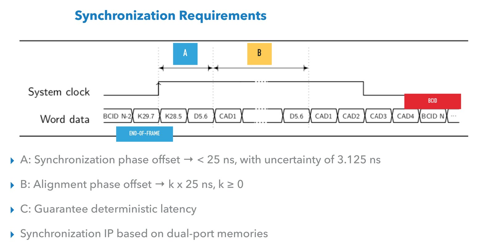
I designed the circuit that takes each input from its own clock to the board's clock. It is built around small memories with two doors: each input writes its data in with its own clock, and the board reads it out with its clock, a bit like a row of pigeonholes filled by one person and emptied by another. Writing and reading are started by a common signal, and the reading starts a fixed number of slots behind the writing. Choosing that offset well is the key. Too close, and the reader may take half of one crossing and half of the next. Too far, and time is wasted.
Each frame of data also carries a crossing number and a checksum, so the circuit can tell when a frame is corrupted or belongs to the wrong crossing. A one-time calibration uses those checks to find the right settings for each input. The settings are then loaded at every start, and the circuit gives the same delay every time, whatever the transceiver did during that particular reset.
I worked out the calibration procedure in a detailed simulation, which also tested the circuit against shifts larger than any measured. It showed that the circuit tolerates more variation than the links actually have.
In the tests with the barrel and endcap sector logic modules, over up to 12 links, both systems were reset and switched off and on repeatedly, and the timing stayed the same; an overnight run counted no errors. The measured delay from the sender's logic to the MUCTPI's logic was about 109 nanoseconds from the barrel and about 112 from the endcap, both within the range predicted beforehand.
Altogether, data crosses from the sender to the board's logic in under 125 billionths of a second, roughly a million times faster than a blink, and by the same amount after every restart. That is about 60% of the time set aside for the MUCTPI, which leaves room for the processing.
Part two: sorting 352 candidates
Each processor receives 104 inputs: 32 from the barrel, with up to 2 muon candidates each, and 72 from the endcap, with up to 4 each. That makes 352 candidates per crossing, every 25 nanoseconds. Most of them are empty at any given moment, but the circuit cannot know which in advance, so it always handles all of them.

First, candidates seen twice in neighbouring sectors are marked, and the duplicate with the lower momentum is set to zero. Then the trigger wants the 16 candidates with the highest momentum, in order. That sorted list is what goes to the topological processor.
Why the old method does not stretch
The previous board picked 2 out of 26 candidates, with a method I had worked with in my master's thesis. It compares every candidate with every other at the same time, fills a table of the results, and finds the winner as the one that beat everybody. Then it repeats the search for the second place.
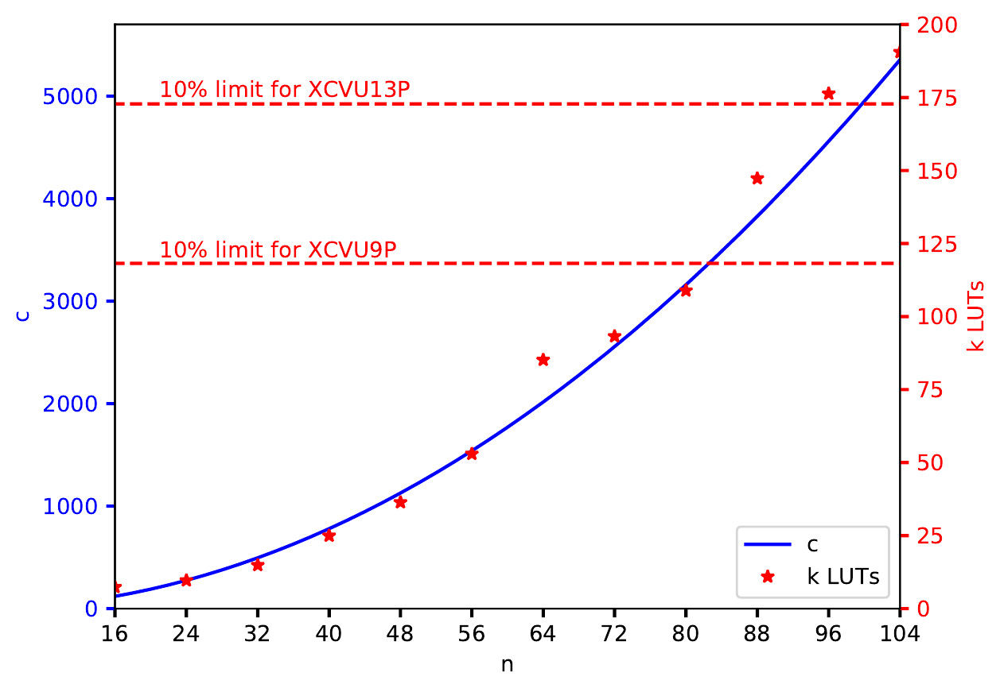
For 26 candidates that takes 325 comparisons. For 352 it takes 61,776, almost 200 times more. And the search for each place depends on the place before, so the 16 places have to be found one after another.
I tried it anyway, building the circuit for growing numbers of candidates. Beyond 88, the chip ran out of wiring to connect it all. Beyond 104, the design tools had not finished after a week. Some steps needed up to 100 gigabytes of memory. And the largest version that did work, for 88 candidates, took 120 nanoseconds, already 60% of the MUCTPI's whole time budget, for a quarter of the candidates. A different approach was needed.
Sorting networks
A computer program would sort by comparing items one after another, and how long it takes depends on the data. There is no time for that, and the delay must not depend on the data. The alternative is a sorting network: a fixed pattern of compare-and-swap operations wired into the chip. Each operation takes two values and puts the larger on top. Many happen side by side, in layers. The data passes through the same layers whatever its values, so the delay is always the same. The fewer the layers, the faster the answer.

A simple example with four values: in the first layer, compare the first with the second and the third with the fourth. In the second, compare the two winners, which gives the largest, and the two losers, which gives the smallest. In the third, compare the two in the middle. Three layers, five comparisons, and the four values are in order, whatever they were.
Batcher found the first systematic way to build such networks for any size in 1964, and in 1968 a method for merging sorted lists. His networks are not the best possible in theory: a network found in 1983 has better behaviour for enormous sizes. But it only wins beyond about 1052 values. There are about 3.6 × 1051 protons in the whole Earth, so even if every proton stored one value, Batcher's networks would still be faster for anything that could be built on this planet. In practice, they are the fastest way to sort in hardware.
To work with these networks I wrote a third program, later released as SNpy. It generates sorting and merging networks, removes the comparisons that are not needed, combines networks, counts their layers and comparisons, draws them, and writes the corresponding hardware description.
The zero-one principle
There is a beautiful shortcut for checking these networks, known as the zero-one principle. If a network correctly sorts every possible list made only of zeros and ones, it correctly sorts any list of numbers. For four values, instead of trying every arrangement of every possible number, you only have to try the 16 lists of zeros and ones. For large networks, that turns impossible checks into feasible ones.
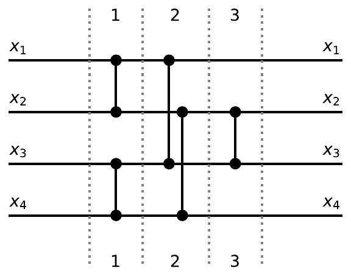
The best known networks
Nobody knows the best possible network for a size like 352. The fastest ones are proven only for small sizes, and some proofs took decades. For a few sizes, researchers have found networks faster than Batcher's. In 1972, David Van Voorhis found one for 16 values with 9 layers instead of 10. In 2009, Sherenaz Al-Haj Baddar found one for 22 values with 12 layers, one fewer than the fastest previously known. Whether hers is the fastest possible is still an open question.
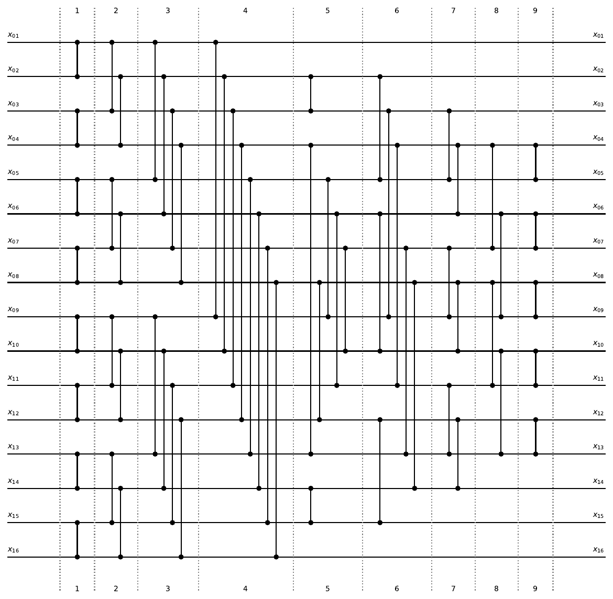
Divide and conquer
The textbook recipe for 352 inputs needs 45 layers and 4,446 comparisons. But the trigger only needs the top 16. A full sort of 352 values wastes effort ordering candidates that will be thrown away anyway.
So I split the problem. Sort small groups first, keep only the top 16 of each, then merge the groups pairwise, keeping the top 16 at each step, until one list is left. Think of a sports tournament: each regional league only sends its best players to the next round, and nobody spends time ranking the rest.
There are 22 ways of splitting the 352 inputs into groups of the same size, from a single group of 352 to 22 groups of 16. I wrote software that generates every option, removes the comparisons that cannot affect the 16 outputs, and counts layers and comparisons, so the choice could be made before building anything in hardware. The two fastest options used 16 groups of 22 or 22 groups of 16, and both needed 35 layers instead of 45.
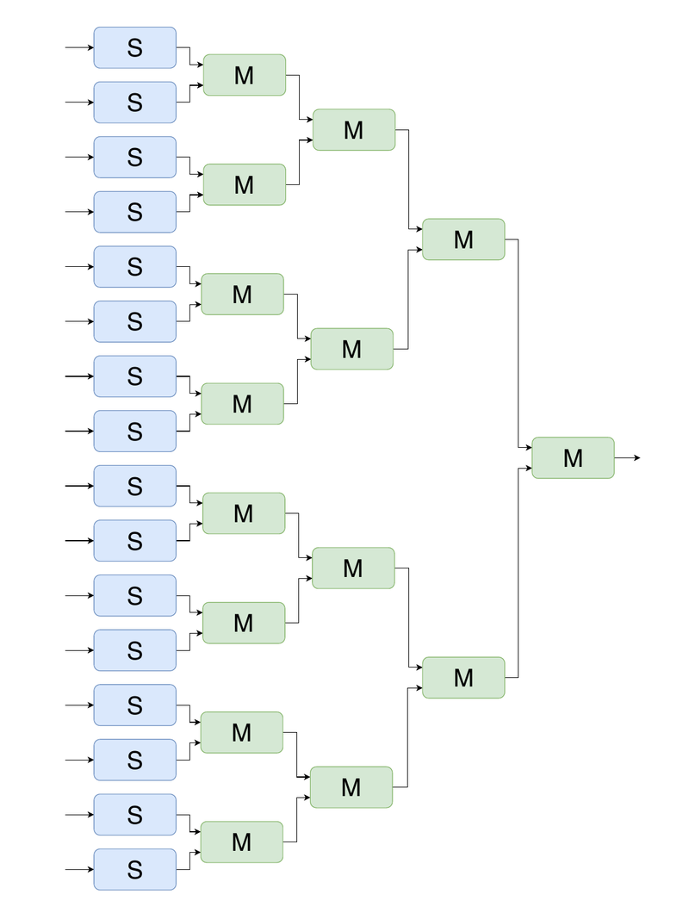
The merging part cannot be improved further: for two sorted lists of equal size, a power of two such as 16, Batcher's merging network is already the best possible. But the sorting part could. With groups of 22, I replaced the textbook sorter with Prof. Baddar's 22-value network, trimmed to deliver only the top 16. That brought the total down to 32 layers instead of 45, with 2,528 comparisons instead of 4,446. Prof. Baddar later sat on my thesis jury, and guided me in a field that was new to me.
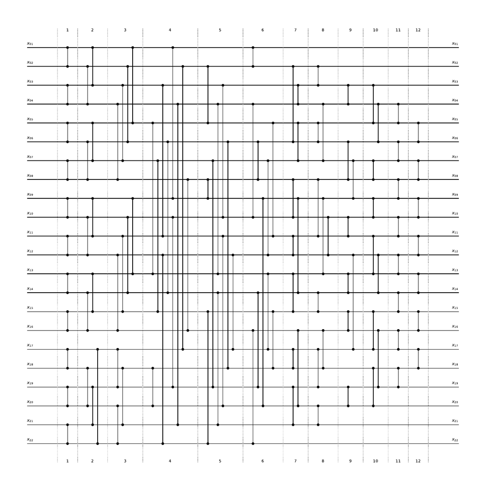
Testing a sorter that cannot be fully tested
How do you check a sorter with 352 inputs? Even with the zero-one principle, there are 2352 lists of zeros and ones. On a computer with 48 cores, checking about a million of them took about 100 seconds. Checking them all would take about 1097 days, longer than the age of the universe, many times over. Even if every proton in the Earth worked as fast as that computer, it would take 8 × 1039 thousand years. The board itself would be about 280,000 times faster than the computer, and it would still not be enough.
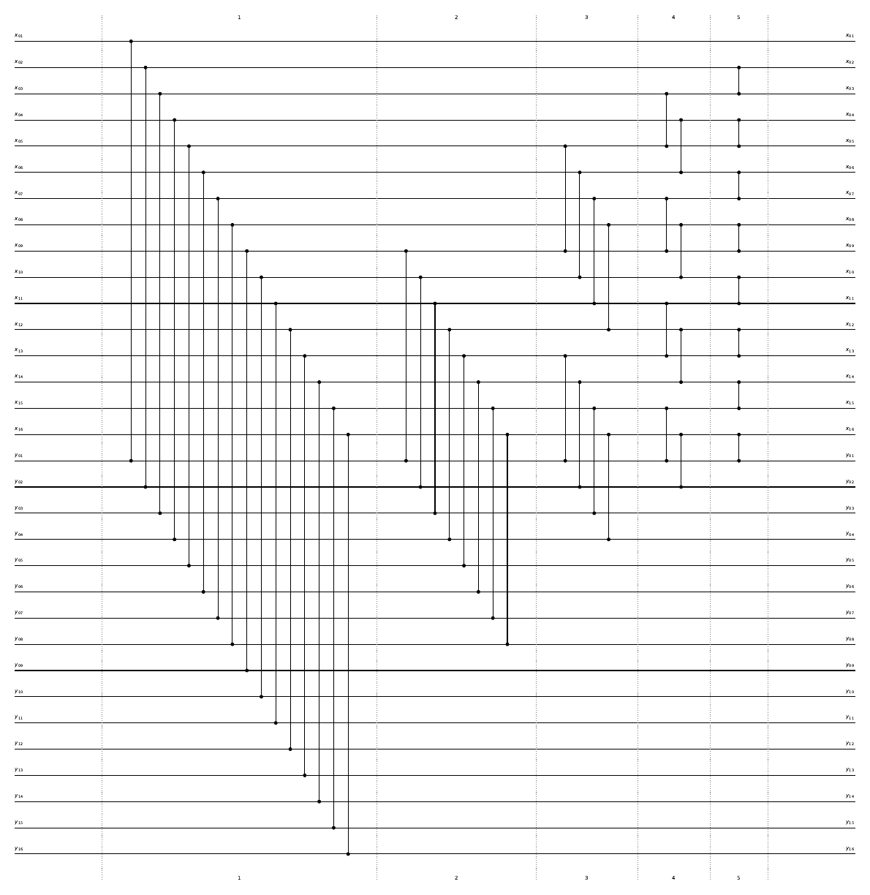
But the divide-and-conquer design helps here too: it is built from two kinds of block, and each block can be tested completely. I tested the 22-value sorter with all 222, about four million, lists of zeros and ones, and the merger with every possible pair of sorted lists of 16. No errors. As an extra check, I then tested the assembled network with about a billion lists chosen at random, which took a day and a half on the 48-core computer. No errors either.
Two ways of writing hardware
With the network designed and checked on paper, it had to become a circuit. There are two ways to describe a circuit for an FPGA.
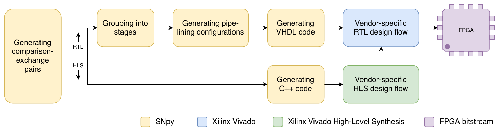
The traditional way is called register-transfer level. The designer describes, in a hardware description language, every register (a small memory that holds a value until the next clock tick) and the logic between them. You decide exactly what happens in each tick of the clock. It gives full control, and it demands that you spell everything out.
The newer way is called high-level synthesis. The design is written as an ordinary C++ program, here a simple loop over the 2,528 comparisons, and a tool works out what runs in parallel and in which clock tick. The designer guides it with a few directives instead of describing every detail.
I built the sorter both ways, independently, from the same list of comparisons produced by my sorting network software. The logic runs at 160 MHz, four ticks per crossing, and the sorter was allowed at most 50 nanoseconds, eight ticks. A circuit with 32 layers cannot do all of them in one tick, so registers have to be placed between some layers to split the work: this is called pipelining, like splitting an assembly line into stations. Fewer stations means less delay, but more work per station, and at some point a station cannot finish within one tick. Finding the smallest number of stations that still works was the main question.
Both versions have options, such as the number of stations and whether the full candidate data travels through the network or only the value being sorted. For each approach I tried 64 combinations automatically, with scripts that ran the FPGA tools and collected the timing, the resources used, the power and the time each run took.
Both reach the same speed: the sorted list comes out 31.25 billionths of a second after the data goes in, five ticks of the clock, and only 15% of the time allowed for the MUCTPI. The best C++ version had a little more timing margin (540 trillionths of a second against 370), used about 15% fewer logic blocks and about 12% more registers, at the same estimated power of about 6.3 watts.
The real difference was in the effort. By my estimate, the C++ version took at least ten times less work. It was easier to test, because the test bench is ordinary software and the same test checks both the program and the circuit the tool makes from it. Comparable versions built in under an hour where the traditional one could take a day; no C++ version took more than 10 hours, while some traditional versions had still not finished after 30 days.
What came out of it
Both parts are integrated in the MUCTPI firmware: the latency-optimised transceiver settings and the alignment circuit for the 208 inputs in part one, the 32-layer sorting network in part two. All links of all prototypes passed their tests, the data transfer and alignment take under 125 nanoseconds, and the sorting takes 31.25.
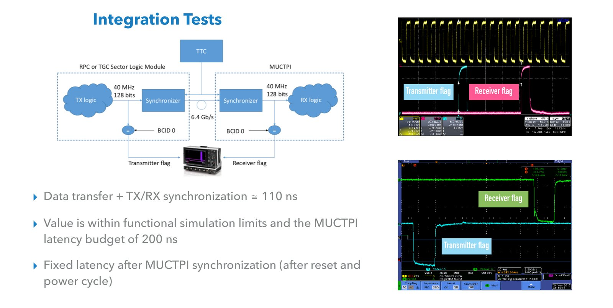
The three programs written along the way are public: PCBpy for reading wiring lists and generating firmware files, IBERTpy for testing links and writing reports, and SNpy for generating, optimising and checking sorting networks. The link-test tool has also been used on a board of another LHC experiment, CMS.
Some of the ideas reach beyond this board. The transceiver settings and the alignment circuit suit other systems that need short, fixed delays over fast links. The divide-and-conquer method suits any sorting problem where only the top few results are needed. And high-level synthesis proved a good tool for future trigger algorithms.
The increasing luminosity of the Large Hadron Collider (LHC) requires the ATLAS Level-1 trigger to become more selective while keeping its output below 100 kHz within a latency of 2.5 µs. More detector information is routed to the trigger and larger parts of it are processed together, which raises bandwidth and integration. Hardware and firmware must still have low and fixed latency and be reliable. My thesis, carried out at CERN from 2016 to 2021 and defended at EPFL in 2021, addresses these requirements in the data transfer and data processing of one Level-1 subsystem.
That subsystem is the Muon-to-Central-Trigger-Processor Interface (MUCTPI), which connects the barrel and endcap muon sector logic to the Central Trigger Processor (CTP) and to the Level-1 topological processor (L1Topo). For Run 3 it was rebuilt as a single Advanced Telecommunications Computing Architecture (ATCA) blade with three large FPGAs, a control system-on-chip and about 330 multi-gigabit links, replacing a 9U VME shelf of 18 modules. Part I shows that data reach this blade reliably, quickly and with the same delay after every reset. Part II designs the circuit that keeps the 16 highest-momentum muon candidates out of 352 per bunch crossing, implemented both in VHDL and with high-level synthesis.
Context: the ATLAS Level-1 trigger
Trigger architecture and latency budget
The LHC collides bunches every 25 ns (40 MHz). With an average of 25 collisions per crossing, events are produced at about 1 GHz. ATLAS reduces this to about 1 kHz written to permanent storage, in two levels. The first level (L1) is built from custom electronics; it combines information from the calorimeter and muon trigger processors into the Level-1 Accept (L1A) decision and reduces the rate to below 100 kHz. The High-Level Trigger, a farm of commercial computers, then applies software selection on regions of interest and full-granularity data to reach 1 kHz.
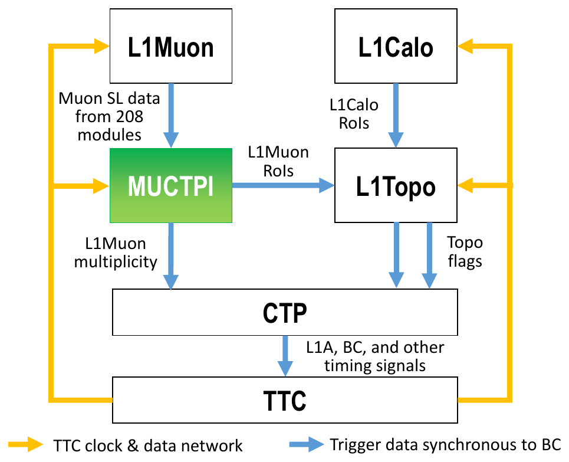
The L1 latency, from collision to the arrival of the L1A at the detector front-ends, must stay below 2.5 µs, because front-end pipeline memories hold the data only for that long. About 1 µs is spent in cables between the detector and the underground counting room, leaving about 1.5 µs for processing and data transfer in all L1 subsystems together. The L1 trigger is system-synchronous: processing is pipelined on the bunch-crossing clock distributed by the Timing, Trigger and Control (TTC) system, and front-end data are located only by the timing of the L1A, so any latency variation selects the wrong event.
In the muon trigger, Resistive Plate Chambers (RPC) in the barrel and Thin Gap Chambers (TGC) in the endcaps feed sector logic (SL) modules, which reconstruct tracks, classify them by transverse momentum (pT) threshold and send the highest-pT candidates of each of the 208 trigger sectors to the MUCTPI. The MUCTPI resolves double counting in overlap regions (a muon can be seen in two or three sectors), computes the muon multiplicity per pT threshold for the CTP, sends topological information to L1Topo, and on each L1A sends sector data and results to the data acquisition and High-Level Trigger. It also provides more than 300 monitoring counters and snapshot and replay memories. In my M.Sc. thesis I had already extended the legacy MUCTPI firmware to send topological information to L1Topo.
Three requirements
The thesis is organised around three requirements. Low latency, because front-end storage is limited and a late L1A loses the event. Fixed latency, because the pipelined trigger needs time-aligned inputs at every step and a variable L1A accepts the wrong crossing. Reliability, because corrupted trigger data discard rare events or accept uninteresting ones. Part I meets them with latency-optimised transceiver configurations, a synchroniser that absorbs residual transceiver variation and a systematic qualification of every link; Part II with data-oblivious algorithms (whose timing does not depend on the data), optimised for depth and verified by simulation and static timing analysis.
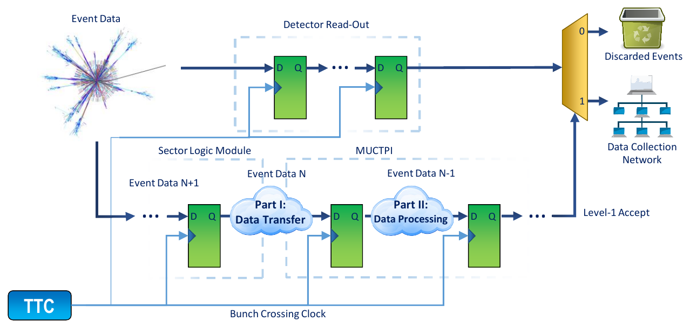
The Phase-I MUCTPI
The LHC reached its nominal luminosity of 10³⁴ cm⁻² s⁻¹ at the start of Run 2 (2015 to 2018); twice that is expected in Run 3, and 5 to 7.5 times in Runs 4 and 5 (2027 to 2040) after the High-Luminosity LHC upgrade. For the Phase-I upgrade, installed during Long Shutdown 2, no muon sensors are added, but serial optical links replace parallel electrical cables, so each sector can send up to 4 candidates instead of 2, with finer pT resolution. Overlap handling and sorting, previously limited to one-sixteenth of the detector, now cover one half, full-granularity muon positions go to L1Topo every bunch crossing, and muon-only topological algorithms become possible inside the MUCTPI. Serialisation adds latency; higher integration removes inter-module delays. For Run 4 the baseline is two MUCTPI cards, doubling I/O and processing capacity.
On the blade, two Muon Sector Processor (MSP) FPGAs each receive one detector half: 104 sector logic links through 9 Broadcom MiniPOD receivers, and up to 24 output links to L1Topo through 2 MiniPOD transmitters. The Trigger, Readout and TTC Processor (TRP), a Kintex UltraScale KU095, merges the two MSP results for the CTP, receives TTC through an SFP module and sends readout data through a QSFP+ module; one more MiniPOD carries trigger bits to the CTP, and a 68-pin VHDCI connector provides a parallel LVDS path for backward compatibility and minimum latency. Each MSP shares 47 LVDS pairs with the other MSP (about 30 Gb/s each way at 640 Mb/s), 70 LVDS pairs with the TRP (about 45 Gb/s) and 28 multi-gigabit links with the TRP (about 460 Gb/s at 10.24 Gb/s). A Xilinx SoC handles configuration, control and monitoring over Gigabit Ethernet and I²C, and loads the MSP and TRP bitstreams.
Three prototype versions were built. Version 1 uses UltraScale VU160 devices for the MSPs and a Zynq-7000 7Z030 SoC. Version 2 moves the MSPs to 16 nm UltraScale+ VU9P devices. Version 3 replaces the 32-bit dual-core SoC by a 64-bit quad-core Zynq UltraScale+ ZU3EG MPSoC and is the preferred version. The TRP is a KU095 in all three.
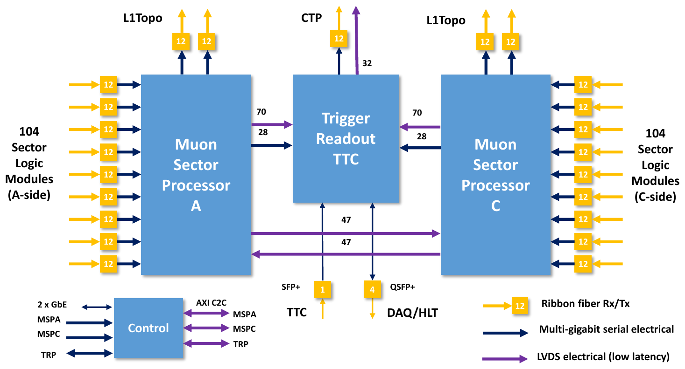
Part I: data transfer
Demonstrator and the MPOD FMC
Before any MUCTPI prototype existed, the choice of Xilinx UltraScale transceivers and 14 Gb/s Broadcom MiniPODs had to be validated. I built a demonstrator from a Xilinx VCU108 evaluation board and a custom double-width FPGA Mezzanine Card (FMC), the MPOD FMC (CERN EDMS EDA-03305, 2015). I designed the MPOD FMC myself, schematics and PCB layout, and developed its FPGA firmware and low-level software.
The card carries two jitter cleaners, a Texas Instruments CDCE62005 and a Silicon Labs Si5338, used to clean the TTC clock and generate the reference clock of the multi-gigabit transceivers (MGTs). TTC information can be received either electrically through a LEMO connector or optically through an SFP module. A 14 Gb/s MiniPOD transmitter and receiver pair reproduces the sector-logic-to-MUCTPI link, and a 40 Gb/s QSFP+ module is used to measure eye diagrams of the interface to the High-Level Trigger and data acquisition. SMA outputs give access to clocks for jitter measurement, and SPI and I²C interfaces configure the on-board devices.
With the demonstrator I obtained error-free bit-error-rate (BER) tests, wide eye diagrams and error-free synchronisation of sector logic data from the recovered clock to the system clock domain. It was also used to validate the TTC reception hardware and firmware and the online statistical eye scans later used on the MUCTPI. The first integration test with a TGC sector logic prototype, in November 2016, was run with this demonstrator, a year before the first MUCTPI prototype was available for the next one.
Measuring reliability: BER and confidence levels
Random noise, random jitter, single-event upsets and interference make errors occur at random times, so the true error probability cannot be measured in finite time; one shows instead that it lies below an upper limit with a given confidence level (CL). For the sector logic inputs one error per 24 h is acceptable, at most one fake trigger or lost event per day; at 6.4 Gb/s this is an upper limit γ ≈ 1.8 × 10⁻¹⁵. For an error-free run of n bits, CL = 1 − exp(−γn), so the test must last −ln(1 − CL) times the interval in which one error is allowed: about three times for CL = 95%. Three error-free days thus show fewer than one error per day. At 12.8 Gb/s, one error per day is 9 × 10⁻¹⁶.
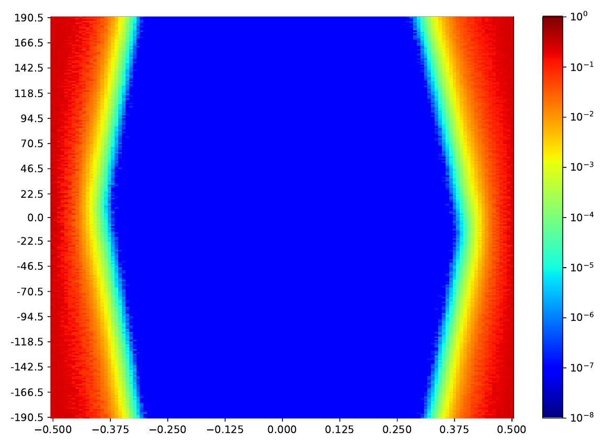
BER gives a pass or fail but no insight, and sampling oscilloscopes see too little of the bit stream to catch errors at 10⁻¹² or below, so I relied on statistical eye diagrams. A second sampler after the receiver equaliser, with programmable time and voltage offsets, counts disagreements with the main sampler without disturbing the data. With a target BER of 10⁻⁷ per point, a full scan of 32,895 points takes about one minute; at 10⁻¹⁵ it would take about 190 years. Each error-free point then has a confidence level of 1 − e⁻¹ ≈ 63%.
To turn eye diagrams into an objective test I applied an eye mask. Following IEC 61280-2-2 and the hit-ratio technique used in IEEE 802.3, I used the MiniPOD receiver mask, a scaled version of the IEEE mask with corners X1 = 0.29 UI, X2 = 0.5 UI, Y1 = 150 mV and Y2 = 425 mV and an allowed hit ratio of 5 × 10⁻⁵. Opening-area histograms across all links of a board then make it easy to spot outliers and to compare prototypes.
Test automation: PCBpy and IBERTpy
To simplify the MUCTPI layout, channel swaps and differential pair inversions were allowed. With 334 serial links, extracting connectivity and polarities from the schematics by hand is slow and error-prone, so I wrote two Python packages. PCBpy parses the back-annotated Cadence Allegro netlist and FPGA pin files and generates VHDL wrappers, placement and polarity constraints and netlist verification reports. IBERTpy generates the TCL that drives the Xilinx Integrated Bit Error Ratio Tester (IBERT) in Vivado, over Ethernet through a hardware server on the SoC: it maps links, sets polarities, runs BER tests and eye scans, plots eye diagrams, applies the mask, builds opening histograms and compiles a PDF report with a summary per MiniPOD and a page per link.
PCBpy found accidental polarity inversions in the MUCTPI schematics, which were fixed before the first PCB was produced, and its VHDL wrappers and placement constraints are used in the firmware of all MUCTPI FPGAs. IBERTpy has also been used at CERN to produce eye diagrams for the Barrel Calorimeter Processor board of the CMS Phase-II upgrade.
Qualification of the three prototypes
The test firmware uses the Xilinx IBERT core (PRBS generators and checkers, error counters, transceiver configuration over JTAG). All links of the three versions were checked with PRBS-31, then two long runs at 12.8 Gb/s, twice the Phase-I rate, were made. In the first, 112 links of version 2 (56 off-board in optical loopback and 56 on-board) ran for 10 days. In the second, all 208 sector logic inputs of version 3, driven by transmitters of versions 2 and 3, and its 56 on-board links ran in two 3-day parts of 104 inputs each, since the two boards have only 120 off-board transmitters. No errors were found: the BER is below 9 × 10⁻¹⁶ with CL = 99.99% for the first run, and with CL = 95% for the sector logic inputs and 99.75% for the on-board links in the second, that is, fewer than one error per link per day.
An optical eye diagram of an MSP output to L1Topo at 11.2 Gb/s, measured with a 33 GHz Keysight oscilloscope and an optical-to-electrical converter, shows a 76% horizontal opening. Changing transceiver pre-emphasis and MiniPOD input equalisation brought no significant gain, as expected: the traces from FPGA to MiniPOD are short and the loss from connectors and ribbon fibres is below 3 dB, well within what the vendor calls a low-loss channel (below 14 dB at Nyquist), for which receiver adaptation alone is recommended.
Statistical eyes of sector logic inputs open about 75% in area at 6.4 Gb/s on all versions. At 12.8 Gb/s the same input opens about 47% on version 1, where it uses a GTH transceiver (rated to 16.375 Gb/s), and about 57% on versions 2 and 3, which use only GTY transceivers (rated to 30.5 Gb/s). Over all 208 inputs at 6.4 Gb/s, version 1 ranges from 55% to 80% (average 67%) in two groups, GTY receivers forming the lower one; version 2 from 66% to 78% (average 74%); version 3 from 70% to 78% (average 75%), helped by raising the MiniPOD transmitter equalisation to 0x33. At 12.8 Gb/s, a stress test, averages are 50%, 54% and 55%, with worst links near 40%. Every link of every version passes the mask test at both rates, the worst at 12.8 Gb/s with little margin.
Integration tests
Integration tests used PRBS-31 at 6.4 Gb/s for sector logic and 11.2 Gb/s for L1Topo. After the demonstrator test of 2016, a TGC sector logic prototype was connected to MUCTPI version 1 in November 2017 and an RPC sector logic interface card in November 2018, with no errors in overnight runs. The 12 TGC links (7-series GTX transmitters) opened between 58% and 74%; the RPC link opened 65% both with and without a 7 dB optical attenuator.
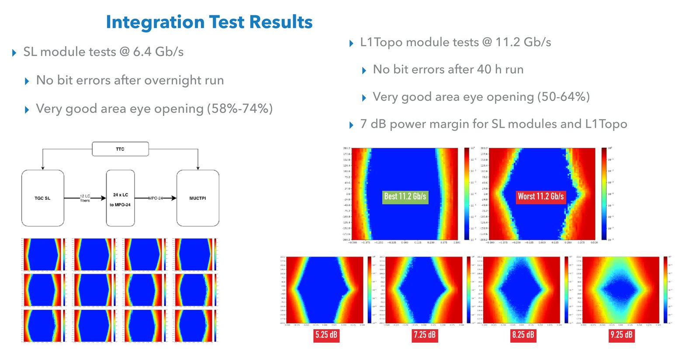
With L1Topo, in May 2019, all 48 MSP outputs of MUCTPI version 2 were connected at 11.2 Gb/s, GTY to GTY. In a 39-hour run, 45 of 48 links were error-free, corresponding to a BER of about 1.9 × 10⁻¹⁵ at 95% CL; the three failing channels were a known problem on the L1Topo side. The best and worst eyes had 100% vertical opening at the centre and 68% and 69% horizontal opening. A configurable optical attenuator showed errors starting at 7.75 dB and 8.25 dB on the two links, so the optical power margin towards L1Topo is about 7 dB, comfortable given that each standard MPO connector adds at most 0.75 dB.
Transceiver latency optimisation
Serial transceivers are heavily pipelined and, since deterministic latency is not needed in most applications, their default configurations trade latency and determinism for easier clock-domain crossing. Sector logic and MUCTPI links use 8b10b encoding: 16 user bits per 320 MHz user clock cycle become 20 serialised bits at 6.4 Gb/s. The encoding guarantees transitions for clock and data recovery (CDR) at the receiver, DC balance for capacitive coupling, and easy distinction between control and data symbols. The clock is not transmitted; the receiver recovers it from the data.
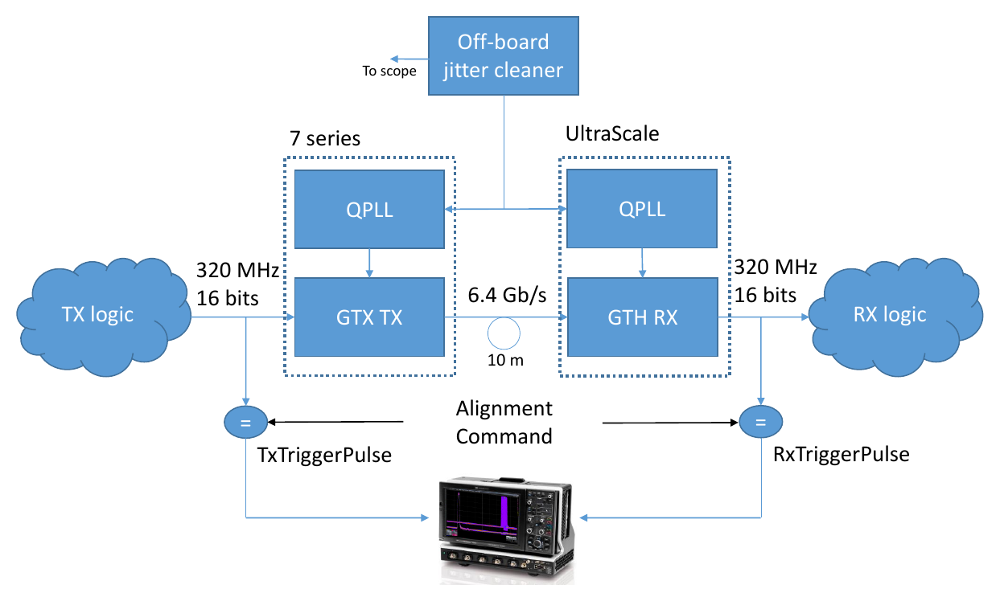
To measure transceiver latency and its variation I built a test system with a Xilinx KC705 board (Kintex-7 GTX transmitter) and a VCU108 board (UltraScale GTH and GTY receivers), both fed with the same reference clock from a Silicon Labs Si5338 evaluation board. The transmitter sends a periodic sequence and both ends assert a pulse each time it repeats; a 1 GHz oscilloscope, connected with equal-length cables, measures the offset between the two pulses. Resetting the transceivers every 3 s and accumulating thousands of waveforms reveals the latency uncertainty.
Bypassing the TX phase-adjust FIFO and the RX elastic buffer reduced the transceiver-to-transceiver latency from about 67 ns to about 50 ns, and the uncertainty from two user clock periods (6.25 ns) to 3.125 ns. On the transmit side the remaining variation came from the TX PMA programmable divider, whose reset is not synchronous to the reference clock. Setting the reference clock to the user clock frequency lets the user clock come directly from it (TXOUTCLK = TXPLLREFCLK_DIV1 instead of TXPROGDIVCLK) through the delay aligner, giving the transmitter a fixed phase to the bunch-crossing clock and a fixed latency. The RPC and TGC teams adopted this transmitter configuration in their sector logic firmware.
On the receive side the PMA clock dividers cannot be avoided, because the phase between the recovered and reference clocks is unknown, so their reset leaves an uncertainty of one user clock period, 3.125 ns at 6.4 Gb/s. It could be removed by aligning words through phase-shifting the recovered clock rather than shifting the data, but that requires a manual comma-alignment mode the vendor does not support. Since 3.125 ns is only 12.5% of the bunch-crossing period, I chose to absorb it in the synchronisation IP instead.
Synchronisation and alignment IP
Every bunch crossing, each sector logic module sends a 160-bit frame, of which 128 bits (eight 16-bit words) carry data after 8b10b encoding. An RPC frame holds up to 2 candidates, each with a 5-bit region-of-interest (RoI) number, a 3-bit pT threshold and 4 flag bits; a TGC frame holds up to 4 candidates with an 8-bit RoI, a 4-bit pT threshold and 4 flags. Both carry 4 global flag bits, a 12-bit bunch-crossing identifier (BCID) and a CRC-8, followed by a K29.7 end-of-frame symbol, D5.6 padding and a K28.5 comma used for word alignment. The comma is not repeated within 40 bits so that a 32-bit transceiver interface remains possible in the future.
The MUCTPI receives each link synchronously to its recovered clock (period 3.125 ns, 20 unit intervals). The IP must move each of the 208 inputs into the system clock domain with low and fixed latency, despite two effects. First, an unknown but fixed phase offset, due to fibre length mismatches and part-to-part skew, made of a part within one frame (synchronisation) and an integer number of bunch crossings (alignment). Second, a receiver latency that changes by up to one recovered clock period, in either direction, after every reset.
The design uses dual-port memories written with the recovered clock and read with the system clock: two (RPC) or four (TGC) memories of 32 16-bit words for candidates, and two for global flags, BCID and CRC. A write controller drives a common write pointer from the incoming data and an alignment pulse; a read controller loads a configurable read pointer offset on the same pulse. The pulse crosses into each recovered clock domain through a two-stage synchroniser placed in one slice, and its write-side delay can be set in 8 steps of one recovered clock period. A BCID latch and a CRC checker detect misaligned or corrupted frames. The system clock runs at 160 MHz with an enable every fourth cycle.
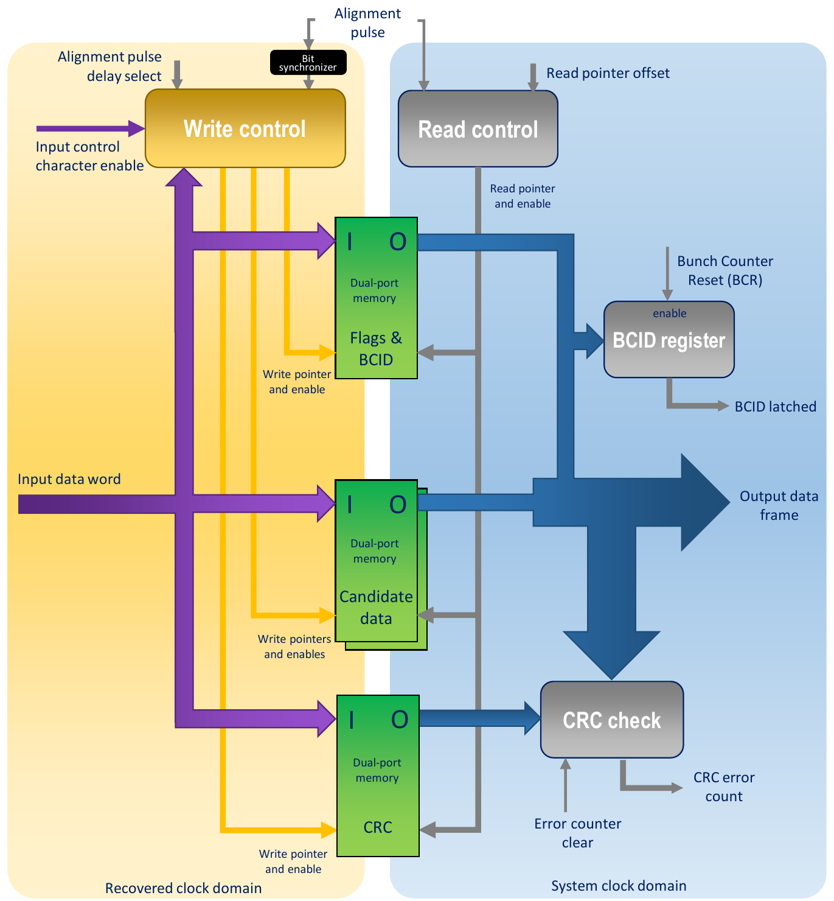
Calibration and functional simulation
I verified the IP with a functional simulation in ModelSim driven by a Python 3.7 test bench written with cocotb. Concurrent coroutines generate the TTC signals and the sector logic data with a configurable phase offset in steps of one unit interval (0.15625 ns), while a third coroutine configures the IP and reads back BCID and CRC error counters. For every calibration phase within a bunch-crossing period, the simulation sweeps the phases the input may take after later resets, over a range of up to ±8 recovered clock periods to measure the margins.
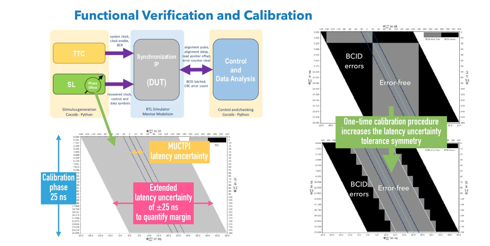
Without alignment delay, inputs whose frame boundary falls close to the alignment pulse show BCID errors for latency changes of a single unit interval: a 20-unit-interval shift moves the output by a whole bunch crossing. Metastability in the pulse synchroniser can shift its delay by one period either way, which I modelled as extra write-side phase variation instead of running a metastability-aware simulation. The calibration therefore steps the alignment delay through its 8 values, finds where the latched BCID changes, and sets the delay opposite, at the frame centre. This guarantees error-free writes for phase changes from −3 to +4 recovered clock periods.
The simulation also produced the minimum- and maximum-latency read pointer offsets for every calibration phase and the offsets tolerating a given variation; with them, no BCID or CRC errors occurred for ±1 period, nor for −3 to +4 periods, and the output phase never changed. The synchronisation latency, from the end-of-frame word to the complete output frame, ranges from 3.125 ns to about 34.22 ns (219 unit intervals) for ±1 period of tolerance; each extra period of tolerance or an input register adds 3.125 ns, an output register 6.25 ns. The tolerated variation exceeds the measured transceiver uncertainty.
Integration and measured latency
In integration tests the TTC system distributed the same 40 MHz clock to an RPC or TGC sector logic module and to the MUCTPI. With the calibrated settings the CRC error counter stayed at zero across resets and an overnight run, and a 4096-crossing snapshot checked in software was error-free. From the transceiver latency and simulated synchronisation latencies, the end-to-end latency was expected between 76 and 130 ns for RPC and between 88 and 142 ns for TGC. After correcting for fibre and cable delays, I measured about 109 ns (about 4.3 bunch crossings) for RPC and about 112 ns (about 4.5) for TGC, unchanged after resets and power cycles. Total transfer and synchronisation latency is below 125 ns, about 60% of the MUCTPI latency budget.
Part II: data processing
The trigger unit and its sorting requirement
Each MSP receives 32 RPC and 72 TGC inputs, carrying 2 and 4 candidates respectively: 352 candidates per bunch crossing, most of them empty. In the trigger unit, the overlap handling logic uses precalculated results to decide whether a pair of candidates lies in an overlap region, for every combination of overlapping sectors in the same or adjacent regions of one detector half, and vetoes the one with lower pT. A masking unit sets the pT of vetoed candidates to zero. The sorting unit must then output, every bunch crossing, the complete information (sector number, flags, RoI and pT) of the 16 highest-pT candidates, the topological trigger objects sent to L1Topo, while a multiplicity unit counts up to 7 candidates for up to 32 pT thresholds. The sorting unit runs at 160 MHz and must not exceed 50 ns, eight clock cycles.
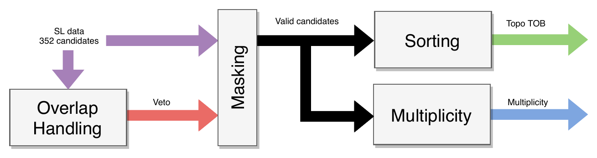
Why the Run 2 comparison matrix does not scale
The Run 2 MUCTPI, as part of my M.Sc. work, selected 2 of 26 candidates with a full comparison matrix: n(n − 1)/2 comparators computed in parallel, a selection stage in which a row of all-true results flags the maximum as a one-hot vector, and one-hot multiplexers to output the candidate data. Each further output requires inverting all results involving the previous winner, so selection is sequential. For 26 inputs this needs 325 comparators; for 352 it needs 61,776, almost 200 times more, and the number of sequential selection steps grows from 2 to 16.
I synthesised this algorithm for 16 to 104 inputs. Above 104 inputs synthesis did not finish within a week; above 88, routing failed for lack of resources. LUT usage, proportional to the number of comparators, already exceeded the 10% of the VU9P allotted to sorting above 80 inputs. The combinatorial delay was 20 ns for 16 inputs and 120 ns for 88, already 60% of the MUCTPI latency budget, and some synthesis runs needed up to 100 GB of memory. The approach is unusable for Run 3.
Sorting networks
A sorting network is a fixed sequence of compare-exchange operations. Non-overlapping operations form a step and run in parallel, so the hardware delay is proportional to the number of steps, and the latency does not depend on the data. Batcher's merge-exchange algorithm (1964) and his odd-even and bitonic merging networks (1968) give constructions for any n with O((log n)²) steps; asymptotically better AKS networks only overtake them for about 1.2 × 10⁵² keys, so Batcher's are the fastest practical ones. Faster networks exist only for particular sizes: Van Voorhis's 16-key network (1972) has 9 steps and 61 comparators, one step fewer than Batcher's; Al-Haj Baddar's 22-key network (2009) has 12 steps, one fewer than any previous one, with 116 comparators. A network is validated by the zero-one principle: if it sorts all 2ⁿ binary sequences, it sorts any n numbers.
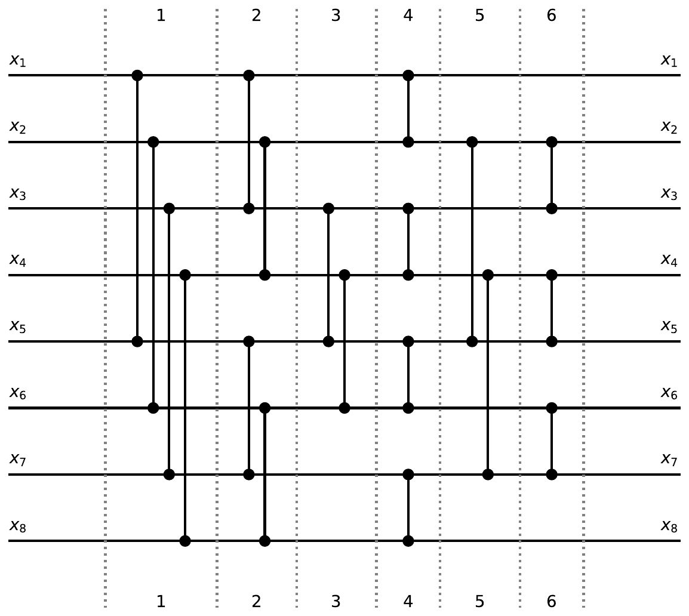
SNpy and network optimisations
I wrote SNpy, a Python package that generates, optimises, combines, plots and writes VHDL and C descriptions of sorting and merging networks; all Knuth diagrams in the thesis come from it. It implements two kinds of optimisation. The first removes comparators driven by unused inputs, or not needed to produce the required outputs: an 8-input network keeping only 2 outputs loses 4 of its 19 comparators. The second removes comparators made redundant by inputs known to be pre-sorted, scanning forward from the first step, or by outputs that need not be sorted, scanning backward from the last; in one 8-key example only 3 of 6 steps remain.
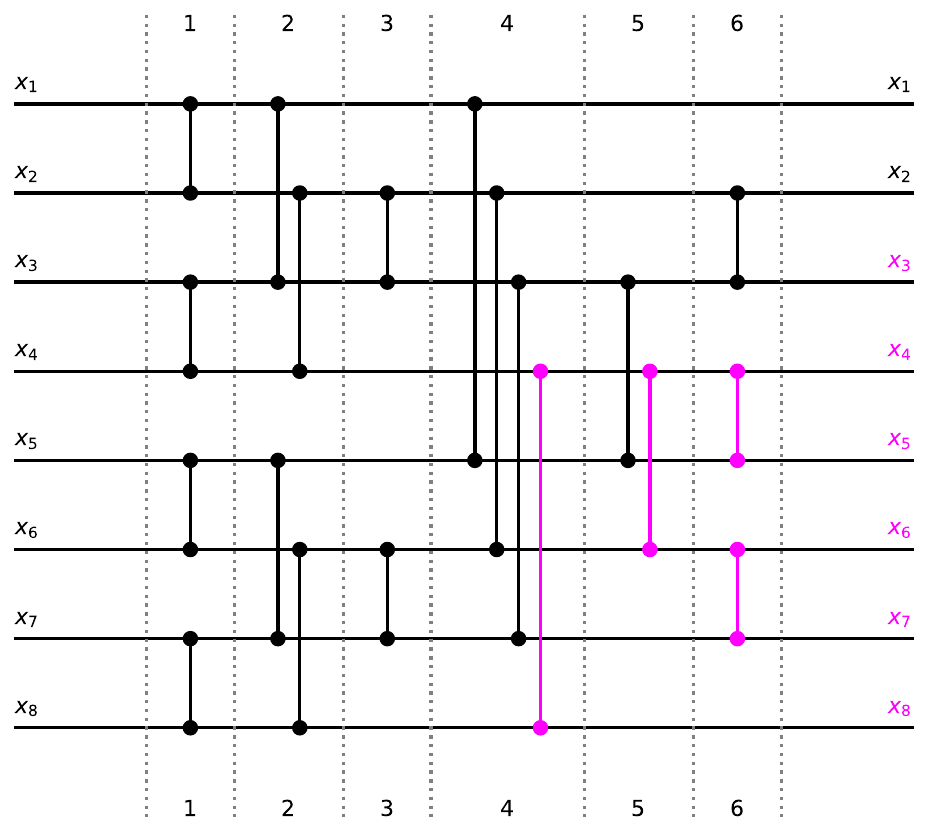
With these tools I compared Batcher's three constructions for every n from 2 to 512 (2¹ to 2⁹). All have equal depth at powers of two, but merge-exchange gives the lowest depth for other sizes and never needs more comparators; bitonic mergesort always needs the most, its advantage being a modularity the MUCTPI does not need. For merging two sorted sequences of equal power-of-two length, the odd-even merge has the same, optimal depth as the bitonic merge with fewer comparators, hence less routing congestion.
Divide and conquer
When far fewer outputs than inputs are needed, sorting everything is wasteful: in a 64-key mergesort keeping 16 outputs, each 32-key half is fully sorted although only its top 16 can reach the output. I therefore split the 352 inputs into R equal groups, sort each group concurrently with a merge-exchange network pruned to 16 outputs, and merge the groups with a binary tree of R − 1 odd-even (16,16) merging networks, each pruned to 16 outputs (48 comparators and 5 steps per merger). SNpy generated, optimised and combined all 22 options, R = 1 to 22 (every group must hold at least 16 inputs), and reported depth and comparator count before any hardware was written.
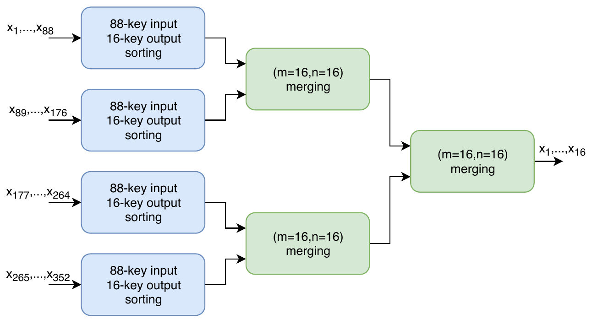
Two properties compete. A larger R makes the groups, and hence the sorting part, smaller and faster; but the merging tree has ⌈log₂ R⌉ levels, so it is most efficient when R is a power of two: merging 10 or 16 groups takes the same 20 steps. The 352-key merge-exchange network alone (R = 1) needs 45 steps and 4,446 comparators; R = 2 already brings this to 41 steps and 3,632 comparators. The best options reach 35 steps (R = 11 to 16 and R = 22). Among them, R = 22 has the fastest sorting part (16-key groups, 10 steps) and R = 16 the most efficient merging part (4 levels, 20 steps).
| Option | Group sorter | Sorting steps | Merging steps | Total steps | Comparators |
|---|---|---|---|---|---|
| R = 1 | merge-exchange, 352 keys | 45 | 0 | 45 | 4,446 |
| R = 2 | merge-exchange, 176 keys | 36 | 5 | 41 | 3,632 |
| R = 16 | merge-exchange, 22 keys | 15 | 20 | 35 | 2,496 |
| R = 22 | merge-exchange, 16 keys | 10 | 25 | 35 | 2,394 |
| R = 22 | Van Voorhis, 16 keys | 9 | 25 | 34 | 2,350 |
| R = 16 (selected) | Al-Haj Baddar, 22 keys | 12 | 20 | 32 | 2,528 |
The table summarises the main options for a 352-input, 16-output network (thesis Tables 7.2 and 7.3). The merging part cannot be improved, because the odd-even merge is already optimal for equal power-of-two sets, but the sorting part can, wherever a network faster than merge-exchange is known.
The selected network
Both candidate group sizes have such a network. The 9-step Van Voorhis network gains only one step over merge-exchange for R = 22, giving 34 steps. The 12-step Baddar network gains three steps for R = 16, giving 32 steps with 2,528 comparators: each of the 16 sorters, pruned to 16 outputs, has 113 comparators, and the 15 mergers have 720 in total. The best option is thus not the largest R but the largest power-of-two R. The selected network sorts with 13 fewer steps than the 45-step 352-key Batcher merge-exchange, odd-even or bitonic networks, because it produces only the 16 outputs the MUCTPI needs.
Two further optimisations were studied and not used. Exploiting the sorted pairs and quadruples sent by RPC and TGC sector logic would save only one step on the worst-case RPC path while constraining input wiring. Replacing the last merger by a single Alekseev selection layer would give 28 steps but deliver the 16 candidates unsorted. Both remain options for future upgrades with more candidates per sector or more outputs.
Validation with the zero-one principle
Using the zero-one principle in SNpy, I verified the pruned 22-key sorter with all 2²² binary inputs on its 16 outputs, and the merger with every pair of sorted 16-key sequences; no errors were found, which validates the network. As an exploratory exercise I estimated the cost of testing the full network exhaustively: on 48 cores of a high-performance computer, 2²⁰ patterns took about 100 s, so the 2³⁵² patterns would take about 10⁹⁷ days. Twenty instances of the network at 160 MHz in a test firmware on the MUCTPI would check 2²⁰ patterns in about 350 µs, 2.8 × 10⁵ times faster, still 3.5 × 10⁹¹ days in total. A random subset of 2³⁰ patterns, tested in 1.5 days on the computer, showed no errors.
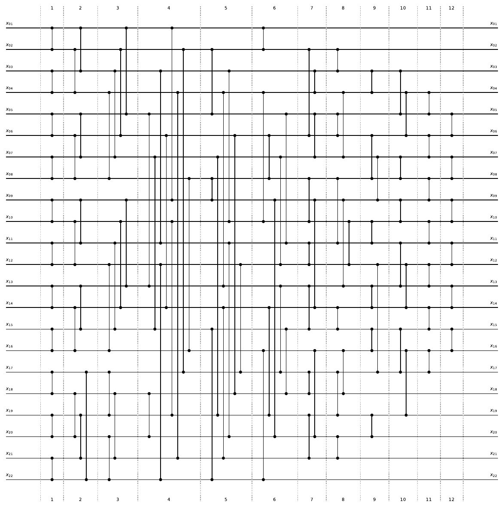
RTL implementation
Both implementations start from the compare-exchange pairs produced by SNpy. In the register-transfer level (RTL) flow the pairs are grouped into steps and the network is an array of compare-exchange (C), bypass (B) and registered (CR, BR) units, one per pair of lines in each step; the C unit compares pT and swaps the whole candidate record. SNpy writes the array into a VHDL package, with a function that selects the registered steps, so the hand-written VHDL covers all configurations through generics. Register retiming in Synplify Premier and Vivado could not reach deep into a network this large, so I placed pipeline registers explicitly, spread evenly over the 32 steps.
The options were the latency L from 1 to 8 clock cycles; the architecture M, propagating the full 25-bit candidate record (9-bit identifier, 4-bit pT, 8-bit RoI, 4 flags) through the network (M = 0) or only identifier and pT, multiplexing RoI and flags in an extra cycle (M = 1); the hierarchy H, with sorter and merger sub-modules (H = 3) or a flat 176-by-32 array (H = 2); and synthesis keeping (R = 0) or flattening (R = 1) the hierarchy. All 64 implementations were built out of context and verified with a cocotb test bench on random candidates for 100,000 bunch crossings.
Two options closed timing at L = 4, by only 20 ps, and were discarded; from L = 5 timing was comfortable, and further pipelining added little as routing delays dominate. Propagating the full record (M = 0) gave up to three times more slack than the multiplexer variant. The best RTL option, {L = 5, M = 0, H = 3, R = 0}, has a worst negative slack (WNS) of 370 ps. Hierarchy barely affected timing but strongly affected run time: flat descriptions took up to about 220 times longer to synthesise, some not finishing after 30 days, whereas H = 3 always synthesised in about 20 minutes. LUT usage ranged from 4.1% to 8.5% of the VU9P.
HLS implementation
In the high-level synthesis (HLS) flow, SNpy writes a C header with all 2,528 pairs, and the sorting unit is a loop calling an inlined compare_exchange function on an array of candidate structures. Directives partition arrays into registers, unroll loops, define the interfaces and set latency and initiation interval (II) per solution; grouping into steps and pipelining are left to the tool. Since the logic runs at four times the bunch-crossing rate, II = 4 was also explored, a one-line change in HLS that would need a different RTL description. The 64 solutions sweep L, II in {1, 4}, M and R, all verified in C and RTL simulation.
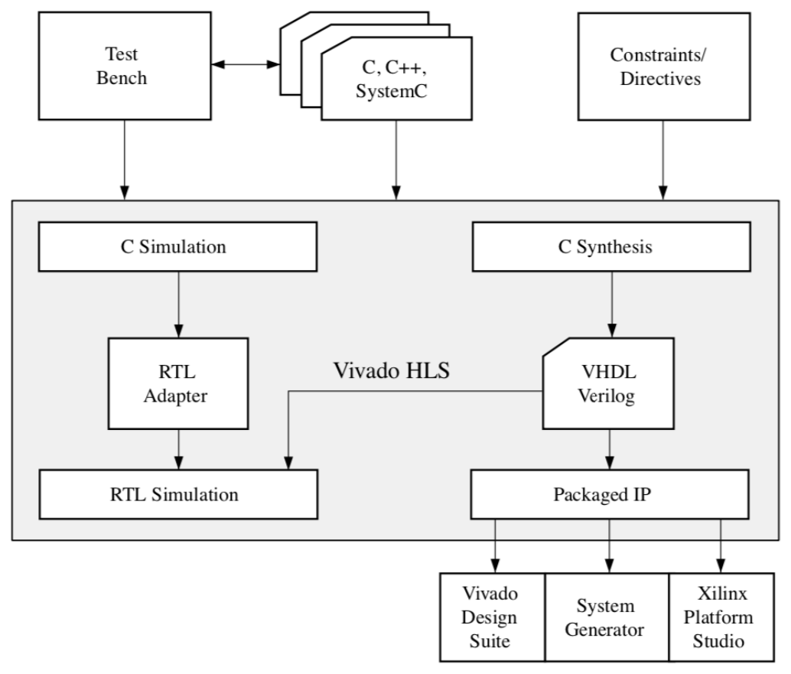
C-synthesis estimates were unreliable, with LUT and flip-flop counts up to three times the final values, so only post-implementation results were used. The best solution, {L = 5, M = 0, II = 1, R = 1}, has a WNS of 540 ps. II = 4 saved about 30% of flip-flops and 40% of estimated power at L = 5, at the cost of timing. Every solution synthesised in under 30 minutes and none took more than 10 hours to implement; LUT usage ranged from 3.9% to 6.2%.
RTL versus HLS
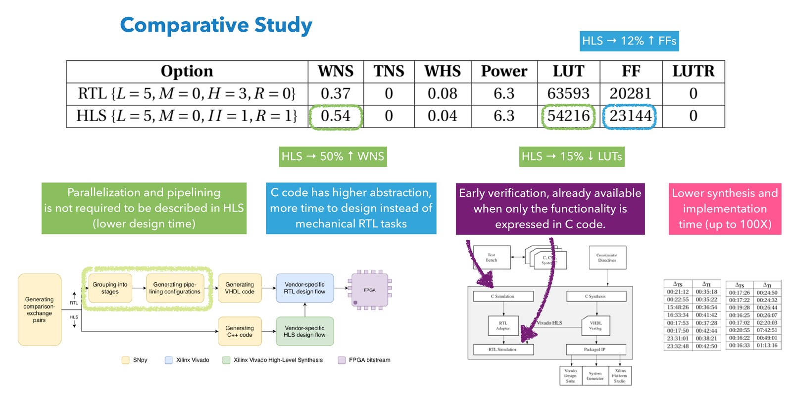
| Best option | Latency | WNS | WHS | Power | LUTs | Flip-flops |
|---|---|---|---|---|---|---|
| RTL {L = 5, M = 0, H = 3, R = 0} | 31.25 ns | 370 ps | 80 ps | 6.3 W | 63,593 | 20,281 |
| HLS {L = 5, M = 0, II = 1, R = 1} | 31.25 ns | 540 ps | 40 ps | 6.3 W | 54,216 | 23,144 |
Both approaches implement the network in five clock cycles at 160 MHz, 31.25 ns, about 15% of the MUCTPI latency budget. The best HLS result has about 50% more slack, about 15% fewer LUTs and about 12% more flip-flops than the best RTL result, at the same estimated 6.3 W. I estimate the RTL design took at least ten times longer: HLS removes schedules, resources and pipeline registers from the description, explores options through directives, and checks the C model and generated RTL with the same software test bench. Tool run times also favoured HLS: RTL options with {L = 5, M = 0, H = 2} took up to about 24 h to implement, against under an hour for the HLS equivalent. These conclusions are specific to this sorting unit.
Outcome and outlook
Both parts are integrated in the MUCTPI firmware. On the data-transfer side, the thesis demonstrated the transceiver and optics choice with the MPOD FMC demonstrator, qualified every serial link of three prototypes to a BER below 9 × 10⁻¹⁶ at 95% CL at twice the Phase-I rate, found transceiver configurations with about 50 ns latency and 3.125 ns uncertainty, and delivered a calibrated synchronisation IP that brings 208 inputs to the system clock with a fixed total latency below 125 ns. On the processing side, it replaced a comparison matrix that could not be built by a 32-step sorting network, 13 steps shallower than Batcher's, implemented with a latency of 31.25 ns in both RTL and HLS.
The tools and methods carry over. PCBpy and IBERTpy give a complete performance report for boards with hundreds of serial links without reading schematics by hand. The transceiver configurations suit other applications with latency requirements of tens of nanoseconds, and the synchronisation IP suits any system that must absorb transceiver latency uncertainty. The divide-and-conquer method applies to other sorting problems with far fewer outputs than inputs, and HLS is a productive route for other trigger algorithms. The software is open source: PCBpy for netlist-driven firmware generation, IBERTpy for link testing and SNpy for sorting networks.
The jury
- Prof. Giovanni De Michelijury president
- Professor at EPFL, where he directed the Integrated Systems Laboratory, and before that Professor of Electrical Engineering at Stanford University. He wrote the textbook Synthesis and Optimization of Digital Circuits and is credited with the network-on-chip design paradigm. He is a Fellow of ACM and IEEE; his awards include the IEEE Emanuel Piore Award and the Phil Kaufman Award.
- Prof. Yusuf Leblebicithesis director
- Chair professor at EPFL and director of its Microelectronic Systems Laboratory from 2002 to 2018, with a PhD from the University of Illinois at Urbana-Champaign. An IEEE Fellow and co-author of widely used textbooks on CMOS digital integrated circuits, he has been President of Sabancı University in Istanbul since November 2018.
- Dr Alain Vachouxthesis co-director
- Senior scientist at the EPFL Microelectronic Systems Laboratory. His work centres on hardware description languages and design methods for analog and mixed-signal systems, including VHDL-AMS and SystemC-AMS. He followed this thesis from the first day to the last.
- Prof. Sherenaz Al-Haj Baddarexaminer
- Computer scientist at the University of Jordan. She received her PhD at Kent State University under Kenneth E. Batcher, the inventor of the classic sorting networks, and with him discovered the fastest known networks for 18 and for 22 inputs and wrote Designing Sorting Networks: A New Paradigm (Springer, 2011). The 22-input network is the building block of the sorter in this thesis.
- Dr Stefan Haasexaminer
- Electronics engineer at CERN in the ATLAS Level-1 Central Trigger group, where this work was carried out. He supervised my work at CERN from the master's thesis onwards.
- Prof. Andreas Burgexaminer
- Professor at EPFL, where he leads the Telecommunications Circuits Laboratory. He holds a doctorate from ETH Zurich, co-founded the ETH spin-off Celestrius, and has taken part in the development of more than 25 integrated circuits for communications.
Dentro do Grande Colisor de Hádrons, pacotes de prótons se cruzam 40 milhões de vezes por segundo, e cada cruzamento produz cerca de 25 colisões. Gravar tudo é impossível: o detector encheria uma pilha de CDs até a Lua em três meses. Já um bóson de Higgs aparece mais ou menos uma vez a cada três horas.
Por isso o experimento precisa escolher, na hora, quais cruzamentos guardar. Esse é o trabalho do trigger. Seu primeiro estágio é feito de eletrônica dedicada e tem 2,5 milionésimos de segundo para reduzir 40 milhões de cruzamentos por segundo a 100 mil. O que ele rejeita está perdido para sempre. Se for lento, os dados sobre os quais está decidindo já foram sobrescritos. Se não for confiável, eventos raros são jogados fora e eventos banais são guardados.
Passei cinco anos, de 2016 a 2021, trabalhando em uma peça desse primeiro estágio no CERN, como doutorando da EPFL. Esta página conta a história da minha tese sem as equações: qual era o problema, o que eu construí, como testei e o que resultou disso.
O colisor, o detector e o trigger
O CERN, perto de Genebra, foi fundado em 1954 por 12 países europeus e é hoje o maior laboratório de física de partículas do mundo. Sua maior máquina, o Grande Colisor de Hádrons (LHC), é um anel de ímãs supercondutores com 27 quilômetros de extensão, em um túnel a 100 metros de profundidade. Dois feixes de prótons circulam por ele em sentidos opostos, agrupados em pacotes. A cada 25 bilionésimos de segundo, dois pacotes se encontram no meio de um detector.
O ATLAS é o maior desses detectores: cerca de 45 metros de comprimento, mais de 25 metros de altura e cerca de 7.000 toneladas. Ele é construído em camadas, como uma cebola: as camadas internas seguem as trajetórias das partículas com carga, e os calorímetros em volta delas param a maioria das partículas e medem sua energia. Só dois tipos de partícula atravessam tudo isso: os neutrinos, que escapam sem ser vistos, e os múons, primos mais pesados do elétron. A camada mais externa do ATLAS, o espectrômetro de múons, existe para pegar os múons.
O trigger funciona em dois níveis. O primeiro, chamado Nível 1, é feito de eletrônica dedicada. Ele olha para uma visão simplificada e rápida de cada cruzamento, vinda principalmente dos calorímetros e de câmaras de múons dedicadas, e decide em até 2,5 microssegundos se vai guardá-lo. Enquanto ele decide, os dados completos do detector esperam em pequenas memórias ao lado dos sensores, mais ou menos como uma esteira que derruba o que chega ao fim. Cerca de um microssegundo desses 2,5 vai só no trajeto dos sinais pelos cabos, do detector até a sala de eletrônica e de volta. Sobra cerca de 1,5 microssegundo para dividir entre toda a eletrônica do Nível 1.
Os cruzamentos aceitos pelo Nível 1, até 100 mil por segundo, seguem para o segundo nível, o High-Level Trigger, uma fazenda de computadores comuns rodando software. Ele tem muito mais tempo, cerca de meio segundo por evento, e fica com uns 1.000 cruzamentos por segundo. Cada evento guardado tem cerca de 2,4 megabytes, então o ATLAS ainda grava cerca de 2,4 gigabytes em armazenamento permanente a cada segundo.
Meu trabalho fica no Nível 1, na parte que cuida dos múons. Múons são fáceis de reconhecer: são quase as únicas partículas com carga que chegam à camada externa. As câmaras de trigger de múons medem o quanto a trajetória de cada múon se curva no campo magnético. Uma trajetória que se curva menos pertence a um múon com mais momento. Uma eletrônica chamada lógica de setores, com 208 módulos ao todo, transforma esses sinais em candidatos a múon, cada um com uma posição e uma classe de momento. Depois, todos os candidatos vão para uma única placa, a Muon-to-Central-Trigger-Processor Interface, ou MUCTPI. Ela combina os candidatos, evita contar o mesmo múon duas vezes e informa o Processador Central de Trigger, que toma a decisão final do Nível 1. A MUCTPI é a placa de que trata a minha tese.
Por que o trigger precisou mudar
O LHC fica cada vez mais intenso, para que eventos raros aconteçam com mais frequência. Os físicos chamam isso de luminosidade. O colisor atingiu o valor de projeto no início da sua segunda etapa de operação, em 2015. O plano era chegar ao dobro disso na terceira etapa e, mais tarde, a cinco a sete vezes e meia esse valor, depois da atualização para o LHC de Alta Luminosidade. Mais intensidade significa mais colisões em cada cruzamento.
Para continuar abaixo do limite de 100 mil cruzamentos aceitos por segundo, o trigger precisa ficar mais seletivo. Isso se consegue de duas formas: enviando a ele mais informação do detector e analisando partes maiores dessa informação em conjunto. As duas coisas complicam a eletrônica. Mais informação significa mais links de dados, e mais rápidos. Analisar mais coisas em conjunto significa mais lógica em um só lugar.
O ATLAS se preparou para isso em duas etapas, chamadas Fase I e Fase II. Minha tese pertence à Fase I: a nova MUCTPI para a terceira etapa de operação do LHC. O plano para a etapa seguinte é usar duas dessas placas, o que dobra o número de entradas e a capacidade de processamento.
Três requisitos atravessam a tese inteira, e vale a pena dizer com clareza por que cada um importa.
Latência baixa. Latência é o atraso entre algo entrar e a resposta sair. O detector só consegue guardar seus dados por um tempo fixo. Se a decisão de guardar um cruzamento chegar tarde demais, os dados já caíram do fim da esteira.
Latência fixa. O trigger funciona como uma linha de montagem com um ritmo fixo, marcado pelos 40 milhões de cruzamentos por segundo. Em cada estação, as peças que chegam juntas precisam pertencer ao mesmo cruzamento. E quando a decisão final chega ao detector, ele só encontra os dados certos pelo tempo. Se um atraso mudar, mesmo uma única vez, o cruzamento errado é guardado e o certo se perde.
Confiabilidade. Se os dados do trigger forem corrompidos, o trigger pode dar alarmes falsos ou deixar passar eventos reais. Nos dois casos, o experimento perde física.
Uma placa em vez de dezoito
A MUCTPI usada nas duas primeiras etapas de operação do LHC ocupava um bastidor eletrônico inteiro: 18 grandes cartões em um formato padrão chamado VME. Dezesseis cartões recebiam os dados de múons, um enviava os resultados ao trigger central e um enviava dados para a leitura. Os dados de múons chegavam por cabos elétricos grossos, com muitos fios levando bits lado a lado. Como cada cartão via só a sua parte do detector, a contagem dupla só podia ser eliminada, e os candidatos ordenados, dentro de um dezesseis avos do detector.
Antes do doutorado, no meu mestrado, eu tinha trabalhado nesse sistema antigo: ampliei o firmware dele para que também enviasse a posição dos múons a uma parte mais nova do trigger, o processador topológico, que olha onde as partículas estão umas em relação às outras.
A nova MUCTPI faz tudo isso em uma única placa, em um formato chamado ATCA. Duas coisas tornaram isso possível. Os módulos ópticos ficaram muito menores: um MiniPOD, o módulo usado aqui, é um pequeno componente soldado na placa que envia ou recebe 12 fibras ópticas de uma vez. E os chips programáveis ficaram muito maiores.
Esses chips são FPGAs, sigla em inglês para field-programmable gate arrays. Um FPGA é um chip cheio de pequenos blocos lógicos e fios cujas ligações são definidas por um arquivo de configuração, e não fixadas na fábrica. Dá para transformá-lo em quase qualquer circuito digital, mudá-lo depois, e ele faz muitas coisas ao mesmo tempo em vez de uma depois da outra.
A nova placa leva três FPGAs de grande porte e um pequeno chip de controle. Dois dos FPGAs, chamados Muon Sector Processors, cuidam cada um de uma metade do detector: cada um recebe os dados de 104 módulos da lógica de setores por meio de 9 MiniPODs e copia múons selecionados para o processador topológico. O terceiro FPGA junta os resultados das duas metades, envia-os ao trigger central, recebe o relógio e os comandos do experimento e envia dados para a fazenda de computadores quando um evento é aceito. O chip de controle roda o software que configura e monitora a placa.
Graças aos links mais rápidos, cada setor agora pode enviar até 4 candidatos a múon por cruzamento em vez de 2, com informação mais fina de momento e de posição. E como cada processador vê metade do detector, a contagem dupla pode ser eliminada, e os candidatos ordenados, em meio detector em vez de um dezesseis avos. Foram construídas três versões protótipo da placa, principalmente para experimentar FPGAs diferentes. A terceira é a preferida.
A tese tem duas partes, porque a placa tem duas tarefas: receber os dados e processá-los.
Parte um: receber os dados
O que é um link serial
O sistema antigo enviava os bits lado a lado por muitos fios. O novo os envia um depois do outro, muito rápido, por uma única fibra óptica. Isso é um link serial. Cada módulo da lógica de setores envia 6,4 bilhões de bits por segundo, então um bit dura cerca de 156 trilionésimos de segundo. Nos 25 nanossegundos entre dois cruzamentos, 160 bits passam pela fibra.
Nem todos os 160 bits são dados. Os bits são codificados para que o fluxo nunca tenha longas sequências de zeros ou de uns: cada 8 bits de dados viram 10 bits na fibra. Isso deixa espaço para 128 bits de dados por cruzamento. A codificação importa porque nenhum fio de relógio separado acompanha os dados. O receptor precisa reconstruir o relógio do transmissor a partir do próprio ritmo dos bits, como quem bate o pé no ritmo da música, e só consegue fazer isso se os bits continuarem mudando.
Dentro do FPGA, blocos especiais chamados transceptores fazem esse trabalho: do lado do transmissor, transformam palavras paralelas em um fluxo serial e, do lado do receptor, reconstroem o relógio e transformam o fluxo de volta em palavras. A placa tem 208 dessas entradas vindas dos detectores de múons, além de saídas para outros sistemas e links entre seus próprios chips: cerca de 330 conexões de alta velocidade no total.
De cada link se exigem três coisas. Não pode errar. Tem de ser rápido. E tem de ser pontual: o atraso precisa ser exatamente o mesmo toda vez que o sistema é ligado, porque a placa compara múons vindos de links diferentes, e eles têm de pertencer ao mesmo cruzamento.
Um cartão para provar as peças
Antes de existir qualquer protótipo da MUCTPI, o grupo precisava saber se os transceptores do FPGA e os módulos ópticos escolhidos davam conta do recado juntos. Descobrir isso só quando a placa real voltasse da fábrica teria sido caro e demorado. Então montei um demonstrador.
O demonstrador tem duas peças. A primeira é uma placa de avaliação comercial do fabricante do FPGA, a Xilinx VCU108, que leva um chip da mesma família do previsto para a MUCTPI. A segunda é um cartão que eu mesmo projetei, dos esquemáticos ao leiaute da placa de circuito impresso: o MPOD FMC (CERN EDMS EDA-03305, 2015). FMC quer dizer FPGA Mezzanine Card, um conector padrão que permite encaixar um cartão sob medida em uma placa de FPGA, do jeito que uma placa de expansão se encaixa em um computador. O meu é um cartão de largura dupla, o dobro do tamanho padrão, porque leva muita coisa. Também escrevi o firmware do FPGA e o software de baixo nível que o controla.
Comecemos pelos dois limpadores de jitter. Cada borda do relógio oscila um pouco no tempo; essa oscilação se chama jitter. Um link serial rápido é muito sensível a ela, assim como um dançarino tropeça se a batida for irregular. O relógio do experimento chega pela sua rede de temporização, chamada TTC (Timing, Trigger and Control), que distribui o relógio de cruzamentos de 40 MHz e os comandos para toda a eletrônica. O primeiro chip do meu cartão limpa esse relógio, e o segundo o usa para gerar o relógio de referência mais rápido de que os transceptores precisam.
Uma entrada elétrica LEMO e um módulo óptico SFP recebem a informação de temporização do TTC, por cabo ou por fibra. Um SFP é um pequeno módulo óptico que se encaixa em um soquete do cartão.
Módulos MiniPOD transmissores e receptores, do mesmo tipo da placa real, funcionam a até 14 bilhões de bits por segundo por fibra. Eles mostraram que os dados podiam ir de um módulo da lógica de setores até a MUCTPI sem erros.
Um módulo QSFP+ de 40 Gb/s, um módulo óptico encaixável maior, permitiu medir a qualidade do sinal do link que envia os eventos aceitos para a fazenda de computadores.
Conectores SMA, pequenas saídas coaxiais de rosca, levam os relógios para fora, para que o jitter deles seja medido com instrumentos de laboratório.
Por fim, interfaces SPI e I²C, barramentos de controle lentos e simples, com dois a quatro fios, servem para configurar os chips do cartão, como os geradores de relógio.
O demonstrador cumpriu o que se esperava dele. Mostrou transferência de dados sem erros, sinais limpos e recepção correta da informação de temporização, e depois serviu para desenvolver o circuito de alinhamento descrito mais adiante. Em novembro de 2016, um ano antes de o primeiro protótipo da MUCTPI ser testado com ele, o demonstrador já estava ligado a um protótipo do módulo da lógica de setores das tampas, chamado TGC, no primeiro teste conjunto. Os chips e a óptica estavam provados antes de a placa real existir.
Testar centenas de links sem ler desenhos à mão
A placa real tem 334 links de alta velocidade. Para facilitar o leiaute da placa de circuito, os projetistas puderam ligar os links ao canal de transceptor que fosse mais conveniente e trocar os dois fios de um par. Cada link usa um par de fios que levam sinais opostos; trocá-los inverte todos os bits. Isso não faz mal nenhum, desde que o FPGA seja avisado. Mas essa informação fica enterrada nos desenhos do circuito. Descobrir à mão, para 334 links, qual pino vai aonde e quais pares estão trocados é lento, cansativo e convida ao erro.
Ler a lista de conexões
Escrevi um programa, depois publicado como PCBpy, que lê a lista de conexões da placa (a netlist, um arquivo que lista cada ligação da placa de circuito) junto com os arquivos de pinos dos FPGAs. A partir deles, gera sozinho os arquivos de firmware que dizem a cada FPGA qual pino leva qual link e quais pares estão invertidos, além de um relatório para conferir as ligações. Na MUCTPI, ele encontrou pares trocados por engano nos desenhos. Os erros foram corrigidos antes de a primeira placa ser fabricada. Os arquivos gerados por ele foram depois usados nos demais desenvolvimentos de firmware para todos os FPGAs da placa.
Rodar os testes
Um segundo programa, o IBERTpy, roda os testes dos links propriamente ditos. Ele se apoia em um bloco de teste fornecido pelo fabricante do FPGA, que envia um padrão pseudoaleatório conhecido por cada link e conta os bits que voltam errados. O IBERTpy escreve os scripts que configuram todos os links com as ligações e polaridades certas, roda as contagens de erros e as varreduras de qualidade do sinal, e depois lê os resultados, desenha uma figura para cada link, confere cada figura com uma máscara de qualidade e junta tudo em um único relatório em PDF. Uma página desse relatório mostra lado a lado os 12 links de um módulo óptico, de modo que um link mais fraco que os vizinhos salta aos olhos.
No CERN, o IBERTpy também foi usado para produzir figuras de qualidade do sinal para uma placa de outro experimento do LHC: o Barrel Calorimeter Processor do CMS, para a atualização dele.
Quão confiável é confiável o bastante
Contar erros
A medida básica de um link é a sua taxa de erro de bits: bits errados divididos por bits recebidos. Nenhum link real é perfeito. Mesmo um link bem projetado pode ser atingido por ruído aleatório, por exemplo radiação invertendo um bit em um chip, ou interferência elétrica. Então a pergunta não é se os erros acontecem, mas com que raridade.
Para as entradas da MUCTPI, um erro por dia foi considerado aceitável: na pior das hipóteses, um alarme falso ou um cruzamento perdido em um dia. A 6,4 bilhões de bits por segundo, isso significa no máximo um bit errado a cada cerca de 550 trilhões.
Aí está o problema: não dá para provar uma taxa dessas observando por um dia. Os erros são aleatórios. Um link que comete em média um erro por dia pode muito bem, por sorte, passar um dia inteiro sem nenhum. A estatística dá uma regra prática: para ter 95% de confiança de que um link comete menos de um erro por dia, é preciso observá-lo por cerca de três dias sem ver um único erro.
Foi o que eu fiz, e com o dobro da velocidade de que o experimento precisa, 12,8 bilhões de bits por segundo, como teste de estresse. Em uma rodada, 112 links do segundo protótipo funcionaram juntos por 10 dias. Em outra, todas as 208 entradas de múons do terceiro protótipo, alimentadas por transmissores de duas placas por fibras externas, e seus 56 links internos funcionaram em duas sessões de três dias cada. Nenhum erro. Cada link comete menos de um erro por dia, mesmo com o dobro da velocidade.
Olhar o sinal
Uma contagem de erros diz se passou ou não, mas não diz por quê, nem quão perto de falhar um link está. Para isso, os engenheiros usam um diagrama de olho. Imagine gravar o sinal na fibra e sobrepor milhares de pequenos trechos dele, cada um com a duração de um bit. Os uns formam uma faixa em cima, os zeros uma faixa embaixo, e as transições se cruzam no meio. O que sobra no meio é uma abertura com formato de olho. Um olho largo e aberto significa que o receptor tem uma janela confortável para ler cada bit. Um olho fechado é sinal de problema.
Normalmente, um diagrama de olho é desenhado por um osciloscópio. Os transceptores do FPGA conseguem desenhar eles mesmos uma versão estatística, sem nenhum instrumento e sem interromper os dados: um segundo ponto de amostragem dentro do receptor é deslocado passo a passo, mais cedo e mais tarde no tempo, mais alto e mais baixo na tensão, e em cada posição conta quantas vezes discorda do ponto principal. O resultado é um mapa colorido de onde a leitura é segura.
Mesmo essas varreduras têm limites. Cada ponto é medido até que cerca de dez milhões de bits tenham sido conferidos, e um mapa completo leva cerca de um minuto. Medir o mesmo mapa até o nível de um erro por dia levaria cerca de 190 anos. Por isso as longas contagens de erros e os diagramas de olho são usados juntos: as primeiras provam a taxa, os segundos mostram a margem.
Para transformar uma figura em aprovado ou reprovado, desenha-se uma máscara no meio do olho: uma região em forma de losango da qual o sinal precisa ficar fora, definida pelo fabricante dos módulos ópticos. Todos os links de todos os protótipos, dentro e fora da placa, passaram no teste da máscara tanto na velocidade normal quanto no dobro dela.
O que os números mostraram
Medir a área aberta do olho nas 208 entradas permitiu comparar os protótipos. No primeiro protótipo, na velocidade normal, a área aberta ia de 55% a 80% e se dividia em dois grupos. Os dois grupos correspondiam a dois tipos diferentes de transceptor no mesmo chip. Os protótipos seguintes usaram um único tipo, e o pior link melhorou de cerca de 55% para cerca de 70%, a média de cerca de 67% para cerca de 75%. No dobro da velocidade os olhos são menores, entre cerca de 40% e 63%, mas as contagens de erros mostram que isso ainda basta.
Uma saída óptica para o processador topológico, funcionando a 11,2 bilhões de bits por segundo e medida com um osciloscópio rápido, mostrou uma abertura horizontal de 76%. Testes com atenuadores ópticos mostraram que os links para o processador topológico continuam funcionando quando a luz deles é enfraquecida cerca de cinco vezes, uma margem confortável.
Os links também foram testados com os parceiros reais: o módulo da lógica de setores das tampas com o primeiro protótipo em novembro de 2017, e o do barril, chamado RPC, em novembro de 2018. Nenhum erro foi encontrado nesses testes de uma noite inteira. Em maio de 2019, todas as 48 saídas ópticas para o processador topológico foram ligadas e funcionaram por 39 horas: 45 delas sem erros. As outras 3 tinham um defeito conhecido do lado do processador topológico.
Economizar nanossegundos e mantê-los fixos
Dentro do transceptor
Links seriais não saem de graça em tempo. Transformar palavras em um fluxo, enviá-lo, reconstruir o relógio e transformar o fluxo de volta em palavras exige muitas etapas, e cada etapa acrescenta atraso. Pior: a maioria dos transceptores é projetada para redes em que alguns nanossegundos a mais, ou um atraso que muda um pouco a cada vez, não fazem diferença. Eles têm pequenas áreas de espera, os buffers, que facilitam o projeto mas acrescentam atraso, e divisores de relógio que podem começar em uma posição diferente cada vez que o link é reiniciado.
Para medir isso, montei um sistema de teste com duas placas de avaliação de FPGA compartilhando um mesmo relógio. O transmissor levanta uma bandeira cada vez que um padrão repetido começa, o receptor levanta outra quando ele chega, e um osciloscópio mede o intervalo. Reiniciar o link a cada três segundos, milhares de vezes, mostra se o atraso muda de um início para o outro.
Medi os transceptores em muitas configurações. Contornar os dois buffers reduziu o atraso de cerca de 67 para cerca de 50 nanossegundos. Escolher com cuidado de onde vem cada relógio cortou a variação pela metade, de 6,25 para 3,125 nanossegundos. Do lado do transmissor, alimentar o relógio do transceptor diretamente com o relógio de referência, evitando um divisor cuja posição inicial é aleatória, deixou o atraso completamente fixo. As configurações que encontrei para o lado do transmissor também foram adotadas pelos colegas que construíram os módulos da lógica de setores do barril e das tampas, já que as placas deles são as transmissoras.
Do lado do receptor, resta uma variação de 3,125 nanossegundos, um tique do relógio interno do transceptor. Nesse tempo, a luz em uma fibra percorre cerca de 60 centímetros. Daria para eliminá-la também, mas só modificando o projeto do transceptor do fabricante do FPGA de um jeito que o fabricante não suporta. Como 3,125 nanossegundos são só um oitavo do tempo entre dois cruzamentos, preferi absorver essa variação no circuito seguinte.
Alinhar 208 entradas
Cada uma das 208 entradas chega com o seu próprio relógio reconstruído. Todos batem no mesmo ritmo do relógio da placa, porque tudo no experimento é comandado pelo mesmo relógio de 40 MHz, mas cada um está deslocado de um valor diferente. As fibras têm comprimentos diferentes, os chips de cada transmissor diferem um pouco, e os detectores do barril e das tampas ficam em lugares diferentes, então os dados de um mesmo cruzamento chegam à placa em momentos diferentes. O deslocamento é desconhecido, mas não muda, a não ser que alguém mexa no cabeamento. E há ainda a pequena variação de 3,125 nanossegundos depois de cada reinício.
Projetei o circuito que leva cada entrada do seu próprio relógio para o relógio da placa. Ele é construído em torno de pequenas memórias com duas portas: cada entrada escreve seus dados com o próprio relógio, e a placa os lê com o seu, mais ou menos como uma fileira de escaninhos enchida por uma pessoa e esvaziada por outra. A escrita e a leitura são iniciadas por um sinal comum, e a leitura começa um número fixo de posições atrás da escrita. Escolher bem essa distância é o segredo. Perto demais, e quem lê pode pegar metade de um cruzamento e metade do seguinte. Longe demais, e se desperdiça tempo.
Cada quadro de dados também leva um número de cruzamento e uma soma de verificação, para que o circuito perceba quando um quadro está corrompido ou pertence ao cruzamento errado. Uma calibração única usa essas verificações para encontrar os parâmetros certos de cada entrada. Esses parâmetros são então carregados a cada início, e o circuito dá o mesmo atraso todas as vezes, não importa o que o transceptor tenha feito naquele reinício.
Elaborei o procedimento de calibração em uma simulação detalhada, que também testou o circuito com deslocamentos maiores que qualquer um já medido. Ela mostrou que o circuito tolera mais variação do que os links realmente têm.
Nos testes com os módulos da lógica de setores do barril e das tampas, com até 12 links, os dois sistemas foram reiniciados e desligados e religados várias vezes, e a temporização continuou a mesma; uma rodada de uma noite inteira não contou nenhum erro. O atraso medido da lógica do transmissor até a lógica da MUCTPI foi de cerca de 109 nanossegundos a partir do barril e de cerca de 112 a partir das tampas, ambos dentro da faixa prevista de antemão.
No total, os dados vão do transmissor até a lógica da placa em menos de 125 bilionésimos de segundo, cerca de um milhão de vezes mais rápido que um piscar de olhos, e sempre com o mesmo atraso depois de cada reinício. Isso é cerca de 60% do tempo reservado para a MUCTPI, o que deixa espaço para o processamento.
Parte dois: ordenar 352 candidatos
Cada processador recebe 104 entradas: 32 do barril, com até 2 candidatos a múon cada, e 72 das tampas, com até 4 cada. Isso dá 352 candidatos por cruzamento, a cada 25 nanossegundos. A maioria está vazia em um dado momento, mas o circuito não tem como saber de antemão quais, então sempre trata todos eles.
Primeiro, os candidatos vistos duas vezes em setores vizinhos são marcados, e a duplicata com menor momento é zerada. Depois, o trigger quer os 16 candidatos com maior momento, em ordem. Essa lista ordenada é o que vai para o processador topológico.
Por que o método antigo não dá conta
A placa anterior escolhia 2 entre 26 candidatos, com um método com o qual eu tinha trabalhado no meu mestrado. Ele compara cada candidato com todos os outros ao mesmo tempo, preenche uma tabela com os resultados e encontra o vencedor como aquele que ganhou de todos. Depois repete a busca para o segundo lugar.
Para 26 candidatos, isso exige 325 comparações. Para 352, exige 61.776, quase 200 vezes mais. E a busca de cada posição depende da posição anterior, então as 16 posições precisam ser encontradas uma depois da outra.
Mesmo assim eu tentei, construindo o circuito para números crescentes de candidatos. Acima de 88, faltaram fios no chip para ligar tudo. Acima de 104, as ferramentas de projeto não tinham terminado depois de uma semana. Algumas etapas precisaram de até 100 gigabytes de memória. E a maior versão que funcionou, para 88 candidatos, levava 120 nanossegundos, já 60% de todo o orçamento de tempo da MUCTPI, para um quarto dos candidatos. Era preciso outra abordagem.
Redes de ordenação
Um programa de computador ordenaria comparando itens um depois do outro, e o tempo gasto depende dos dados. Não há tempo para isso, e o atraso não pode depender dos dados. A alternativa é uma rede de ordenação: um padrão fixo de operações de comparar e trocar, gravado no chip. Cada operação pega dois valores e põe o maior em cima. Muitas acontecem lado a lado, em camadas. Os dados atravessam as mesmas camadas quaisquer que sejam seus valores, então o atraso é sempre o mesmo. Quanto menos camadas, mais rápida a resposta.
Um exemplo simples com quatro valores: na primeira camada, compara-se o primeiro com o segundo e o terceiro com o quarto. Na segunda, comparam-se os dois vencedores, o que dá o maior, e os dois perdedores, o que dá o menor. Na terceira, comparam-se os dois do meio. Três camadas, cinco comparações, e os quatro valores estão em ordem, quaisquer que fossem.
Batcher encontrou em 1964 a primeira forma sistemática de construir essas redes para qualquer tamanho e, em 1968, um método para fundir listas ordenadas. As redes dele não são as melhores possíveis na teoria: uma rede encontrada em 1983 se comporta melhor para tamanhos enormes. Mas ela só ganha acima de cerca de 1052 valores. Há cerca de 3,6 × 1051 prótons na Terra inteira, então, mesmo que cada próton guardasse um valor, as redes de Batcher continuariam mais rápidas para qualquer coisa que se pudesse construir neste planeta. Na prática, elas são a forma mais rápida de ordenar em hardware.
Para trabalhar com essas redes escrevi um terceiro programa, depois publicado como SNpy. Ele gera redes de ordenação e de fusão, remove as comparações desnecessárias, combina redes, conta suas camadas e comparações, desenha as redes e escreve a descrição de hardware correspondente.
O princípio zero-um
Existe um atalho bonito para verificar essas redes, conhecido como princípio zero-um. Se uma rede ordena corretamente todas as listas possíveis formadas só por zeros e uns, ela ordena corretamente qualquer lista de números. Para quatro valores, em vez de testar todas as arrumações de todos os números possíveis, basta testar as 16 listas de zeros e uns. Para redes grandes, isso transforma verificações impossíveis em viáveis.
As melhores redes conhecidas
Ninguém conhece a melhor rede possível para um tamanho como 352. As mais rápidas só estão provadas para tamanhos pequenos, e algumas provas levaram décadas. Para alguns tamanhos, pesquisadores encontraram redes mais rápidas que as de Batcher. Em 1972, David Van Voorhis encontrou uma para 16 valores com 9 camadas em vez de 10. Em 2009, Sherenaz Al-Haj Baddar encontrou uma para 22 valores com 12 camadas, uma a menos que a mais rápida conhecida até então. Se a dela é a mais rápida possível ainda é uma questão em aberto.
Dividir para conquistar
A receita clássica para 352 entradas precisa de 45 camadas e 4.446 comparações. Mas o trigger só precisa dos 16 primeiros. Uma ordenação completa de 352 valores desperdiça esforço ordenando candidatos que vão ser jogados fora de qualquer jeito.
Então dividi o problema. Primeiro ordenar grupos pequenos, ficar só com os 16 melhores de cada um e depois fundir os grupos dois a dois, ficando com os 16 melhores a cada etapa, até sobrar uma única lista. Pense em um campeonato: cada liga regional só manda seus melhores jogadores para a fase seguinte, e ninguém perde tempo classificando o resto.
Há 22 formas de dividir as 352 entradas em grupos do mesmo tamanho, de um único grupo de 352 a 22 grupos de 16. Escrevi um software que gera todas as opções, remove as comparações que não podem afetar as 16 saídas e conta camadas e comparações, para que a escolha fosse feita antes de construir qualquer coisa em hardware. As duas opções mais rápidas usavam 16 grupos de 22 ou 22 grupos de 16, e ambas precisavam de 35 camadas em vez de 45.
A parte da fusão não pode ser melhorada: para duas listas ordenadas de mesmo tamanho, uma potência de dois como 16, a rede de fusão de Batcher já é a melhor possível. Mas a parte da ordenação podia. Com grupos de 22, substituí o ordenador clássico pela rede de 22 valores da Profa. Baddar, podada para entregar só os 16 primeiros. Isso baixou o total para 32 camadas em vez de 45, com 2.528 comparações em vez de 4.446. A Profa. Baddar mais tarde fez parte da banca da minha tese e me orientou em uma área que era nova para mim.
Testar um ordenador que não pode ser testado por completo
Como se verifica um ordenador de 352 entradas? Mesmo com o princípio zero-um, há 2352 listas de zeros e uns. Em um computador com 48 núcleos, verificar cerca de um milhão delas levou cerca de 100 segundos. Verificar todas levaria cerca de 1097 dias, mais que a idade do universo, muitas vezes. Mesmo que cada próton da Terra trabalhasse tão rápido quanto esse computador, levaria 8 × 1039 mil anos. A própria placa seria cerca de 280 mil vezes mais rápida que o computador, e ainda assim não bastaria.
Mas o projeto de dividir para conquistar ajuda aqui também: ele é construído a partir de dois tipos de bloco, e cada bloco pode ser testado por completo. Testei o ordenador de 22 valores com todas as 222 listas de zeros e uns, cerca de quatro milhões, e o bloco de fusão com todos os pares possíveis de listas ordenadas de 16. Nenhum erro. Como verificação extra, testei depois a rede montada com cerca de um bilhão de listas escolhidas ao acaso, o que levou um dia e meio no computador de 48 núcleos. Nenhum erro também.
Duas formas de escrever hardware
Com a rede projetada e verificada no papel, faltava transformá-la em circuito. Há duas formas de descrever um circuito para um FPGA.
A forma tradicional se chama nível de transferência entre registradores. O projetista descreve, em uma linguagem de descrição de hardware, cada registrador (uma pequena memória que guarda um valor até o próximo tique do relógio) e a lógica entre eles. Você decide exatamente o que acontece em cada tique do relógio. Isso dá controle total e exige que tudo seja escrito em detalhe.
A forma mais nova se chama síntese de alto nível. O projeto é escrito como um programa comum em C++, aqui um simples laço sobre as 2.528 comparações, e uma ferramenta descobre o que roda em paralelo e em qual tique do relógio. O projetista a guia com algumas diretivas em vez de descrever cada detalhe.
Construí o ordenador das duas formas, de modo independente, a partir da mesma lista de comparações produzida pelo meu software de redes de ordenação. A lógica funciona a 160 MHz, quatro tiques por cruzamento, e o ordenador podia levar no máximo 50 nanossegundos, oito tiques. Um circuito com 32 camadas não consegue fazer todas elas em um tique, então é preciso pôr registradores entre algumas camadas para dividir o trabalho: isso se chama pipelining, como dividir uma linha de montagem em estações. Menos estações significam menos atraso, mas mais trabalho por estação, e a partir de certo ponto uma estação não consegue terminar dentro de um tique. Encontrar o menor número de estações que ainda funciona era a questão principal.
As duas versões têm opções, como o número de estações e se o dado completo do candidato atravessa a rede ou só o valor que está sendo ordenado. Para cada abordagem testei 64 combinações de forma automática, com scripts que rodavam as ferramentas do FPGA e coletavam a temporização, os recursos usados, a potência e o tempo de cada execução.
As duas chegam à mesma velocidade: a lista ordenada sai 31,25 bilionésimos de segundo depois que os dados entram, cinco tiques do relógio, e apenas 15% do tempo disponível para a MUCTPI. A melhor versão em C++ teve um pouco mais de margem de temporização (540 trilionésimos de segundo contra 370), usou cerca de 15% menos blocos lógicos e cerca de 12% mais registradores, com a mesma potência estimada de cerca de 6,3 watts.
A diferença real estava no esforço. Pelas minhas contas, a versão em C++ deu pelo menos dez vezes menos trabalho. Foi mais fácil de testar, porque a bancada de testes é software comum e o mesmo teste verifica tanto o programa quanto o circuito que a ferramenta gera a partir dele. Versões comparáveis compilavam em menos de uma hora onde a tradicional podia levar um dia; nenhuma versão em C++ levou mais de 10 horas, enquanto algumas versões tradicionais ainda não tinham terminado depois de 30 dias.
O que ficou
As duas partes estão integradas ao firmware da MUCTPI: as configurações dos transceptores otimizadas para latência e o circuito de alinhamento das 208 entradas, na parte um, e a rede de ordenação de 32 camadas, na parte dois. Todos os links de todos os protótipos passaram nos testes, a transferência de dados e o alinhamento levam menos de 125 nanossegundos, e a ordenação leva 31,25.
Os três programas escritos pelo caminho são públicos: PCBpy, para ler listas de conexões e gerar arquivos de firmware; IBERTpy, para testar links e escrever relatórios; e SNpy, para gerar, otimizar e verificar redes de ordenação. A ferramenta de teste de links também foi usada em uma placa de outro experimento do LHC, o CMS.
Algumas das ideias vão além desta placa. As configurações dos transceptores e o circuito de alinhamento servem para outros sistemas que precisam de atrasos curtos e fixos em links rápidos. O método de dividir para conquistar serve para qualquer problema de ordenação em que só os primeiros resultados interessam. E a síntese de alto nível se mostrou uma boa ferramenta para futuros algoritmos de trigger.
O aumento da luminosidade do Grande Colisor de Hádrons (LHC) exige que o trigger de Nível 1 do ATLAS fique mais seletivo, mantendo a taxa de saída abaixo de 100 kHz com latência de 2,5 µs. Mais informação do detector é enviada ao trigger e partes maiores dela são processadas em conjunto, o que eleva a largura de banda e o nível de integração. Hardware e firmware precisam continuar com latência baixa e fixa e ser confiáveis. Minha tese, realizada no CERN de 2016 a 2021 e defendida na EPFL em 2021, trata desses requisitos na transferência e no processamento de dados de um subsistema do Nível 1.
Esse subsistema é a interface de múons para o processador central de trigger (MUCTPI, Muon-to-Central-Trigger-Processor Interface), que liga a lógica de setores de múons do barril e das tampas ao Processador Central de Trigger (CTP) e ao processador topológico de Nível 1 (L1Topo). Para o Run 3, ela foi reconstruída como uma única placa ATCA (Advanced Telecommunications Computing Architecture) com três FPGAs de grande porte, um system-on-chip de controle e cerca de 330 links multigigabit, substituindo um bastidor VME 9U de 18 módulos. A Parte I mostra que os dados chegam a essa placa de forma confiável, rápida e com o mesmo atraso depois de cada reset. A Parte II projeta o circuito que seleciona, a cada cruzamento de pacotes, os 16 candidatos a múon de maior momento entre 352, implementado tanto em VHDL quanto com síntese de alto nível.
Contexto: o trigger de Nível 1 do ATLAS
Arquitetura do trigger e orçamento de latência
O LHC faz colidir pacotes a cada 25 ns (40 MHz). Com uma média de 25 colisões por cruzamento, os eventos são produzidos a cerca de 1 GHz. O ATLAS reduz isso a cerca de 1 kHz gravado em armazenamento permanente, em dois níveis. O primeiro nível (L1) é feito de eletrônica dedicada; ele combina as informações dos processadores de trigger dos calorímetros e de múons na decisão Level-1 Accept (L1A) e reduz a taxa para menos de 100 kHz. O High-Level Trigger, uma fazenda de computadores comerciais, aplica então uma seleção em software sobre regiões de interesse e dados com granularidade completa para chegar a 1 kHz.
A latência do L1, da colisão até a chegada do L1A ao front-end do detector, precisa ficar abaixo de 2,5 µs, porque as memórias de pipeline do front-end só guardam os dados por esse tempo. Cerca de 1 µs é gasto nos cabos entre o detector e a sala de contagem subterrânea, o que deixa cerca de 1,5 µs para processamento e transferência de dados em todos os subsistemas do L1 juntos. O trigger L1 é síncrono ao sistema: o processamento é feito em pipeline no clock de cruzamento de pacotes distribuído pelo sistema TTC (Timing, Trigger and Control), e os dados do front-end são localizados apenas pelo instante de chegada do L1A, de modo que qualquer variação de latência seleciona o evento errado.
No trigger de múons, as Resistive Plate Chambers (RPC) no barril e as Thin Gap Chambers (TGC) nas tampas alimentam módulos de lógica de setores (SL), que reconstroem trajetórias, classificam-nas por limiar de momento transverso (pT) e enviam ao MUCTPI os candidatos de maior pT de cada um dos 208 setores de trigger. O MUCTPI resolve a contagem dupla nas regiões de sobreposição (um múon pode ser visto em dois ou três setores), calcula a multiplicidade de múons por limiar de pT para o CTP, envia informação topológica ao L1Topo e, a cada L1A, envia os dados dos setores e os resultados para a aquisição de dados e o High-Level Trigger. Ele também oferece mais de 300 contadores de monitoramento e memórias de snapshot e de replay. Na minha dissertação de mestrado, eu já tinha ampliado o firmware do MUCTPI antigo para enviar informação topológica ao L1Topo.
Três requisitos
A tese se organiza em torno de três requisitos. Latência baixa, porque o armazenamento no front-end é limitado e um L1A atrasado perde o evento. Latência fixa, porque o trigger em pipeline precisa de entradas alinhadas no tempo em cada etapa, e um L1A com latência variável aceita o cruzamento errado. Confiabilidade, porque dados de trigger corrompidos descartam eventos raros ou aceitam eventos sem interesse. A Parte I atende a esses requisitos com configurações de transceptores otimizadas para latência, um sincronizador que absorve a variação residual dos transceptores e uma qualificação sistemática de cada link; a Parte II, com algoritmos indiferentes aos dados (cuja temporização não depende dos dados), otimizados em profundidade e verificados por simulação e análise estática de temporização.
O MUCTPI da Fase I
O LHC atingiu sua luminosidade nominal de 10³⁴ cm⁻² s⁻¹ no início do Run 2 (2015 a 2018); o dobro disso é esperado no Run 3, e de 5 a 7,5 vezes nos Runs 4 e 5 (2027 a 2040), depois da atualização para o LHC de Alta Luminosidade. Na atualização da Fase I, instalada durante o Long Shutdown 2, nenhum sensor de múons é acrescentado, mas links ópticos seriais substituem cabos elétricos paralelos, de modo que cada setor pode enviar até 4 candidatos em vez de 2, com resolução de pT mais fina. O tratamento das sobreposições e a ordenação, antes limitados a um dezesseis avos do detector, passam a cobrir uma metade, as posições dos múons com granularidade completa vão para o L1Topo a cada cruzamento de pacotes, e algoritmos topológicos só com múons se tornam possíveis dentro do MUCTPI. A serialização acrescenta latência; a maior integração elimina os atrasos entre módulos. Para o Run 4, a configuração de referência são duas placas MUCTPI, dobrando a capacidade de E/S e de processamento.
Na placa, dois FPGAs Muon Sector Processor (MSP) recebem cada um uma metade do detector: 104 links da lógica de setores por meio de 9 receptores MiniPOD da Broadcom, e até 24 links de saída para o L1Topo por meio de 2 transmissores MiniPOD. O Trigger, Readout and TTC Processor (TRP), um Kintex UltraScale KU095, junta os resultados dos dois MSPs para o CTP, recebe o TTC por um módulo SFP e envia os dados de leitura por um módulo QSFP+; mais um MiniPOD leva os bits de trigger ao CTP, e um conector VHDCI de 68 pinos oferece um caminho LVDS paralelo para compatibilidade com o sistema anterior e latência mínima. Cada MSP compartilha 47 pares LVDS com o outro MSP (cerca de 30 Gb/s em cada sentido a 640 Mb/s), 70 pares LVDS com o TRP (cerca de 45 Gb/s) e 28 links multigigabit com o TRP (cerca de 460 Gb/s a 10,24 Gb/s). Um SoC da Xilinx cuida da configuração, do controle e do monitoramento por Gigabit Ethernet e I²C, e carrega os bitstreams dos MSPs e do TRP.
Foram construídas três versões protótipo. A versão 1 usa dispositivos UltraScale VU160 para os MSPs e um SoC Zynq-7000 7Z030. A versão 2 passa os MSPs para dispositivos UltraScale+ VU9P de 16 nm. A versão 3 substitui o SoC dual-core de 32 bits por um MPSoC quad-core de 64 bits Zynq UltraScale+ ZU3EG e é a versão preferida. O TRP é um KU095 nas três.
Parte I: transferência de dados
Demonstrador e o MPOD FMC
Antes de existir qualquer protótipo do MUCTPI, a escolha dos transceptores Xilinx UltraScale e dos MiniPODs Broadcom de 14 Gb/s precisava ser validada. Montei um demonstrador com uma placa de avaliação Xilinx VCU108 e uma FPGA Mezzanine Card (FMC) de largura dupla sob medida, o MPOD FMC (CERN EDMS EDA-03305, 2015). Projetei eu mesmo o MPOD FMC, esquemáticos e leiaute da PCB, e desenvolvi seu firmware de FPGA e seu software de baixo nível.
O cartão leva dois limpadores de jitter, um Texas Instruments CDCE62005 e um Silicon Labs Si5338, usados para limpar o clock do TTC e gerar o clock de referência dos transceptores multigigabit (MGTs). A informação do TTC pode ser recebida eletricamente, por um conector LEMO, ou opticamente, por um módulo SFP. Um par de MiniPODs de 14 Gb/s, transmissor e receptor, reproduz o link da lógica de setores para o MUCTPI, e um módulo QSFP+ de 40 Gb/s é usado para medir diagramas de olho da interface com o High-Level Trigger e a aquisição de dados. Saídas SMA dão acesso aos clocks para medição de jitter, e interfaces SPI e I²C configuram os dispositivos do cartão.
Com o demonstrador obtive testes de taxa de erro de bits (BER) sem erros, diagramas de olho largos e sincronização sem erros dos dados da lógica de setores do clock recuperado para o domínio do clock do sistema. Ele também foi usado para validar o hardware e o firmware de recepção do TTC e as varreduras estatísticas de olho em operação usadas depois no MUCTPI. O primeiro teste de integração com um protótipo da lógica de setores do TGC, em novembro de 2016, foi feito com esse demonstrador, um ano antes de o primeiro protótipo do MUCTPI estar disponível para o teste seguinte.
Medir a confiabilidade: BER e níveis de confiança
Ruído aleatório, jitter aleatório, single-event upsets e interferências fazem os erros ocorrerem em instantes aleatórios, então a probabilidade real de erro não pode ser medida em tempo finito; o que se mostra é que ela fica abaixo de um limite superior com um dado nível de confiança (CL). Para as entradas da lógica de setores, um erro a cada 24 h é aceitável, no máximo um trigger falso ou um evento perdido por dia; a 6,4 Gb/s, isso corresponde a um limite superior γ ≈ 1,8 × 10⁻¹⁵. Para uma rodada sem erros de n bits, CL = 1 − exp(−γn), então o teste precisa durar −ln(1 − CL) vezes o intervalo em que se admite um erro: cerca de três vezes para CL = 95%. Três dias sem erros mostram, portanto, menos de um erro por dia. A 12,8 Gb/s, um erro por dia corresponde a 9 × 10⁻¹⁶.
A BER dá aprovado ou reprovado, mas nenhuma explicação, e osciloscópios de amostragem veem uma parte pequena demais do fluxo de bits para captar erros a 10⁻¹² ou menos, então me apoiei em diagramas de olho estatísticos. Um segundo amostrador depois do equalizador do receptor, com deslocamentos programáveis de tempo e de tensão, conta as discordâncias com o amostrador principal sem perturbar os dados. Com uma BER alvo de 10⁻⁷ por ponto, uma varredura completa de 32.895 pontos leva cerca de um minuto; a 10⁻¹⁵, levaria cerca de 190 anos. Cada ponto sem erros tem então um nível de confiança de 1 − e⁻¹ ≈ 63%.
Para transformar os diagramas de olho em um teste objetivo, apliquei uma máscara de olho. Seguindo a IEC 61280-2-2 e a técnica de hit ratio usada na IEEE 802.3, usei a máscara do receptor MiniPOD, uma versão em escala da máscara IEEE com vértices X1 = 0,29 UI, X2 = 0,5 UI, Y1 = 150 mV e Y2 = 425 mV e um hit ratio admissível de 5 × 10⁻⁵. Histogramas da área de abertura de todos os links de uma placa tornam então fácil identificar valores atípicos e comparar protótipos.
Automação dos testes: PCBpy e IBERTpy
Para simplificar o leiaute do MUCTPI, foram permitidas trocas de canal e inversões de pares diferenciais. Com 334 links seriais, extrair à mão dos esquemáticos a conectividade e as polaridades é lento e sujeito a erros, então escrevi dois pacotes em Python. O PCBpy lê a netlist back-annotated do Cadence Allegro e os arquivos de pinos dos FPGAs e gera wrappers em VHDL, restrições de posicionamento e de polaridade e relatórios de verificação da netlist. O IBERTpy gera o TCL que controla o Xilinx Integrated Bit Error Ratio Tester (IBERT) no Vivado, por Ethernet, por meio de um hardware server no SoC: ele mapeia os links, define as polaridades, executa testes de BER e varreduras de olho, plota os diagramas de olho, aplica a máscara, monta histogramas de abertura e compila um relatório em PDF com um resumo por MiniPOD e uma página por link.
O PCBpy encontrou inversões acidentais de polaridade nos esquemáticos do MUCTPI, que foram corrigidas antes da fabricação da primeira PCB, e seus wrappers em VHDL e restrições de posicionamento são usados no firmware de todos os FPGAs do MUCTPI. O IBERTpy também foi usado no CERN para produzir diagramas de olho da placa Barrel Calorimeter Processor da atualização da Fase II do CMS.
Qualificação dos três protótipos
O firmware de teste usa o core IBERT da Xilinx (geradores e verificadores de PRBS, contadores de erros, configuração dos transceptores por JTAG). Todos os links das três versões foram verificados com PRBS-31, e depois foram feitas duas rodadas longas a 12,8 Gb/s, o dobro da taxa da Fase I. Na primeira, 112 links da versão 2 (56 externos em loopback óptico e 56 internos) funcionaram por 10 dias. Na segunda, todas as 208 entradas da lógica de setores da versão 3, alimentadas por transmissores das versões 2 e 3, e seus 56 links internos funcionaram em duas partes de 3 dias com 104 entradas cada, já que as duas placas têm só 120 transmissores externos. Nenhum erro foi encontrado: a BER fica abaixo de 9 × 10⁻¹⁶ com CL = 99,99% na primeira rodada e, na segunda, com CL = 95% para as entradas da lógica de setores e 99,75% para os links internos, isto é, menos de um erro por link por dia.
Um diagrama de olho óptico de uma saída de MSP para o L1Topo a 11,2 Gb/s, medido com um osciloscópio Keysight de 33 GHz e um conversor óptico-elétrico, mostra uma abertura horizontal de 76%. Alterar a pré-ênfase dos transceptores e a equalização de entrada dos MiniPODs não trouxe ganho significativo, como esperado: as trilhas do FPGA ao MiniPOD são curtas e a perda nos conectores e nas fibras em fita fica abaixo de 3 dB, bem dentro do que o fabricante chama de canal de baixa perda (abaixo de 14 dB na frequência de Nyquist), para o qual se recomenda apenas a adaptação do receptor.
Os olhos estatísticos das entradas da lógica de setores abrem cerca de 75% em área a 6,4 Gb/s em todas as versões. A 12,8 Gb/s, a mesma entrada abre cerca de 47% na versão 1, onde usa um transceptor GTH (especificado até 16,375 Gb/s), e cerca de 57% nas versões 2 e 3, que usam só transceptores GTY (especificados até 30,5 Gb/s). Considerando as 208 entradas a 6,4 Gb/s, a versão 1 vai de 55% a 80% (média de 67%) em dois grupos, com os receptores GTY formando o inferior; a versão 2, de 66% a 78% (média de 74%); a versão 3, de 70% a 78% (média de 75%), com a ajuda do aumento da equalização dos transmissores MiniPOD para 0x33. A 12,8 Gb/s, um teste de estresse, as médias são 50%, 54% e 55%, com os piores links perto de 40%. Todos os links de todas as versões passam no teste da máscara nas duas taxas, o pior a 12,8 Gb/s com pouca margem.
Testes de integração
Os testes de integração usaram PRBS-31 a 6,4 Gb/s para a lógica de setores e a 11,2 Gb/s para o L1Topo. Depois do teste com o demonstrador em 2016, um protótipo da lógica de setores do TGC foi ligado à versão 1 do MUCTPI em novembro de 2017, e um cartão de interface da lógica de setores do RPC em novembro de 2018, sem erros em rodadas de uma noite inteira. Os 12 links do TGC (transmissores GTX da série 7) abriram entre 58% e 74%; o link do RPC abriu 65%, com e sem um atenuador óptico de 7 dB.
Com o L1Topo, em maio de 2019, todas as 48 saídas de MSP da versão 2 do MUCTPI foram ligadas a 11,2 Gb/s, de GTY para GTY. Em uma rodada de 39 horas, 45 dos 48 links não tiveram erros, o que corresponde a uma BER de cerca de 1,9 × 10⁻¹⁵ com 95% de CL; os três canais com falha eram um problema conhecido do lado do L1Topo. O melhor e o pior olho tinham 100% de abertura vertical no centro e 68% e 69% de abertura horizontal. Um atenuador óptico configurável mostrou erros a partir de 7,75 dB e 8,25 dB nos dois links, então a margem de potência óptica em direção ao L1Topo é de cerca de 7 dB, confortável considerando que cada conector MPO padrão acrescenta no máximo 0,75 dB.
Otimização da latência dos transceptores
Os transceptores seriais têm pipelines profundos e, como a latência determinística não é necessária na maioria das aplicações, suas configurações padrão sacrificam latência e determinismo em troca de uma travessia de domínios de clock mais fácil. Os links entre a lógica de setores e o MUCTPI usam codificação 8b10b: 16 bits de usuário por ciclo do clock de usuário de 320 MHz viram 20 bits serializados a 6,4 Gb/s. A codificação garante transições para a recuperação de clock e dados (CDR) no receptor, equilíbrio DC para o acoplamento capacitivo e fácil distinção entre símbolos de controle e de dados. O clock não é transmitido; o receptor o recupera a partir dos dados.
Para medir a latência dos transceptores e sua variação, montei um sistema de teste com uma placa Xilinx KC705 (transmissor GTX Kintex-7) e uma placa VCU108 (receptores GTH e GTY UltraScale), ambas alimentadas com o mesmo clock de referência vindo de uma placa de avaliação Silicon Labs Si5338. O transmissor envia uma sequência periódica e as duas pontas geram um pulso cada vez que ela se repete; um osciloscópio de 1 GHz, ligado com cabos de mesmo comprimento, mede o deslocamento entre os dois pulsos. Resetar os transceptores a cada 3 s e acumular milhares de formas de onda revela a incerteza de latência.
Contornar a FIFO de ajuste de fase do TX e o buffer elástico do RX reduziu a latência de transceptor a transceptor de cerca de 67 ns para cerca de 50 ns, e a incerteza de dois períodos do clock de usuário (6,25 ns) para 3,125 ns. Do lado do transmissor, a variação restante vinha do divisor programável do PMA do TX, cujo reset não é síncrono ao clock de referência. Configurar o clock de referência na frequência do clock de usuário permite que o clock de usuário venha diretamente dele (TXOUTCLK = TXPLLREFCLK_DIV1 em vez de TXPROGDIVCLK) através do alinhador de atraso, o que dá ao transmissor uma fase fixa em relação ao clock de cruzamento de pacotes e uma latência fixa. As equipes do RPC e do TGC adotaram essa configuração de transmissor no firmware da lógica de setores.
Do lado do receptor, os divisores de clock do PMA não podem ser evitados, porque a fase entre o clock recuperado e o de referência é desconhecida, então o reset deles deixa uma incerteza de um período do clock de usuário, 3,125 ns a 6,4 Gb/s. Ela poderia ser eliminada alinhando as palavras por deslocamento de fase do clock recuperado em vez de deslocar os dados, mas isso exige um modo manual de alinhamento por comma que o fabricante não suporta. Como 3,125 ns são só 12,5% do período de cruzamento de pacotes, preferi absorvê-la no IP de sincronização.
IP de sincronização e alinhamento
A cada cruzamento de pacotes, cada módulo da lógica de setores envia um quadro de 160 bits, dos quais 128 bits (oito palavras de 16 bits) levam dados depois da codificação 8b10b. Um quadro do RPC contém até 2 candidatos, cada um com um número de região de interesse (RoI) de 5 bits, um limiar de pT de 3 bits e 4 bits de flags; um quadro do TGC contém até 4 candidatos com uma RoI de 8 bits, um limiar de pT de 4 bits e 4 flags. Ambos levam 4 bits de flags globais, um identificador de cruzamento de pacotes (BCID) de 12 bits e um CRC-8, seguidos de um símbolo de fim de quadro K29.7, preenchimento D5.6 e um comma K28.5 usado para o alinhamento de palavras. O comma não se repete dentro de 40 bits, para que uma interface de transceptor de 32 bits continue possível no futuro.
O MUCTPI recebe cada link de forma síncrona ao seu clock recuperado (período de 3,125 ns, 20 intervalos unitários). O IP precisa levar cada uma das 208 entradas para o domínio do clock do sistema com latência baixa e fixa, apesar de dois efeitos. Primeiro, um deslocamento de fase desconhecido mas fixo, devido a diferenças de comprimento das fibras e à dispersão entre componentes, formado por uma parte dentro de um quadro (sincronização) e por um número inteiro de cruzamentos de pacotes (alinhamento). Segundo, uma latência do receptor que muda em até um período do clock recuperado, em qualquer sentido, depois de cada reset.
O projeto usa memórias de porta dupla escritas com o clock recuperado e lidas com o clock do sistema: duas (RPC) ou quatro (TGC) memórias de 32 palavras de 16 bits para os candidatos, e duas para as flags globais, o BCID e o CRC. Um controlador de escrita comanda um ponteiro de escrita comum a partir dos dados recebidos e de um pulso de alinhamento; um controlador de leitura carrega um deslocamento configurável do ponteiro de leitura no mesmo pulso. O pulso entra em cada domínio de clock recuperado por um sincronizador de dois estágios posicionado em um único slice, e seu atraso do lado da escrita pode ser ajustado em 8 passos de um período do clock recuperado. Um latch de BCID e um verificador de CRC detectam quadros desalinhados ou corrompidos. O clock do sistema funciona a 160 MHz, com um enable a cada quatro ciclos.
Calibração e simulação funcional
Verifiquei o IP com uma simulação funcional no ModelSim, comandada por um testbench em Python 3.7 escrito com cocotb. Corrotinas concorrentes geram os sinais do TTC e os dados da lógica de setores com um deslocamento de fase configurável em passos de um intervalo unitário (0,15625 ns), enquanto uma terceira corrotina configura o IP e lê os contadores de erros de BCID e de CRC. Para cada fase de calibração dentro de um período de cruzamento de pacotes, a simulação varre as fases que a entrada pode assumir depois de resets posteriores, numa faixa de até ±8 períodos do clock recuperado, para medir as margens.
Sem atraso de alinhamento, entradas cuja fronteira de quadro cai perto do pulso de alinhamento apresentam erros de BCID para variações de latência de um único intervalo unitário: um deslocamento de 20 intervalos unitários move a saída em um cruzamento de pacotes inteiro. A metaestabilidade no sincronizador do pulso pode deslocar seu atraso em um período para qualquer lado, o que modelei como variação de fase adicional do lado da escrita, em vez de rodar uma simulação que levasse em conta a metaestabilidade. A calibração percorre então os 8 valores do atraso de alinhamento, encontra onde o BCID capturado muda e ajusta o atraso no lado oposto, no centro do quadro. Isso garante escritas sem erros para variações de fase de −3 a +4 períodos do clock recuperado.
A simulação também forneceu, para cada fase de calibração, os deslocamentos do ponteiro de leitura de latência mínima e máxima e os deslocamentos que toleram uma dada variação; com eles, não ocorreu nenhum erro de BCID ou de CRC para ±1 período, nem para −3 a +4 períodos, e a fase de saída nunca mudou. A latência de sincronização, da palavra de fim de quadro até o quadro de saída completo, vai de 3,125 ns a cerca de 34,22 ns (219 intervalos unitários) para uma tolerância de ±1 período; cada período extra de tolerância ou um registrador de entrada acrescenta 3,125 ns, e um registrador de saída, 6,25 ns. A variação tolerada é maior que a incerteza medida dos transceptores.
Integração e latência medida
Nos testes de integração, o sistema TTC distribuiu o mesmo clock de 40 MHz para um módulo da lógica de setores do RPC ou do TGC e para o MUCTPI. Com os parâmetros calibrados, o contador de erros de CRC ficou em zero ao longo de resets e de uma rodada de uma noite inteira, e um snapshot de 4096 cruzamentos verificado em software não teve erros. A partir da latência dos transceptores e das latências de sincronização simuladas, esperava-se uma latência de ponta a ponta entre 76 e 130 ns para o RPC e entre 88 e 142 ns para o TGC. Depois de descontar os atrasos de fibras e cabos, medi cerca de 109 ns (cerca de 4,3 cruzamentos de pacotes) para o RPC e cerca de 112 ns (cerca de 4,5) para o TGC, sem alteração depois de resets e ciclos de energia. A latência total de transferência e sincronização fica abaixo de 125 ns, cerca de 60% do orçamento de latência do MUCTPI.
Parte II: processamento de dados
A unidade de trigger e seu requisito de ordenação
Cada MSP recebe 32 entradas do RPC e 72 do TGC, com 2 e 4 candidatos, respectivamente: 352 candidatos por cruzamento de pacotes, a maioria vazios. Na unidade de trigger, a lógica de tratamento de sobreposições usa resultados pré-calculados para decidir se um par de candidatos está em uma região de sobreposição, para cada combinação de setores sobrepostos na mesma região ou em regiões vizinhas de uma metade do detector, e veta o de menor pT. Uma unidade de mascaramento zera o pT dos candidatos vetados. A unidade de ordenação precisa então entregar, a cada cruzamento de pacotes, a informação completa (número do setor, flags, RoI e pT) dos 16 candidatos de maior pT, os objetos de trigger topológico enviados ao L1Topo, enquanto uma unidade de multiplicidade conta até 7 candidatos para até 32 limiares de pT. A unidade de ordenação funciona a 160 MHz e não pode passar de 50 ns, oito ciclos de clock.
Por que a matriz de comparação do Run 2 não escala
O MUCTPI do Run 2, como parte do meu trabalho de mestrado, selecionava 2 de 26 candidatos com uma matriz completa de comparações: n(n − 1)/2 comparadores calculados em paralelo, um estágio de seleção em que uma linha só com resultados verdadeiros indica o máximo como um vetor one-hot, e multiplexadores one-hot para entregar os dados do candidato. Cada saída adicional exige inverter todos os resultados que envolvem o vencedor anterior, então a seleção é sequencial. Para 26 entradas, isso exige 325 comparadores; para 352, exige 61.776, quase 200 vezes mais, e o número de etapas sequenciais de seleção sobe de 2 para 16.
Sintetizei esse algoritmo para 16 a 104 entradas. Acima de 104 entradas, a síntese não terminou em uma semana; acima de 88, o roteamento falhou por falta de recursos. O uso de LUTs, proporcional ao número de comparadores, já passava acima de 80 entradas dos 10% do VU9P reservados à ordenação. O atraso combinacional era de 20 ns para 16 entradas e de 120 ns para 88, já 60% do orçamento de latência do MUCTPI, e algumas sínteses precisaram de até 100 GB de memória. A abordagem é inutilizável para o Run 3.
Redes de ordenação
Uma rede de ordenação é uma sequência fixa de operações de comparação e troca. Operações que não se sobrepõem formam um passo e rodam em paralelo, então o atraso em hardware é proporcional ao número de passos, e a latência não depende dos dados. O algoritmo merge-exchange de Batcher (1964) e suas redes de fusão odd-even e bitônica (1968) fornecem construções para qualquer n com O((log n)²) passos; as redes AKS, assintoticamente melhores, só as superam a partir de cerca de 1,2 × 10⁵² chaves, então as de Batcher são as mais rápidas na prática. Redes mais rápidas só existem para tamanhos específicos: a rede de 16 chaves de Van Voorhis (1972) tem 9 passos e 61 comparadores, um passo a menos que a de Batcher; a rede de 22 chaves de Al-Haj Baddar (2009) tem 12 passos, um a menos que qualquer rede anterior, com 116 comparadores. Uma rede é validada pelo princípio zero-um: se ela ordena todas as 2ⁿ sequências binárias, ela ordena quaisquer n números.
SNpy e otimizações das redes
Escrevi o SNpy, um pacote em Python que gera, otimiza, combina, plota e escreve descrições em VHDL e C de redes de ordenação e de fusão; todos os diagramas de Knuth da tese saem dele. Ele implementa dois tipos de otimização. O primeiro remove comparadores alimentados por entradas não usadas, ou desnecessários para produzir as saídas exigidas: uma rede de 8 entradas que mantém só 2 saídas perde 4 dos seus 19 comparadores. O segundo remove comparadores que se tornam redundantes por entradas sabidamente já ordenadas, percorrendo a rede para a frente a partir do primeiro passo, ou por saídas que não precisam ser ordenadas, percorrendo-a para trás a partir do último; em um exemplo de 8 chaves, restam só 3 de 6 passos.
Com essas ferramentas, comparei as três construções de Batcher para todo n de 2 a 512 (2¹ a 2⁹). Todas têm a mesma profundidade nas potências de dois, mas a merge-exchange dá a menor profundidade nos outros tamanhos e nunca precisa de mais comparadores; o mergesort bitônico sempre precisa do maior número, e sua vantagem é uma modularidade de que o MUCTPI não precisa. Para fundir duas sequências ordenadas de mesmo comprimento, potência de dois, a fusão odd-even tem a mesma profundidade ótima que a fusão bitônica, com menos comparadores e, portanto, menos congestionamento de roteamento.
Dividir para conquistar
Quando se precisa de muito menos saídas que entradas, ordenar tudo é um desperdício: em um mergesort de 64 chaves que mantém 16 saídas, cada metade de 32 chaves é ordenada por completo, embora só as 16 primeiras de cada uma possam chegar à saída. Por isso dividi as 352 entradas em R grupos iguais, ordenei cada grupo em paralelo com uma rede merge-exchange podada para 16 saídas e fundi os grupos com uma árvore binária de R − 1 redes de fusão odd-even (16,16), cada uma podada para 16 saídas (48 comparadores e 5 passos por rede de fusão). O SNpy gerou, otimizou e combinou todas as 22 opções, de R = 1 a 22 (cada grupo precisa ter pelo menos 16 entradas), e informou a profundidade e o número de comparadores antes que qualquer hardware fosse escrito.
Duas propriedades competem. Um R maior torna os grupos, e portanto a parte de ordenação, menores e mais rápidos; mas a árvore de fusão tem ⌈log₂ R⌉ níveis, então ela é mais eficiente quando R é uma potência de dois: fundir 10 ou 16 grupos leva os mesmos 20 passos. Sozinha, a rede merge-exchange de 352 chaves (R = 1) precisa de 45 passos e 4.446 comparadores; R = 2 já reduz isso a 41 passos e 3.632 comparadores. As melhores opções chegam a 35 passos (R = 11 a 16 e R = 22). Entre elas, R = 22 tem a parte de ordenação mais rápida (grupos de 16 chaves, 10 passos) e R = 16 a parte de fusão mais eficiente (4 níveis, 20 passos).
| Opção | Ordenador dos grupos | Passos de ordenação | Passos de fusão | Total de passos | Comparadores |
|---|---|---|---|---|---|
| R = 1 | merge-exchange, 352 chaves | 45 | 0 | 45 | 4.446 |
| R = 2 | merge-exchange, 176 chaves | 36 | 5 | 41 | 3.632 |
| R = 16 | merge-exchange, 22 chaves | 15 | 20 | 35 | 2.496 |
| R = 22 | merge-exchange, 16 chaves | 10 | 25 | 35 | 2.394 |
| R = 22 | Van Voorhis, 16 chaves | 9 | 25 | 34 | 2.350 |
| R = 16 (selecionada) | Al-Haj Baddar, 22 chaves | 12 | 20 | 32 | 2.528 |
A tabela resume as principais opções para uma rede de 352 entradas e 16 saídas (Tabelas 7.2 e 7.3 da tese). A parte de fusão não pode ser melhorada, porque a fusão odd-even já é ótima para conjuntos iguais de tamanho potência de dois, mas a parte de ordenação pode, sempre que se conhece uma rede mais rápida que a merge-exchange.
A rede selecionada
Os dois tamanhos de grupo candidatos têm uma rede assim. A rede de 9 passos de Van Voorhis ganha só um passo sobre a merge-exchange para R = 22, resultando em 34 passos. A rede de 12 passos de Baddar ganha três passos para R = 16, resultando em 32 passos com 2.528 comparadores: cada um dos 16 ordenadores, podado para 16 saídas, tem 113 comparadores, e as 15 redes de fusão têm 720 no total. A melhor opção, portanto, não é o maior R, mas o maior R que é potência de dois. A rede selecionada ordena com 13 passos a menos que as redes de Batcher de 352 chaves, merge-exchange, odd-even ou bitônica, com 45 passos, porque produz só as 16 saídas de que o MUCTPI precisa.
Duas outras otimizações foram estudadas e não usadas. Aproveitar os pares e quádruplas já ordenados enviados pela lógica de setores do RPC e do TGC economizaria só um passo no caminho de pior caso do RPC, à custa de restringir a ligação das entradas. Substituir a última rede de fusão por uma única camada de seleção de Alekseev daria 28 passos, mas entregaria os 16 candidatos fora de ordem. As duas continuam sendo opções para futuras atualizações com mais candidatos por setor ou mais saídas.
Validação com o princípio zero-um
Usando o princípio zero-um no SNpy, verifiquei o ordenador podado de 22 chaves com todas as 2²² entradas binárias nas suas 16 saídas, e a rede de fusão com todos os pares de sequências ordenadas de 16 chaves; nenhum erro foi encontrado, o que valida a rede. Como exercício exploratório, estimei o custo de testar a rede completa de forma exaustiva: em 48 núcleos de um computador de alto desempenho, 2²⁰ padrões levaram cerca de 100 s, então os 2³⁵² padrões levariam cerca de 10⁹⁷ dias. Vinte instâncias da rede a 160 MHz em um firmware de teste no MUCTPI verificariam 2²⁰ padrões em cerca de 350 µs, 2,8 × 10⁵ vezes mais rápido, e ainda assim seriam 3,5 × 10⁹¹ dias no total. Um subconjunto aleatório de 2³⁰ padrões, testado em 1,5 dia no computador, não mostrou erros.
Implementação em RTL
As duas implementações partem dos pares de comparação e troca produzidos pelo SNpy. No fluxo em nível de transferência entre registradores (RTL), os pares são agrupados em passos e a rede é uma matriz de unidades de comparação e troca (C), de bypass (B) e registradas (CR, BR), uma por par de linhas em cada passo; a unidade C compara o pT e troca o registro completo do candidato. O SNpy escreve a matriz em um pacote VHDL, com uma função que seleciona os passos registrados, de modo que o VHDL escrito à mão cobre todas as configurações por meio de generics. O retiming de registradores no Synplify Premier e no Vivado não conseguia ir fundo em uma rede tão grande, então posicionei os registradores de pipeline de forma explícita, distribuídos por igual ao longo dos 32 passos.
As opções eram a latência L, de 1 a 8 ciclos de clock; a arquitetura M, fazendo trafegar pela rede o registro completo de 25 bits do candidato (identificador de 9 bits, pT de 4 bits, RoI de 8 bits, 4 flags) (M = 0) ou só o identificador e o pT, multiplexando a RoI e as flags em um ciclo extra (M = 1); a hierarquia H, com submódulos de ordenação e de fusão (H = 3) ou uma matriz plana de 176 por 32 (H = 2); e a síntese mantendo (R = 0) ou achatando (R = 1) a hierarquia. Todas as 64 implementações foram feitas fora de contexto e verificadas com um testbench em cocotb com candidatos aleatórios ao longo de 100.000 cruzamentos de pacotes.
Duas opções fecharam temporização com L = 4, por apenas 20 ps, e foram descartadas; a partir de L = 5 a temporização ficava confortável, e mais pipeline pouco acrescentava, já que os atrasos de roteamento dominam. Fazer trafegar o registro completo (M = 0) deu até três vezes mais folga que a variante com multiplexador. A melhor opção em RTL, {L = 5, M = 0, H = 3, R = 0}, tem uma folga negativa de pior caso (WNS) de 370 ps. A hierarquia quase não afetou a temporização, mas afetou muito o tempo de execução: descrições planas levaram até cerca de 220 vezes mais tempo para sintetizar, algumas sem terminar depois de 30 dias, enquanto H = 3 sempre sintetizou em cerca de 20 minutos. O uso de LUTs foi de 4,1% a 8,5% do VU9P.
Implementação em HLS
No fluxo de síntese de alto nível (HLS), o SNpy escreve um cabeçalho C com todos os 2.528 pares, e a unidade de ordenação é um laço que chama uma função compare_exchange inline sobre um array de estruturas de candidatos. Diretivas particionam os arrays em registradores, desenrolam os laços, definem as interfaces e fixam a latência e o intervalo de iniciação (II) de cada solução; o agrupamento em passos e o pipeline ficam a cargo da ferramenta. Como a lógica funciona a quatro vezes a taxa de cruzamento de pacotes, também foi explorado II = 4, uma mudança de uma linha em HLS que exigiria uma descrição RTL diferente. As 64 soluções varrem L, II em {1, 4}, M e R, todas verificadas em simulação C e RTL.
As estimativas da síntese C não eram confiáveis, com contagens de LUTs e flip-flops até três vezes maiores que os valores finais, então só foram usados os resultados depois da implementação. A melhor solução, {L = 5, M = 0, II = 1, R = 1}, tem uma WNS de 540 ps. Com L = 5, II = 4 economizou cerca de 30% dos flip-flops e 40% da potência estimada, à custa da temporização. Todas as soluções sintetizaram em menos de 30 minutos e nenhuma levou mais de 10 horas para ser implementada; o uso de LUTs foi de 3,9% a 6,2%.
RTL versus HLS
| Melhor opção | Latência | WNS | WHS | Potência | LUTs | Flip-flops |
|---|---|---|---|---|---|---|
| RTL {L = 5, M = 0, H = 3, R = 0} | 31,25 ns | 370 ps | 80 ps | 6,3 W | 63.593 | 20.281 |
| HLS {L = 5, M = 0, II = 1, R = 1} | 31,25 ns | 540 ps | 40 ps | 6,3 W | 54.216 | 23.144 |
As duas abordagens implementam a rede em cinco ciclos de clock a 160 MHz, 31,25 ns, cerca de 15% do orçamento de latência do MUCTPI. O melhor resultado em HLS tem cerca de 50% mais folga, cerca de 15% menos LUTs e cerca de 12% mais flip-flops que o melhor resultado em RTL, com os mesmos 6,3 W estimados. Estimo que o projeto em RTL levou pelo menos dez vezes mais tempo: o HLS tira da descrição o escalonamento, os recursos e os registradores de pipeline, explora as opções por meio de diretivas e verifica o modelo em C e o RTL gerado com o mesmo testbench em software. Os tempos de execução das ferramentas também favoreceram o HLS: opções em RTL com {L = 5, M = 0, H = 2} levaram até cerca de 24 h para ser implementadas, contra menos de uma hora para o equivalente em HLS. Essas conclusões valem especificamente para esta unidade de ordenação.
Resultado e perspectivas
As duas partes estão integradas ao firmware do MUCTPI. Do lado da transferência de dados, a tese demonstrou a escolha de transceptores e óptica com o demonstrador MPOD FMC, qualificou todos os links seriais de três protótipos com BER abaixo de 9 × 10⁻¹⁶ com 95% de CL ao dobro da taxa da Fase I, encontrou configurações de transceptores com latência de cerca de 50 ns e incerteza de 3,125 ns, e entregou um IP de sincronização calibrado que leva 208 entradas ao clock do sistema com uma latência total fixa abaixo de 125 ns. Do lado do processamento, substituiu uma matriz de comparação que não podia ser construída por uma rede de ordenação de 32 passos, 13 passos menos profunda que a de Batcher, implementada com latência de 31,25 ns tanto em RTL quanto em HLS.
As ferramentas e os métodos podem ser reaproveitados. O PCBpy e o IBERTpy fornecem um relatório de desempenho completo para placas com centenas de links seriais sem que seja preciso ler esquemáticos à mão. As configurações de transceptores servem para outras aplicações com requisitos de latência de dezenas de nanossegundos, e o IP de sincronização serve para qualquer sistema que precise absorver a incerteza de latência dos transceptores. O método de dividir para conquistar se aplica a outros problemas de ordenação com muito menos saídas que entradas, e o HLS é um caminho produtivo para outros algoritmos de trigger. O software é de código aberto: PCBpy para geração de firmware a partir da netlist, IBERTpy para teste de links e SNpy para redes de ordenação.
A banca
- Prof. Giovanni De Michelipresidente da banca
- Professor da EPFL, onde dirigiu o Laboratório de Sistemas Integrados, e antes disso professor de Engenharia Elétrica na Universidade Stanford. Escreveu o livro-texto Synthesis and Optimization of Digital Circuits e a ele se atribui o paradigma de projeto de redes em chip (network-on-chip). É Fellow da ACM e do IEEE; entre seus prêmios estão o IEEE Emanuel Piore Award e o Phil Kaufman Award.
- Prof. Yusuf Leblebiciorientador
- Professor titular da EPFL e diretor do Laboratório de Sistemas Microeletrônicos de 2002 a 2018, com doutorado pela Universidade de Illinois em Urbana-Champaign. IEEE Fellow e coautor de livros-texto muito usados sobre circuitos integrados digitais CMOS, é reitor da Universidade Sabancı, em Istambul, desde novembro de 2018.
- Dr. Alain Vachouxcoorientador
- Pesquisador sênior do Laboratório de Sistemas Microeletrônicos da EPFL. Seu trabalho se concentra em linguagens de descrição de hardware e métodos de projeto para sistemas analógicos e de sinais mistos, entre eles VHDL-AMS e SystemC-AMS. Acompanhou esta tese do primeiro ao último dia.
- Profa. Sherenaz Al-Haj Baddarexaminadora
- Cientista da computação da Universidade da Jordânia. Fez o doutorado na Kent State University sob orientação de Kenneth E. Batcher, o inventor das redes de ordenação clássicas, e com ele descobriu as redes mais rápidas conhecidas para 18 e para 22 entradas e escreveu Designing Sorting Networks: A New Paradigm (Springer, 2011). A rede de 22 entradas é o bloco básico do ordenador desta tese.
- Dr. Stefan Haasexaminador
- Engenheiro eletrônico do CERN, no grupo do Trigger Central de Nível 1 do ATLAS, onde este trabalho foi realizado. Supervisionou meu trabalho no CERN desde o mestrado.
- Prof. Andreas Burgexaminador
- Professor da EPFL, onde dirige o Laboratório de Circuitos para Telecomunicações. Doutor pela ETH Zurique, cofundou a spin-off Celestrius e participou do desenvolvimento de mais de 25 circuitos integrados para comunicações.
Dans le Grand collisionneur de hadrons, des paquets de protons se croisent 40 millions de fois par seconde, et chaque croisement produit environ 25 collisions. Tout enregistrer est impossible : le détecteur remplirait une pile de CD jusqu'à la Lune en trois mois. Un boson de Higgs, lui, apparaît à peu près une fois toutes les trois heures.
L'expérience doit donc choisir sur-le-champ quels croisements conserver. C'est le rôle du système de déclenchement. Son premier étage est fait d'électronique sur mesure et dispose de 2,5 millionièmes de seconde pour ramener 40 millions de croisements par seconde à 100 000. Ce qu'il rejette est perdu pour toujours. S'il est lent, les données sur lesquelles il statue ont déjà été écrasées. S'il n'est pas fiable, des événements rares sont jetés et des événements banals sont gardés.
J'ai passé cinq ans, de 2016 à 2021, à travailler sur une pièce de ce premier étage au CERN, comme doctorant de l'EPFL. Cette page raconte ma thèse sans les équations : quel était le problème, ce que j'ai construit, comment je l'ai testé et ce qui en est sorti.
Le collisionneur, le détecteur et le déclenchement
Le CERN, près de Genève, a été fondé en 1954 par 12 pays européens et c'est aujourd'hui le plus grand laboratoire de physique des particules au monde. Sa plus grande machine, le Grand collisionneur de hadrons (LHC), est un anneau d'aimants supraconducteurs de 27 kilomètres, logé dans un tunnel à 100 mètres sous terre. Deux faisceaux de protons y circulent en sens inverse, regroupés en paquets. Tous les 25 milliardièmes de seconde, deux paquets se rencontrent au centre d'un détecteur.
ATLAS est le plus grand de ces détecteurs : environ 45 mètres de long, plus de 25 mètres de haut et quelque 7 000 tonnes. Il est construit en couches, comme un oignon : les couches internes suivent la trajectoire des particules chargées, et les calorimètres qui les entourent arrêtent la plupart des particules et mesurent leur énergie. Seules deux sortes de particules traversent tout cela : les neutrinos, qui s'échappent sans être vus, et les muons, des cousins plus lourds de l'électron. La couche la plus externe d'ATLAS, le spectromètre à muons, est là pour attraper les muons.
Le déclenchement fonctionne en deux niveaux. Le premier, appelé niveau 1, est fait d'électronique sur mesure. Il examine une vue simplifiée et rapide de chaque croisement, provenant surtout des calorimètres et de chambres à muons dédiées, et décide en 2,5 microsecondes s'il faut le garder. Pendant qu'il décide, les données complètes du détecteur attendent dans de petites mémoires à côté des capteurs, un peu comme sur un tapis roulant qui laisse tomber tout ce qui arrive au bout. Sur ces 2,5 microsecondes, environ une microseconde est consommée par le seul trajet des signaux dans les câbles, du détecteur à la salle d'électronique et retour. Il reste donc environ 1,5 microseconde à partager entre toute l'électronique du niveau 1.
Les croisements acceptés par le niveau 1, jusqu'à 100 000 par seconde, passent au second niveau, le déclenchement de haut niveau (High-Level Trigger), une ferme d'ordinateurs ordinaires qui exécutent des logiciels. Il dispose de beaucoup plus de temps, environ une demi-seconde par événement, et garde environ 1 000 croisements par seconde. Chaque événement conservé pèse environ 2,4 mégaoctets : ATLAS écrit donc encore environ 2,4 gigaoctets par seconde sur un stockage permanent.
Mon travail se situe dans le niveau 1, dans la partie consacrée aux muons. Les muons sont faciles à reconnaître : ce sont presque les seules particules chargées qui atteignent la couche externe. Les chambres de déclenchement à muons mesurent à quel point la trace de chaque muon se courbe dans le champ magnétique. Une trace moins courbée appartient à un muon de plus grande impulsion. Une électronique appelée logique de secteurs, 208 modules au total, transforme ces impacts en candidats muons, chacun avec une position et une classe d'impulsion. Tous les candidats vont ensuite à une seule carte, l'interface muons vers le processeur central de déclenchement (Muon-to-Central-Trigger-Processor Interface), ou MUCTPI. Elle les combine, évite de compter deux fois le même muon et transmet le résultat au processeur central de déclenchement, qui prend la décision finale du niveau 1. Le MUCTPI est la carte sur laquelle porte ma thèse.
Pourquoi le déclenchement devait changer
Le LHC devient toujours plus intense, pour que les événements rares se produisent plus souvent. Les physiciens appellent cela la luminosité. Le collisionneur a atteint sa valeur nominale au début de sa deuxième période d'exploitation, en 2015. Il était prévu qu'il atteigne le double lors de la troisième, puis cinq à sept fois et demie cette valeur plus tard, après la mise à niveau du LHC à haute luminosité (High-Luminosity LHC). Plus d'intensité, c'est plus de collisions à chaque croisement.
Pour rester sous sa limite de 100 000 croisements acceptés par seconde, le déclenchement doit devenir plus sélectif. Il y parvient de deux façons : on lui envoie plus d'informations du détecteur, et il en examine de plus grandes parties ensemble. Les deux compliquent l'électronique. Plus d'informations, c'est plus de liaisons de données, et plus rapides. En examiner davantage ensemble, c'est plus de logique au même endroit.
ATLAS s'y est préparé en deux étapes, appelées Phase I et Phase II. Ma thèse relève de la Phase I : le nouveau MUCTPI pour la troisième période d'exploitation du LHC. Pour la période suivante, le plan est d'utiliser deux de ces cartes, ce qui double le nombre d'entrées et la puissance de traitement.
Trois exigences traversent toute la thèse, et il vaut la peine de dire clairement pourquoi chacune compte.
Une latence faible. La latence est le délai entre le moment où quelque chose entre et celui où la réponse sort. Le détecteur ne peut conserver ses données que pendant un temps fixe. Si la décision de garder un croisement arrive trop tard, les données sont déjà tombées au bout du tapis roulant.
Une latence fixe. Le déclenchement fonctionne comme une chaîne de montage au rythme fixe, imposé par les 40 millions de croisements par seconde. À chaque poste, les pièces qui arrivent ensemble doivent appartenir au même croisement. Et quand la décision finale parvient au détecteur, celui-ci ne retrouve les bonnes données que grâce à leur minutage. Si un retard change, ne serait-ce qu'une fois, c'est le mauvais croisement qui est gardé et le bon qui est perdu.
La fiabilité. Si les données du déclenchement sont corrompues, il peut lancer de fausses alertes ou manquer de vrais événements. Dans les deux cas, l'expérience perd de la physique.
Une carte au lieu de dix-huit
Le MUCTPI utilisé pendant les deux premières périodes d'exploitation du LHC occupait tout un châssis électronique : 18 grandes cartes à un format standard appelé VME. Seize cartes recevaient les données des muons, une envoyait les résultats au déclenchement central et une envoyait les données à la lecture. Les données des muons arrivaient par d'épais câbles électriques, dont les nombreux fils transportaient les bits côte à côte. Comme chaque carte ne voyait que sa propre partie du détecteur, le double comptage ne pouvait être éliminé, et les candidats triés, qu'à l'intérieur d'un seizième du détecteur.
Avant mon doctorat, pour mon mémoire de master, j'avais travaillé sur cet ancien système : j'en avais étendu le firmware pour qu'il envoie aussi la position des muons à une partie plus récente du déclenchement, le processeur topologique, qui regarde où se trouvent les particules les unes par rapport aux autres.
Le nouveau MUCTPI fait tout cela sur une seule carte, au format ATCA. Deux choses l'ont rendu possible. Les modules optiques sont devenus beaucoup plus petits : un MiniPOD, le module utilisé ici, est un petit composant soudé sur la carte qui émet ou reçoit sur 12 fibres optiques à la fois. Et les puces programmables sont devenues beaucoup plus grandes.
Ces puces sont des FPGA, pour field-programmable gate arrays, des réseaux de portes programmables. Un FPGA est une puce remplie de petits blocs logiques et de fils dont les connexions sont fixées par un fichier de configuration, et non en usine. On peut en faire presque n'importe quel circuit numérique, le modifier ensuite, et il fait beaucoup de choses en même temps plutôt que l'une après l'autre.
La nouvelle carte porte trois grands FPGA et une petite puce de contrôle. Deux des FPGA, appelés Muon Sector Processors, traitent chacun une moitié du détecteur : chacun reçoit les données de 104 modules de logique de secteurs par 9 MiniPOD et copie une sélection de muons vers le processeur topologique. Le troisième FPGA fusionne les résultats des deux moitiés, les envoie au déclenchement central, reçoit l'horloge et les commandes de l'expérience, et envoie les données à la ferme d'ordinateurs quand un événement est accepté. La puce de contrôle exécute le logiciel qui configure et surveille la carte.
Grâce à des liaisons plus rapides, chaque secteur peut désormais envoyer jusqu'à 4 candidats muons par croisement au lieu de 2, avec des informations d'impulsion et de position plus fines. Et comme chaque processeur voit la moitié du détecteur, le double comptage peut être éliminé, et les candidats triés, sur la moitié du détecteur au lieu d'un seizième. Trois versions prototypes de la carte ont été construites, surtout pour essayer différents FPGA. La troisième est la version privilégiée.
La thèse a deux parties, parce que la carte a deux tâches : recevoir les données et les traiter.
Première partie : recevoir les données
Ce qu'est une liaison série
L'ancien système envoyait les bits côte à côte sur de nombreux fils. Le nouveau les envoie l'un après l'autre, très vite, sur une seule fibre optique. C'est une liaison série. Chaque module de logique de secteurs envoie 6,4 milliards de bits par seconde : un bit dure donc environ 156 billionièmes de seconde. Dans les 25 nanosecondes qui séparent deux croisements, 160 bits passent dans la fibre.
Ces 160 bits ne sont pas tous des données. Les bits sont codés de sorte que le flux ne contienne jamais de longues suites de zéros ou de uns : chaque groupe de 8 bits de données devient 10 bits sur la fibre. Il reste ainsi de la place pour 128 bits de données par croisement. Ce codage compte parce qu'aucun fil d'horloge séparé n'accompagne les données. Le récepteur doit reconstruire l'horloge de l'émetteur à partir du rythme des bits eux-mêmes, comme on bat la mesure du pied en écoutant de la musique, et il n'y parvient que si les bits changent sans cesse.
Dans le FPGA, des blocs spécialisés appelés émetteurs-récepteurs font ce travail : côté émission, ils transforment des mots parallèles en flux série ; côté réception, ils reconstruisent l'horloge et retransforment le flux en mots. La carte compte 208 entrées de ce type venant des détecteurs de muons, plus des sorties vers d'autres systèmes et des liaisons entre ses propres puces : environ 330 connexions à haut débit au total.
On demande trois choses à chaque liaison. Ne pas faire d'erreurs. Être rapide. Et être ponctuelle : le retard doit être exactement le même à chaque mise sous tension, car la carte compare des muons venus de liaisons différentes, et ils doivent appartenir au même croisement.
Une carte pour éprouver les composants
Avant qu'un prototype du MUCTPI n'existe, le groupe devait savoir si les émetteurs-récepteurs du FPGA choisi et les modules optiques pouvaient vraiment faire le travail ensemble. Le découvrir seulement au retour de la vraie carte de l'usine aurait été coûteux et lent. J'ai donc construit un démonstrateur.
Le démonstrateur se compose de deux pièces. La première est une carte d'évaluation du commerce, fournie par le fabricant du FPGA : la Xilinx VCU108, qui porte une puce de la même famille que celle prévue pour le MUCTPI. La seconde est une carte que j'ai conçue moi-même, des schémas jusqu'au routage du circuit imprimé : la MPOD FMC (CERN EDMS EDA-03305, 2015). FMC signifie FPGA Mezzanine Card, un connecteur standard qui permet d'enficher une carte sur mesure sur une carte FPGA, comme une carte d'extension dans un ordinateur. La mienne est une carte double largeur, deux fois la taille standard, parce qu'elle porte beaucoup de choses. J'ai aussi écrit son firmware FPGA et le logiciel bas niveau qui la pilote.
Commençons par les deux nettoyeurs de gigue. Chaque front d'horloge oscille un peu dans le temps ; cette oscillation s'appelle la gigue. Une liaison série rapide y est très sensible, comme un danseur qui trébuche si le rythme est irrégulier. L'horloge de l'expérience arrive par son réseau de synchronisation, appelé TTC (Timing, Trigger and Control), qui distribue à toute l'électronique l'horloge de croisement à 40 MHz et les commandes. La première puce de ma carte nettoie cette horloge, et la seconde s'en sert pour générer l'horloge de référence plus rapide dont les émetteurs-récepteurs ont besoin.
Une entrée électrique LEMO et un module optique SFP reçoivent les informations de synchronisation TTC, par câble ou par fibre. Un SFP est un petit module optique qui s'enfiche dans un connecteur de la carte.
Des modules MiniPOD émetteurs et récepteurs, du même type que sur la vraie carte, fonctionnent jusqu'à 14 milliards de bits par seconde par fibre. Ils ont montré que les données pouvaient aller d'un module de logique de secteurs au MUCTPI sans erreur.
Un module QSFP+ à 40 Gb/s, un module optique enfichable plus grand, a permis de mesurer la qualité du signal de la liaison qui envoie les événements acceptés à la ferme d'ordinateurs.
Des connecteurs SMA, de petites sorties coaxiales à visser, sortent les horloges pour qu'on puisse mesurer leur gigue avec des instruments de laboratoire.
Enfin, des interfaces SPI et I²C, des bus de contrôle lents et simples à deux à quatre fils, servent à configurer les puces de la carte, comme les générateurs d'horloge.
Le démonstrateur a rempli sa mission. Il a montré un transfert de données sans erreur, des signaux propres et une réception correcte des informations de synchronisation, et il a ensuite servi à développer le circuit d'alignement décrit plus bas. En novembre 2016, un an avant que le premier prototype du MUCTPI ne soit testé avec ces modules, le démonstrateur était déjà relié à un prototype du module de logique de secteurs des bouchons, appelé TGC, pour le premier test commun. Les puces et l'optique étaient éprouvées avant que la vraie carte n'existe.
Tester des centaines de liaisons sans lire les schémas à la main
La vraie carte compte 334 liaisons à haut débit. Pour faciliter le routage du circuit imprimé, les concepteurs avaient le droit de relier chaque liaison au canal d'émetteur-récepteur le plus commode, et d'intervertir les deux fils d'une paire. Chaque liaison utilise une paire de fils portant des signaux opposés ; les intervertir inverse chaque bit. C'est sans conséquence, à condition d'en informer le FPGA. Mais l'information est enfouie dans les schémas. Déterminer à la main, pour 334 liaisons, quelle broche va où et quelles paires sont croisées est lent, fastidieux et source d'erreurs.
Lire la liste de câblage
J'ai écrit un programme, publié ensuite sous le nom de PCBpy, qui lit la liste de câblage de la carte (la netlist, un fichier qui énumère chaque connexion du circuit imprimé) ainsi que les fichiers de broches des FPGA. À partir de là, il écrit tout seul les fichiers de firmware qui indiquent à chaque FPGA quelle broche porte quelle liaison et quelles paires sont inversées, ainsi qu'un rapport pour vérifier le câblage. Sur le MUCTPI, il a trouvé des paires croisées par erreur dans les schémas. Les erreurs ont été corrigées avant la fabrication de la première carte. Les fichiers qu'il a générés ont ensuite servi aux autres développements de firmware pour tous les FPGA de la carte.
Lancer les tests
Un second programme, IBERTpy, lance les tests de liaisons proprement dits. Il s'appuie sur un bloc de test fourni par le fabricant du FPGA, qui envoie un motif pseudo-aléatoire connu sur chaque liaison et compte les bits qui reviennent faux. IBERTpy écrit les scripts qui configurent toutes les liaisons avec les bonnes connexions et polarités, lance les comptages d'erreurs et les balayages de qualité du signal, puis relit les résultats, trace une image pour chaque liaison, compare chaque image à un gabarit de qualité et compile le tout dans un seul rapport PDF. Une page de ce rapport montre côte à côte les 12 liaisons d'un module optique : une liaison plus faible que ses voisines saute aux yeux.
Au CERN, IBERTpy a aussi servi à produire des images de qualité du signal pour une carte d'une autre expérience du LHC : le Barrel Calorimeter Processor de CMS, pour sa propre mise à niveau.
Quelle fiabilité suffit ?
Compter les erreurs
La mesure de base d'une liaison est son taux d'erreur binaire : le nombre de bits faux divisé par le nombre de bits reçus. Aucune liaison réelle n'est parfaite. Même une liaison bien conçue peut être frappée par un bruit aléatoire, par exemple une radiation qui fait basculer un bit dans une puce, ou une interférence électrique. La question n'est donc pas de savoir si des erreurs se produisent, mais à quel point elles sont rares.
Pour les entrées du MUCTPI, une erreur par jour a été jugée acceptable : au pire, une fausse alerte ou un croisement perdu par jour. À 6,4 milliards de bits par seconde, cela signifie au plus un bit faux sur environ 550 000 milliards.
Le piège, c'est qu'on ne peut pas prouver un tel taux en observant pendant une journée. Les erreurs sont aléatoires. Une liaison qui fait en moyenne une erreur par jour peut très bien, par chance, n'en faire aucune pendant toute une journée. La statistique donne une règle simple : pour être sûr à 95 % qu'une liaison fait moins d'une erreur par jour, il faut l'observer pendant environ trois jours sans voir une seule erreur.
C'est donc ce que j'ai fait, et au double de la vitesse dont l'expérience a besoin, 12,8 milliards de bits par seconde, comme test de résistance. Lors d'un essai, 112 liaisons du deuxième prototype ont tourné ensemble pendant 10 jours. Lors d'un autre, les 208 entrées muons du troisième prototype, alimentées par les émetteurs de deux cartes à travers des fibres externes, ainsi que ses 56 liaisons internes, ont tourné en deux sessions de trois jours chacune. Aucune erreur. Chaque liaison fait moins d'une erreur par jour, même à double vitesse.
Regarder le signal
Un comptage d'erreurs dit si une liaison réussit ou échoue, mais pas pourquoi, ni à quel point elle est proche de l'échec. Pour cela, les ingénieurs utilisent un diagramme de l'œil. Imaginez qu'on enregistre le signal dans la fibre et qu'on en superpose des milliers de courtes tranches, chacune de la durée d'un bit. Les uns forment une bande en haut, les zéros une bande en bas, et les transitions se croisent entre les deux. Ce qui reste au milieu est une ouverture en forme d'œil. Un œil large et ouvert signifie que le récepteur dispose d'une fenêtre confortable pour lire chaque bit. Un œil fermé annonce des ennuis.
D'habitude, un diagramme de l'œil est tracé par un oscilloscope. Les émetteurs-récepteurs du FPGA peuvent en tracer eux-mêmes une version statistique, sans aucun instrument et sans interrompre les données : un second point d'échantillonnage à l'intérieur du récepteur est déplacé pas à pas, plus tôt et plus tard dans le temps, plus haut et plus bas en tension, et à chaque position il compte combien de fois il est en désaccord avec le point principal. Le résultat est une carte en couleurs des zones où la lecture est sûre.
Même ces balayages ont leurs limites. Chaque point est mesuré jusqu'à ce qu'environ dix millions de bits aient été vérifiés, et une carte complète prend environ une minute. Mesurer la même carte jusqu'au niveau d'une erreur par jour prendrait environ 190 ans. C'est pourquoi les longs comptages d'erreurs et les diagrammes de l'œil sont utilisés ensemble : les premiers prouvent le taux, les seconds montrent la marge.
Pour transformer une image en verdict, on dessine un gabarit au milieu de l'œil : une zone en forme de losange dont le signal doit rester à l'écart, définie par le fabricant des modules optiques. Toutes les liaisons de tous les prototypes, internes comme externes, ont passé le test du gabarit à la vitesse normale comme à double vitesse.
Ce que montrent les chiffres
Mesurer la surface ouverte de l'œil pour les 208 entrées a permis de comparer les prototypes. Sur le premier prototype, à vitesse normale, la surface ouverte allait de 55 % à 80 % et se répartissait en deux groupes. Ces deux groupes correspondaient à deux types différents d'émetteurs-récepteurs sur la même puce. Les prototypes suivants n'utilisaient qu'un seul type, et la pire liaison est passée d'environ 55 % à environ 70 %, la moyenne d'environ 67 % à environ 75 %. À double vitesse, les yeux sont plus petits, entre environ 40 % et 63 %, mais les comptages d'erreurs montrent que cela suffit encore.
Une sortie optique vers le processeur topologique, fonctionnant à 11,2 milliards de bits par seconde et mesurée avec un oscilloscope rapide, a montré une ouverture horizontale de 76 %. Des tests avec des atténuateurs optiques ont montré que les liaisons vers le processeur topologique fonctionnent encore quand leur lumière est affaiblie d'un facteur cinq environ, une marge confortable.
Les liaisons ont aussi été testées avec les vrais partenaires : le module de logique de secteurs des bouchons avec le premier prototype en novembre 2017, et celui du tonneau, appelé RPC, en novembre 2018. Aucune erreur n'a été trouvée lors de ces tests d'une nuit. En mai 2019, les 48 sorties optiques vers le processeur topologique ont été connectées et ont tourné pendant 39 heures : 45 d'entre elles sans erreur. Les 3 autres avaient un défaut connu du côté du processeur topologique.
Gagner des nanosecondes, et les garder fixes
À l'intérieur de l'émetteur-récepteur
Les liaisons série ne sont pas gratuites en temps. Transformer des mots en flux, l'envoyer, reconstruire l'horloge et retransformer le flux en mots demande de nombreuses étapes, et chacune ajoute du retard. Pire, la plupart des émetteurs-récepteurs sont conçus pour des réseaux où quelques nanosecondes de plus, ou un retard qui change légèrement à chaque fois, n'ont pas d'importance. Ils comportent de petites zones d'attente, des tampons, qui facilitent la conception mais ajoutent du retard, et des diviseurs d'horloge qui peuvent démarrer dans une position différente à chaque réinitialisation de la liaison.
Pour le mesurer, j'ai construit un système de test à partir de deux cartes d'évaluation FPGA partageant une même horloge. L'émetteur lève un drapeau chaque fois qu'un motif répétitif commence, le récepteur en lève un quand ce motif arrive, et un oscilloscope mesure l'écart. En réinitialisant la liaison toutes les trois secondes, des milliers de fois, on voit si le retard change d'un démarrage à l'autre.
J'ai mesuré les émetteurs-récepteurs dans de nombreuses configurations. Contourner les deux tampons a fait passer le retard d'environ 67 à environ 50 nanosecondes. Choisir avec soin l'origine de chaque horloge a divisé la variation par deux, de 6,25 à 3,125 nanosecondes. Côté émission, piloter l'horloge de l'émetteur-récepteur directement à partir de l'horloge de référence, en évitant un diviseur dont la position de départ est aléatoire, a rendu le retard complètement fixe. Les réglages que j'ai trouvés pour l'émission ont aussi été adoptés par les collègues qui ont construit les modules de logique de secteurs du tonneau et des bouchons, puisque ce sont leurs cartes qui émettent.
Côté réception, il reste une variation de 3,125 nanosecondes, un cycle de l'horloge interne de l'émetteur-récepteur. Pendant ce temps, la lumière parcourt environ 60 centimètres dans une fibre. On aurait pu l'éliminer aussi, mais seulement en modifiant la conception de l'émetteur-récepteur du fabricant du FPGA d'une manière que celui-ci ne prend pas en charge. Comme 3,125 nanosecondes ne représentent qu'un huitième du temps entre deux croisements, j'ai préféré l'absorber dans le circuit suivant.
Aligner 208 entrées
Chacune des 208 entrées arrive avec sa propre horloge reconstruite. Toutes battent au même rythme que l'horloge de la carte, car tout dans l'expérience est piloté par la même horloge à 40 MHz, mais chacune est décalée d'une quantité différente. Les fibres ont des longueurs différentes, les puces de chaque émetteur diffèrent légèrement, et les détecteurs du tonneau et des bouchons sont placés à des endroits différents : les données d'un même croisement atteignent donc la carte à des moments différents. Ce décalage est inconnu, mais il ne change pas tant que personne ne modifie le câblage. S'y ajoute la petite variation de 3,125 nanosecondes après chaque réinitialisation.
J'ai conçu le circuit qui fait passer chaque entrée de sa propre horloge à celle de la carte. Il est construit autour de petites mémoires à deux portes : chaque entrée y écrit ses données avec sa propre horloge, et la carte les lit avec la sienne, un peu comme une rangée de casiers remplie par une personne et vidée par une autre. L'écriture et la lecture sont lancées par un signal commun, et la lecture démarre un nombre fixe de cases derrière l'écriture. Bien choisir ce décalage est la clé. Trop près, et le lecteur risque de prendre la moitié d'un croisement et la moitié du suivant. Trop loin, et on perd du temps.
Chaque trame de données porte aussi un numéro de croisement et une somme de contrôle, ce qui permet au circuit de savoir si une trame est corrompue ou appartient au mauvais croisement. Un étalonnage unique utilise ces vérifications pour trouver les bons réglages de chaque entrée. Les réglages sont ensuite chargés à chaque démarrage, et le circuit donne le même retard à chaque fois, quoi qu'ait fait l'émetteur-récepteur lors de cette réinitialisation-là.
J'ai mis au point la procédure d'étalonnage dans une simulation détaillée, qui a aussi testé le circuit face à des décalages plus grands que tous ceux mesurés. Elle a montré que le circuit tolère plus de variation que les liaisons n'en ont réellement.
Lors des tests avec les modules de logique de secteurs du tonneau et des bouchons, sur un maximum de 12 liaisons, les deux systèmes ont été réinitialisés, éteints et rallumés à de nombreuses reprises, et le minutage est resté le même ; un essai d'une nuit n'a compté aucune erreur. Le retard mesuré entre la logique de l'émetteur et celle du MUCTPI était d'environ 109 nanosecondes depuis le tonneau et d'environ 112 depuis les bouchons, tous deux dans la fourchette prévue à l'avance.
Au total, les données passent de l'émetteur à la logique de la carte en moins de 125 milliardièmes de seconde, environ un million de fois plus vite qu'un clignement d'œil, et avec le même retard après chaque redémarrage. Cela représente environ 60 % du temps réservé au MUCTPI, ce qui laisse de la place pour le traitement.
Deuxième partie : trier 352 candidats
Chaque processeur reçoit 104 entrées : 32 du tonneau, avec jusqu'à 2 candidats muons chacune, et 72 des bouchons, avec jusqu'à 4 chacune. Cela fait 352 candidats par croisement, toutes les 25 nanosecondes. La plupart sont vides à un instant donné, mais le circuit ne peut pas savoir lesquels à l'avance, et il les traite donc toujours tous.
D'abord, les candidats vus deux fois dans des secteurs voisins sont repérés, et le doublon de plus faible impulsion est mis à zéro. Ensuite, le déclenchement veut les 16 candidats de plus grande impulsion, dans l'ordre. C'est cette liste triée qui part vers le processeur topologique.
Pourquoi l'ancienne méthode ne passe pas à l'échelle
La carte précédente choisissait 2 candidats parmi 26, avec une méthode sur laquelle j'avais travaillé pendant mon mémoire de master. Elle compare chaque candidat à tous les autres en même temps, remplit un tableau des résultats et désigne comme gagnant celui qui a battu tout le monde. Puis elle recommence la recherche pour la deuxième place.
Pour 26 candidats, cela demande 325 comparaisons. Pour 352, il en faut 61 776, près de 200 fois plus. Et la recherche de chaque place dépend de la place précédente : les 16 places doivent donc être trouvées l'une après l'autre.
J'ai quand même essayé, en construisant le circuit pour des nombres de candidats croissants. Au-delà de 88, la puce n'avait plus assez de connexions pour tout relier. Au-delà de 104, les outils de conception n'avaient pas terminé au bout d'une semaine. Certaines étapes demandaient jusqu'à 100 gigaoctets de mémoire. Et la plus grande version qui fonctionnait, pour 88 candidats, prenait 120 nanosecondes, déjà 60 % de tout le budget de temps du MUCTPI, pour un quart des candidats. Il fallait une autre approche.
Les réseaux de tri
Un programme d'ordinateur trierait en comparant les éléments l'un après l'autre, et le temps nécessaire dépend des données. On n'a pas ce temps, et le retard ne doit pas dépendre des données. L'alternative est un réseau de tri : un motif fixe d'opérations « comparer et échanger » câblé dans la puce. Chaque opération prend deux valeurs et place la plus grande en haut. Beaucoup ont lieu côte à côte, par couches. Les données traversent les mêmes couches quelles que soient leurs valeurs, donc le retard est toujours le même. Moins il y a de couches, plus la réponse est rapide.
Un exemple simple avec quatre valeurs : dans la première couche, on compare la première avec la deuxième et la troisième avec la quatrième. Dans la deuxième, on compare les deux gagnantes, ce qui donne la plus grande, et les deux perdantes, ce qui donne la plus petite. Dans la troisième, on compare les deux du milieu. Trois couches, cinq comparaisons, et les quatre valeurs sont dans l'ordre, quelles qu'elles aient été au départ.
Batcher a trouvé en 1964 la première façon systématique de construire de tels réseaux pour n'importe quelle taille, et en 1968 une méthode pour fusionner des listes triées. Ses réseaux ne sont pas les meilleurs possibles en théorie : un réseau découvert en 1983 se comporte mieux pour des tailles gigantesques. Mais il ne l'emporte qu'au-delà d'environ 1052 valeurs. La Terre entière contient environ 3,6 × 1051 protons : même si chaque proton stockait une valeur, les réseaux de Batcher resteraient plus rapides pour tout ce qu'on pourrait construire sur cette planète. En pratique, ce sont eux qui trient le plus vite en matériel.
Pour travailler avec ces réseaux, j'ai écrit un troisième programme, publié ensuite sous le nom de SNpy. Il génère des réseaux de tri et de fusion, supprime les comparaisons inutiles, combine des réseaux, compte leurs couches et leurs comparaisons, les dessine et écrit la description matérielle correspondante.
Le principe zéro-un
Il existe un très beau raccourci pour vérifier ces réseaux, appelé principe zéro-un. Si un réseau trie correctement toutes les listes possibles faites uniquement de zéros et de uns, il trie correctement n'importe quelle liste de nombres. Pour quatre valeurs, au lieu d'essayer chaque arrangement de tous les nombres possibles, il suffit d'essayer les 16 listes de zéros et de uns. Pour les grands réseaux, cela rend faisables des vérifications qui seraient sinon impossibles.
Les meilleurs réseaux connus
Personne ne connaît le meilleur réseau possible pour une taille comme 352. Les plus rapides ne sont prouvés que pour de petites tailles, et certaines preuves ont pris des décennies. Pour quelques tailles, des chercheurs ont trouvé des réseaux plus rapides que ceux de Batcher. En 1972, David Van Voorhis en a trouvé un pour 16 valeurs avec 9 couches au lieu de 10. En 2009, Sherenaz Al-Haj Baddar en a trouvé un pour 22 valeurs avec 12 couches, une de moins que le plus rapide connu jusque-là. Savoir si le sien est le plus rapide possible reste une question ouverte.
Diviser pour régner
La recette classique pour 352 entrées demande 45 couches et 4 446 comparaisons. Mais le déclenchement n'a besoin que des 16 premiers. Un tri complet de 352 valeurs gaspille des efforts à ordonner des candidats qui seront de toute façon écartés.
J'ai donc découpé le problème. Trier d'abord de petits groupes, ne garder que les 16 premiers de chacun, puis fusionner les groupes deux à deux, en gardant les 16 premiers à chaque étape, jusqu'à ce qu'il ne reste qu'une liste. C'est comme un tournoi sportif : chaque ligue régionale n'envoie que ses meilleurs joueurs au tour suivant, et personne ne perd de temps à classer les autres.
Il y a 22 façons de répartir les 352 entrées en groupes de même taille, d'un seul groupe de 352 à 22 groupes de 16. J'ai écrit un logiciel qui génère toutes les options, supprime les comparaisons sans effet sur les 16 sorties et compte les couches et les comparaisons, afin de choisir avant de construire quoi que ce soit en matériel. Les deux options les plus rapides utilisaient 16 groupes de 22 ou 22 groupes de 16, et demandaient toutes deux 35 couches au lieu de 45.
La partie fusion ne peut pas être améliorée : pour deux listes triées de même taille, une puissance de deux comme 16, le réseau de fusion de Batcher est déjà le meilleur possible. Mais la partie tri le pouvait. Avec des groupes de 22, j'ai remplacé le trieur classique par le réseau à 22 valeurs de la professeure Baddar, élagué pour ne fournir que les 16 premiers. Le total est ainsi tombé à 32 couches au lieu de 45, avec 2 528 comparaisons au lieu de 4 446. La professeure Baddar a ensuite siégé dans mon jury de thèse, et elle m'a guidé dans un domaine qui était nouveau pour moi.
Tester un trieur qu'on ne peut pas tester entièrement
Comment vérifier un trieur à 352 entrées ? Même avec le principe zéro-un, il existe 2352 listes de zéros et de uns. Sur un ordinateur à 48 cœurs, en vérifier environ un million a pris environ 100 secondes. Les vérifier toutes prendrait environ 1097 jours, soit bien des fois l'âge de l'univers. Même si chaque proton de la Terre travaillait aussi vite que cet ordinateur, il faudrait 8 × 1039 milliers d'années. La carte elle-même serait environ 280 000 fois plus rapide que l'ordinateur, et cela ne suffirait toujours pas.
Mais la conception « diviser pour régner » aide ici aussi : elle est faite de deux sortes de briques, et chaque brique peut être testée complètement. J'ai testé le trieur à 22 valeurs avec les 222 listes de zéros et de uns, environ quatre millions, et le bloc de fusion avec toutes les paires possibles de listes triées de 16. Aucune erreur. Comme vérification supplémentaire, j'ai ensuite testé le réseau assemblé avec environ un milliard de listes tirées au hasard, ce qui a pris un jour et demi sur l'ordinateur à 48 cœurs. Aucune erreur non plus.
Deux façons d'écrire du matériel
Une fois le réseau conçu et vérifié sur le papier, il fallait en faire un circuit. Il y a deux façons de décrire un circuit pour un FPGA.
La façon traditionnelle s'appelle le niveau transfert de registres. Le concepteur décrit, dans un langage de description de matériel, chaque registre (une petite mémoire qui garde une valeur jusqu'au coup d'horloge suivant) et la logique qui les relie. On décide exactement de ce qui se passe à chaque coup d'horloge. Cela donne un contrôle total, et cela oblige à tout expliciter.
La façon plus récente s'appelle la synthèse de haut niveau. La conception est écrite comme un programme C++ ordinaire, ici une simple boucle sur les 2 528 comparaisons, et un outil détermine ce qui s'exécute en parallèle et à quel coup d'horloge. Le concepteur le guide avec quelques directives au lieu de décrire chaque détail.
J'ai construit le trieur des deux façons, indépendamment, à partir de la même liste de comparaisons produite par mon logiciel de réseaux de tri. La logique tourne à 160 MHz, soit quatre coups d'horloge par croisement, et le trieur disposait d'au plus 50 nanosecondes, huit coups d'horloge. Un circuit à 32 couches ne peut pas toutes les traverser en un seul coup d'horloge : il faut donc placer des registres entre certaines couches pour découper le travail. C'est ce qu'on appelle le pipeline, comme quand on découpe une chaîne de montage en postes. Moins de postes, c'est moins de retard, mais plus de travail par poste, et à partir d'un certain point un poste ne peut plus finir en un coup d'horloge. Trouver le plus petit nombre de postes qui fonctionne encore était la question principale.
Les deux versions ont des options, comme le nombre de postes, ou le fait de faire traverser le réseau à toutes les données du candidat ou seulement à la valeur triée. Pour chaque approche, j'ai essayé 64 combinaisons automatiquement, avec des scripts qui lançaient les outils FPGA et relevaient la tenue des contraintes de temps, les ressources utilisées, la puissance et la durée de chaque exécution.
Les deux atteignent la même vitesse : la liste triée sort 31,25 milliardièmes de seconde après l'entrée des données, cinq coups d'horloge, soit seulement 15 % du temps alloué au MUCTPI. La meilleure version C++ avait un peu plus de marge temporelle (540 billionièmes de seconde contre 370), utilisait environ 15 % de blocs logiques en moins et environ 12 % de registres en plus, pour la même puissance estimée d'environ 6,3 watts.
La vraie différence tenait à l'effort. Selon mon estimation, la version C++ m'a demandé au moins dix fois moins de travail. Elle était plus facile à tester, parce que le banc de test est un logiciel ordinaire et que le même test vérifie à la fois le programme et le circuit que l'outil en tire. Des versions comparables se compilaient en moins d'une heure là où la version traditionnelle pouvait prendre une journée ; aucune version C++ n'a pris plus de 10 heures, alors que certaines versions traditionnelles n'étaient toujours pas terminées au bout de 30 jours.
Ce qu'il en reste
Les deux parties sont intégrées au firmware du MUCTPI : pour la première, les réglages d'émetteurs-récepteurs optimisés pour la latence et le circuit d'alignement des 208 entrées ; pour la seconde, le réseau de tri à 32 couches. Toutes les liaisons de tous les prototypes ont passé leurs tests, le transfert et l'alignement des données prennent moins de 125 nanosecondes, et le tri en prend 31,25.
Les trois programmes écrits en chemin sont publics : PCBpy pour lire les listes de câblage et générer les fichiers de firmware, IBERTpy pour tester les liaisons et rédiger les rapports, et SNpy pour générer, optimiser et vérifier les réseaux de tri. L'outil de test de liaisons a aussi servi sur une carte d'une autre expérience du LHC, CMS.
Certaines de ces idées dépassent le cadre de cette carte. Les réglages d'émetteurs-récepteurs et le circuit d'alignement conviennent à d'autres systèmes qui ont besoin de retards courts et fixes sur des liaisons rapides. La méthode « diviser pour régner » convient à tout problème de tri où seuls les premiers résultats comptent. Et la synthèse de haut niveau s'est révélée un bon outil pour les futurs algorithmes de déclenchement.
La luminosité croissante du Grand collisionneur de hadrons (LHC) impose au déclenchement de niveau 1 d'ATLAS de devenir plus sélectif tout en maintenant son taux de sortie sous 100 kHz avec une latence de 2,5 µs. Davantage d'informations du détecteur sont acheminées vers le déclenchement et de plus grandes parties en sont traitées ensemble, ce qui accroît le débit et le niveau d'intégration. Matériel et firmware doivent conserver une latence faible et fixe et rester fiables. Ma thèse, menée au CERN de 2016 à 2021 et soutenue à l'EPFL en 2021, traite ces exigences dans le transfert et le traitement des données d'un sous-système du niveau 1.
Ce sous-système est l'interface muons vers le processeur central de déclenchement (MUCTPI), qui relie la logique de secteurs muons du tonneau et des bouchons au processeur central de déclenchement (CTP) et au processeur topologique de niveau 1 (L1Topo). Pour le Run 3, il a été reconstruit sous la forme d'une seule carte ATCA (Advanced Telecommunications Computing Architecture) dotée de trois grands FPGA, d'un système sur puce de contrôle et d'environ 330 liaisons multigigabit, en remplacement d'un châssis VME 9U de 18 modules. La partie I montre que les données atteignent cette carte de façon fiable, rapide et avec le même retard après chaque réinitialisation. La partie II conçoit le circuit qui retient, à chaque croisement de paquets, les 16 candidats muons de plus grande impulsion parmi 352, implémenté à la fois en VHDL et par synthèse de haut niveau.
Contexte : le déclenchement de niveau 1 d'ATLAS
Architecture du déclenchement et budget de latence
Le LHC fait se croiser des paquets toutes les 25 ns (40 MHz). Avec en moyenne 25 collisions par croisement, les événements sont produits à environ 1 GHz. ATLAS ramène ce taux à environ 1 kHz écrit sur stockage permanent, en deux niveaux. Le premier niveau (L1) est fait d'électronique sur mesure ; il combine les informations des processeurs de déclenchement calorimétrique et muons en une décision Level-1 Accept (L1A) et réduit le taux sous 100 kHz. Le déclenchement de haut niveau (High-Level Trigger), une ferme d'ordinateurs du commerce, applique ensuite une sélection logicielle sur des régions d'intérêt et sur les données à granularité complète pour atteindre 1 kHz.
La latence du L1, de la collision à l'arrivée du L1A aux front-ends du détecteur, doit rester inférieure à 2,5 µs, car les mémoires pipeline du front-end ne conservent les données que pendant ce temps. Environ 1 µs est consommée dans les câbles entre le détecteur et la salle de comptage souterraine, ce qui laisse environ 1,5 µs pour le traitement et le transfert de données dans l'ensemble des sous-systèmes du L1. Le déclenchement L1 est synchrone au niveau du système : le traitement est en pipeline sur l'horloge de croisement des paquets distribuée par le système TTC (Timing, Trigger and Control), et les données du front-end ne sont repérées que par le moment d'arrivée du L1A, si bien que toute variation de latence sélectionne le mauvais événement.
Dans le déclenchement muons, des chambres à plaques résistives (RPC) dans le tonneau et des chambres à intervalle mince (TGC) dans les bouchons alimentent des modules de logique de secteurs (SL), qui reconstruisent les traces, les classent par seuil d'impulsion transverse (pT) et envoient au MUCTPI les candidats de plus grand pT de chacun des 208 secteurs de déclenchement. Le MUCTPI résout le double comptage dans les zones de recouvrement (un muon peut être vu dans deux ou trois secteurs), calcule la multiplicité de muons par seuil de pT pour le CTP, envoie les informations topologiques à L1Topo et, à chaque L1A, transmet les données des secteurs et les résultats à l'acquisition de données et au déclenchement de haut niveau. Il fournit aussi plus de 300 compteurs de surveillance ainsi que des mémoires d'instantané et de rejeu. Dans mon mémoire de master, j'avais déjà étendu le firmware de l'ancien MUCTPI pour envoyer les informations topologiques à L1Topo.
Trois exigences
La thèse s'organise autour de trois exigences. Une latence faible, parce que le stockage du front-end est limité et qu'un L1A tardif fait perdre l'événement. Une latence fixe, parce que le déclenchement en pipeline a besoin d'entrées alignées en temps à chaque étape et qu'un L1A variable accepte le mauvais croisement. La fiabilité, parce que des données de déclenchement corrompues font rejeter des événements rares ou accepter des événements sans intérêt. La partie I y répond par des configurations d'émetteurs-récepteurs optimisées pour la latence, un synchroniseur qui absorbe la variation résiduelle des émetteurs-récepteurs et une qualification systématique de chaque liaison ; la partie II par des algorithmes indépendants des données (dont le timing ne dépend pas des données), optimisés en profondeur et vérifiés par simulation et par analyse statique du timing.
Le MUCTPI de la Phase I
Le LHC a atteint sa luminosité nominale de 10³⁴ cm⁻² s⁻¹ au début du Run 2 (2015 à 2018) ; le double est attendu au Run 3, et 5 à 7,5 fois cette valeur aux Runs 4 et 5 (2027 à 2040), après la mise à niveau du LHC à haute luminosité (High-Luminosity LHC). Pour la mise à niveau de Phase I, installée pendant le deuxième long arrêt (Long Shutdown 2), aucun capteur muon n'est ajouté, mais des liaisons optiques série remplacent les câbles électriques parallèles : chaque secteur peut ainsi envoyer jusqu'à 4 candidats au lieu de 2, avec une résolution en pT plus fine. Le traitement des recouvrements et le tri, auparavant limités à un seizième du détecteur, couvrent désormais une moitié, les positions des muons à granularité complète partent vers L1Topo à chaque croisement de paquets, et des algorithmes topologiques portant sur les seuls muons deviennent possibles dans le MUCTPI. La sérialisation ajoute de la latence ; l'intégration accrue supprime les délais entre modules. Pour le Run 4, la configuration de référence comporte deux cartes MUCTPI, ce qui double la capacité d'entrées-sorties et de traitement.
Sur la carte, deux FPGA Muon Sector Processor (MSP) reçoivent chacun une moitié du détecteur : 104 liaisons de logique de secteurs par 9 récepteurs MiniPOD Broadcom, et jusqu'à 24 liaisons de sortie vers L1Topo par 2 émetteurs MiniPOD. Le Trigger, Readout and TTC Processor (TRP), un Kintex UltraScale KU095, fusionne les résultats des deux MSP pour le CTP, reçoit le TTC par un module SFP et envoie les données de lecture par un module QSFP+ ; un MiniPOD supplémentaire achemine les bits de déclenchement vers le CTP, et un connecteur VHDCI à 68 broches offre un chemin LVDS parallèle pour la rétrocompatibilité et une latence minimale. Chaque MSP partage 47 paires LVDS avec l'autre MSP (environ 30 Gb/s dans chaque sens à 640 Mb/s), 70 paires LVDS avec le TRP (environ 45 Gb/s) et 28 liaisons multigigabit avec le TRP (environ 460 Gb/s à 10,24 Gb/s). Un SoC Xilinx assure la configuration, le contrôle et la surveillance par Gigabit Ethernet et I²C, et charge les bitstreams des MSP et du TRP.
Trois versions prototypes ont été construites. La version 1 utilise des UltraScale VU160 pour les MSP et un SoC Zynq-7000 7Z030. La version 2 passe les MSP sur des UltraScale+ VU9P en 16 nm. La version 3 remplace le SoC double cœur 32 bits par un MPSoC Zynq UltraScale+ ZU3EG quadricœur 64 bits ; c'est la version privilégiée. Le TRP est un KU095 dans les trois.
Partie I : transfert de données
Le démonstrateur et la MPOD FMC
Avant qu'un prototype du MUCTPI n'existe, il fallait valider le choix des émetteurs-récepteurs Xilinx UltraScale et des MiniPOD Broadcom à 14 Gb/s. J'ai construit un démonstrateur à partir d'une carte d'évaluation Xilinx VCU108 et d'une FPGA Mezzanine Card (FMC) double largeur sur mesure, la MPOD FMC (CERN EDMS EDA-03305, 2015). J'ai conçu moi-même la MPOD FMC, schémas et routage du circuit imprimé, et développé son firmware FPGA et son logiciel bas niveau.
La carte porte deux nettoyeurs de gigue, un Texas Instruments CDCE62005 et un Silicon Labs Si5338, qui servent à nettoyer l'horloge TTC et à générer l'horloge de référence des émetteurs-récepteurs multigigabit (MGT). Les informations TTC peuvent être reçues soit électriquement par un connecteur LEMO, soit optiquement par un module SFP. Une paire émetteur-récepteur MiniPOD à 14 Gb/s reproduit la liaison entre la logique de secteurs et le MUCTPI, et un module QSFP+ à 40 Gb/s sert à mesurer les diagrammes de l'œil de l'interface vers le déclenchement de haut niveau et l'acquisition de données. Des sorties SMA donnent accès aux horloges pour la mesure de gigue, et des interfaces SPI et I²C configurent les composants de la carte.
Avec le démonstrateur, j'ai obtenu des tests de taux d'erreur binaire (BER) sans erreur, des diagrammes de l'œil larges et une synchronisation sans erreur des données de la logique de secteurs, de l'horloge récupérée vers le domaine de l'horloge système. Il a aussi servi à valider le matériel et le firmware de réception du TTC, ainsi que les balayages statistiques de l'œil en ligne utilisés ensuite sur le MUCTPI. Le premier test d'intégration avec un prototype de logique de secteurs TGC, en novembre 2016, a été mené avec ce démonstrateur, un an avant que le premier prototype du MUCTPI ne soit disponible pour le test suivant.
Mesurer la fiabilité : BER et niveaux de confiance
Le bruit aléatoire, la gigue aléatoire, les événements singuliers (single-event upsets) et les interférences font survenir les erreurs à des instants aléatoires : la vraie probabilité d'erreur ne peut donc pas être mesurée en un temps fini, et l'on montre plutôt qu'elle se situe sous une limite supérieure avec un niveau de confiance (CL) donné. Pour les entrées de la logique de secteurs, une erreur par 24 h est acceptable, soit au plus un faux déclenchement ou un événement perdu par jour ; à 6,4 Gb/s, cela correspond à une limite supérieure γ ≈ 1,8 × 10⁻¹⁵. Pour un essai sans erreur de n bits, CL = 1 − exp(−γn) : le test doit donc durer −ln(1 − CL) fois l'intervalle dans lequel une erreur est tolérée, soit environ trois fois pour CL = 95 %. Trois jours sans erreur montrent ainsi moins d'une erreur par jour. À 12,8 Gb/s, une erreur par jour correspond à 9 × 10⁻¹⁶.
Le BER donne un verdict réussite ou échec mais n'explique rien, et les oscilloscopes à échantillonnage voient trop peu du flux binaire pour saisir des erreurs à 10⁻¹² ou moins ; je me suis donc appuyé sur des diagrammes de l'œil statistiques. Un second échantillonneur placé après l'égaliseur du récepteur, avec des décalages programmables en temps et en tension, compte ses désaccords avec l'échantillonneur principal sans perturber les données. Avec un BER cible de 10⁻⁷ par point, un balayage complet de 32 895 points prend environ une minute ; à 10⁻¹⁵, il prendrait environ 190 ans. Chaque point sans erreur a alors un niveau de confiance de 1 − e⁻¹ ≈ 63 %.
Pour faire des diagrammes de l'œil un test objectif, j'ai appliqué un gabarit de l'œil. Suivant la norme IEC 61280-2-2 et la technique du taux d'impacts utilisée dans IEEE 802.3, j'ai utilisé le gabarit du récepteur MiniPOD, une version mise à l'échelle du gabarit IEEE, avec les sommets X1 = 0,29 UI, X2 = 0,5 UI, Y1 = 150 mV et Y2 = 425 mV et un taux d'impacts admis de 5 × 10⁻⁵. Les histogrammes de surface d'ouverture sur toutes les liaisons d'une carte permettent ensuite de repérer facilement les valeurs aberrantes et de comparer les prototypes.
Automatisation des tests : PCBpy et IBERTpy
Pour simplifier le routage du MUCTPI, les permutations de canaux et les inversions de paires différentielles étaient autorisées. Avec 334 liaisons série, extraire à la main la connectivité et les polarités des schémas est lent et source d'erreurs ; j'ai donc écrit deux paquets Python. PCBpy analyse la netlist rétro-annotée de Cadence Allegro et les fichiers de broches des FPGA, et génère des enveloppes VHDL, des contraintes de placement et de polarité et des rapports de vérification de la netlist. IBERTpy génère le TCL qui pilote l'Integrated Bit Error Ratio Tester (IBERT) de Xilinx dans Vivado, par Ethernet via un serveur matériel sur le SoC : il associe les liaisons, règle les polarités, lance les tests de BER et les balayages de l'œil, trace les diagrammes de l'œil, applique le gabarit, établit les histogrammes d'ouverture et compile un rapport PDF avec un résumé par MiniPOD et une page par liaison.
PCBpy a révélé des inversions de polarité accidentelles dans les schémas du MUCTPI, corrigées avant la fabrication du premier circuit imprimé, et ses enveloppes VHDL et contraintes de placement sont utilisées dans le firmware de tous les FPGA du MUCTPI. IBERTpy a aussi servi au CERN à produire des diagrammes de l'œil pour la carte Barrel Calorimeter Processor de la mise à niveau de Phase II de CMS.
Qualification des trois prototypes
Le firmware de test utilise le cœur IBERT de Xilinx (générateurs et vérificateurs PRBS, compteurs d'erreurs, configuration des émetteurs-récepteurs par JTAG). Toutes les liaisons des trois versions ont été vérifiées en PRBS-31, puis deux longs essais ont été menés à 12,8 Gb/s, le double du débit de la Phase I. Dans le premier, 112 liaisons de la version 2 (56 externes en boucle optique et 56 internes) ont tourné pendant 10 jours. Dans le second, les 208 entrées de logique de secteurs de la version 3, alimentées par des émetteurs des versions 2 et 3, et ses 56 liaisons internes ont tourné en deux parties de 3 jours de 104 entrées chacune, puisque les deux cartes ne disposent que de 120 émetteurs externes. Aucune erreur n'a été trouvée : le BER est inférieur à 9 × 10⁻¹⁶ avec CL = 99,99 % pour le premier essai, et avec CL = 95 % pour les entrées de logique de secteurs et 99,75 % pour les liaisons internes dans le second, c'est-à-dire moins d'une erreur par liaison et par jour.
Un diagramme de l'œil optique d'une sortie MSP vers L1Topo à 11,2 Gb/s, mesuré avec un oscilloscope Keysight de 33 GHz et un convertisseur optique-électrique, montre une ouverture horizontale de 76 %. Modifier la préaccentuation des émetteurs-récepteurs et l'égalisation d'entrée des MiniPOD n'a apporté aucun gain significatif, comme prévu : les pistes entre FPGA et MiniPOD sont courtes et les pertes dues aux connecteurs et aux rubans de fibres sont inférieures à 3 dB, bien en deçà de ce que le fabricant appelle un canal à faibles pertes (moins de 14 dB à la fréquence de Nyquist), pour lequel la seule adaptation du récepteur est recommandée.
Les yeux statistiques des entrées de logique de secteurs s'ouvrent à environ 75 % en surface à 6,4 Gb/s sur toutes les versions. À 12,8 Gb/s, la même entrée s'ouvre à environ 47 % sur la version 1, où elle utilise un émetteur-récepteur GTH (spécifié jusqu'à 16,375 Gb/s), et à environ 57 % sur les versions 2 et 3, qui n'utilisent que des émetteurs-récepteurs GTY (spécifiés jusqu'à 30,5 Gb/s). Sur l'ensemble des 208 entrées à 6,4 Gb/s, la version 1 va de 55 % à 80 % (moyenne 67 %) en deux groupes, les récepteurs GTY formant le groupe inférieur ; la version 2 de 66 % à 78 % (moyenne 74 %) ; la version 3 de 70 % à 78 % (moyenne 75 %), aidée par le relèvement de l'égalisation des émetteurs MiniPOD à 0x33. À 12,8 Gb/s, un test de résistance, les moyennes sont de 50 %, 54 % et 55 %, avec des pires liaisons autour de 40 %. Toutes les liaisons de toutes les versions passent le test du gabarit aux deux débits, la pire à 12,8 Gb/s avec peu de marge.
Tests d'intégration
Les tests d'intégration ont utilisé du PRBS-31 à 6,4 Gb/s pour la logique de secteurs et à 11,2 Gb/s pour L1Topo. Après le test du démonstrateur en 2016, un prototype de logique de secteurs TGC a été relié à la version 1 du MUCTPI en novembre 2017, et une carte d'interface de logique de secteurs RPC en novembre 2018, sans erreur lors des essais d'une nuit. Les 12 liaisons TGC (émetteurs GTX de la série 7) s'ouvraient entre 58 % et 74 % ; la liaison RPC s'ouvrait à 65 %, avec comme sans atténuateur optique de 7 dB.
Avec L1Topo, en mai 2019, les 48 sorties MSP de la version 2 du MUCTPI ont été connectées à 11,2 Gb/s, de GTY à GTY. Lors d'un essai de 39 heures, 45 liaisons sur 48 ont fonctionné sans erreur, ce qui correspond à un BER d'environ 1,9 × 10⁻¹⁵ à 95 % de CL ; les trois canaux défaillants relevaient d'un problème connu du côté de L1Topo. Le meilleur et le pire œil avaient une ouverture verticale de 100 % au centre et des ouvertures horizontales de 68 % et 69 %. Un atténuateur optique réglable a fait apparaître des erreurs à partir de 7,75 dB et 8,25 dB sur les deux liaisons : la marge de puissance optique vers L1Topo est donc d'environ 7 dB, confortable sachant que chaque connecteur MPO standard ajoute au plus 0,75 dB.
Optimisation de la latence des émetteurs-récepteurs
Les émetteurs-récepteurs série sont fortement pipelinés et, comme la plupart des applications n'ont pas besoin d'une latence déterministe, leurs configurations par défaut sacrifient latence et déterminisme au profit d'un passage plus facile entre domaines d'horloge. Les liaisons entre logique de secteurs et MUCTPI utilisent un codage 8b10b : 16 bits utilisateur par cycle d'horloge utilisateur à 320 MHz deviennent 20 bits sérialisés à 6,4 Gb/s. Le codage garantit des transitions pour la récupération d'horloge et de données (CDR) au récepteur, l'équilibre en continu pour le couplage capacitif et une distinction facile entre symboles de contrôle et de données. L'horloge n'est pas transmise ; le récepteur la récupère à partir des données.
Pour mesurer la latence des émetteurs-récepteurs et sa variation, j'ai construit un banc de test avec une carte Xilinx KC705 (émetteur GTX Kintex-7) et une carte VCU108 (récepteurs GTH et GTY UltraScale), alimentées par la même horloge de référence issue d'une carte d'évaluation Silicon Labs Si5338. L'émetteur envoie une séquence périodique et chaque extrémité émet une impulsion à chaque répétition ; un oscilloscope de 1 GHz, relié par des câbles de même longueur, mesure le décalage entre les deux impulsions. Réinitialiser les émetteurs-récepteurs toutes les 3 s et accumuler des milliers de formes d'onde révèle l'incertitude de latence.
Contourner la FIFO d'ajustement de phase TX et le tampon élastique RX a réduit la latence d'émetteur-récepteur à émetteur-récepteur d'environ 67 ns à environ 50 ns, et l'incertitude de deux périodes d'horloge utilisateur (6,25 ns) à 3,125 ns. Côté émission, la variation restante venait du diviseur programmable du PMA TX, dont la réinitialisation n'est pas synchrone de l'horloge de référence. Régler l'horloge de référence à la fréquence de l'horloge utilisateur permet de tirer directement celle-ci de la première (TXOUTCLK = TXPLLREFCLK_DIV1 au lieu de TXPROGDIVCLK) à travers l'aligneur de retard, ce qui donne à l'émetteur une phase fixe par rapport à l'horloge de croisement des paquets et une latence fixe. Les équipes RPC et TGC ont adopté cette configuration d'émetteur dans le firmware de leur logique de secteurs.
Côté réception, les diviseurs d'horloge du PMA ne peuvent pas être évités, car la phase entre l'horloge récupérée et l'horloge de référence est inconnue ; leur réinitialisation laisse donc une incertitude d'une période d'horloge utilisateur, 3,125 ns à 6,4 Gb/s. On pourrait la supprimer en alignant les mots par déphasage de l'horloge récupérée plutôt que par décalage des données, mais cela exige un mode d'alignement manuel sur le comma que le fabricant ne prend pas en charge. Comme 3,125 ns ne représentent que 12,5 % de la période de croisement des paquets, j'ai préféré l'absorber dans l'IP de synchronisation.
IP de synchronisation et d'alignement
À chaque croisement de paquets, chaque module de logique de secteurs envoie une trame de 160 bits, dont 128 (huit mots de 16 bits) portent des données après codage 8b10b. Une trame RPC contient jusqu'à 2 candidats, chacun avec un numéro de région d'intérêt (RoI) sur 5 bits, un seuil de pT sur 3 bits et 4 bits de drapeaux ; une trame TGC contient jusqu'à 4 candidats avec une RoI sur 8 bits, un seuil de pT sur 4 bits et 4 drapeaux. Les deux portent 4 bits de drapeaux globaux, un identifiant de croisement de paquets (BCID) sur 12 bits et un CRC-8, suivis d'un symbole de fin de trame K29.7, d'un remplissage D5.6 et d'un comma K28.5 servant à l'alignement des mots. Le comma ne se répète pas sur 40 bits, afin qu'une interface d'émetteur-récepteur sur 32 bits reste possible à l'avenir.
Le MUCTPI reçoit chaque liaison de façon synchrone avec son horloge récupérée (période de 3,125 ns, 20 intervalles unitaires). L'IP doit faire passer chacune des 208 entrées dans le domaine de l'horloge système avec une latence faible et fixe, malgré deux effets. D'abord, un décalage de phase inconnu mais fixe, dû aux différences de longueur des fibres et à la dispersion d'un composant à l'autre, composé d'une partie inférieure à une trame (synchronisation) et d'un nombre entier de croisements de paquets (alignement). Ensuite, une latence du récepteur qui change jusqu'à une période d'horloge récupérée, dans un sens ou dans l'autre, après chaque réinitialisation.
La conception utilise des mémoires double port écrites avec l'horloge récupérée et lues avec l'horloge système : deux (RPC) ou quatre (TGC) mémoires de 32 mots de 16 bits pour les candidats, et deux pour les drapeaux globaux, le BCID et le CRC. Un contrôleur d'écriture pilote un pointeur d'écriture commun à partir des données entrantes et d'une impulsion d'alignement ; un contrôleur de lecture charge un décalage configurable du pointeur de lecture sur la même impulsion. L'impulsion passe dans chaque domaine d'horloge récupérée par un synchroniseur à deux étages placé dans une seule slice, et son retard côté écriture se règle en 8 pas d'une période d'horloge récupérée. Un verrou de BCID et un vérificateur de CRC détectent les trames mal alignées ou corrompues. L'horloge système tourne à 160 MHz, avec une validation tous les quatre cycles.
Étalonnage et simulation fonctionnelle
J'ai vérifié l'IP par une simulation fonctionnelle dans ModelSim, pilotée par un banc de test en Python 3.7 écrit avec cocotb. Des coroutines concurrentes génèrent les signaux TTC et les données de logique de secteurs avec un décalage de phase configurable par pas d'un intervalle unitaire (0,15625 ns), tandis qu'une troisième coroutine configure l'IP et relit les compteurs d'erreurs de BCID et de CRC. Pour chaque phase d'étalonnage dans une période de croisement des paquets, la simulation balaie les phases que l'entrée peut prendre après des réinitialisations ultérieures, sur une plage allant jusqu'à ±8 périodes d'horloge récupérée, afin de mesurer les marges.
Sans retard d'alignement, les entrées dont la limite de trame tombe près de l'impulsion d'alignement présentent des erreurs de BCID pour des changements de latence d'un seul intervalle unitaire : un décalage de 20 intervalles unitaires déplace la sortie d'un croisement de paquets entier. La métastabilité du synchroniseur d'impulsion peut décaler son retard d'une période dans un sens ou dans l'autre, ce que j'ai modélisé comme une variation de phase supplémentaire côté écriture plutôt que de mener une simulation tenant compte de la métastabilité. L'étalonnage fait donc parcourir au retard d'alignement ses 8 valeurs, repère l'endroit où le BCID verrouillé change et place le retard à l'opposé, au centre de la trame. Cela garantit des écritures sans erreur pour des changements de phase de −3 à +4 périodes d'horloge récupérée.
La simulation a aussi fourni, pour chaque phase d'étalonnage, les décalages du pointeur de lecture à latence minimale et maximale ainsi que ceux qui tolèrent une variation donnée ; avec eux, aucune erreur de BCID ni de CRC n'est survenue pour ±1 période, ni pour −3 à +4 périodes, et la phase de sortie n'a jamais changé. La latence de synchronisation, du mot de fin de trame à la trame de sortie complète, va de 3,125 ns à environ 34,22 ns (219 intervalles unitaires) pour une tolérance de ±1 période ; chaque période de tolérance supplémentaire ou un registre d'entrée ajoute 3,125 ns, un registre de sortie 6,25 ns. La variation tolérée dépasse l'incertitude mesurée des émetteurs-récepteurs.
Intégration et latence mesurée
Lors des tests d'intégration, le système TTC distribuait la même horloge à 40 MHz à un module de logique de secteurs RPC ou TGC et au MUCTPI. Avec les réglages étalonnés, le compteur d'erreurs CRC est resté à zéro au fil des réinitialisations et d'un essai d'une nuit, et un instantané de 4096 croisements vérifié par logiciel était sans erreur. D'après la latence des émetteurs-récepteurs et les latences de synchronisation simulées, la latence de bout en bout était attendue entre 76 et 130 ns pour RPC et entre 88 et 142 ns pour TGC. Après correction des retards des fibres et des câbles, j'ai mesuré environ 109 ns (environ 4,3 croisements de paquets) pour RPC et environ 112 ns (environ 4,5) pour TGC, inchangés après réinitialisations et cycles d'alimentation. La latence totale de transfert et de synchronisation est inférieure à 125 ns, soit environ 60 % du budget de latence du MUCTPI.
Partie II : traitement des données
L'unité de déclenchement et son besoin de tri
Chaque MSP reçoit 32 entrées RPC et 72 entrées TGC, portant respectivement 2 et 4 candidats : 352 candidats par croisement de paquets, vides pour la plupart. Dans l'unité de déclenchement, la logique de traitement des recouvrements utilise des résultats précalculés pour décider si une paire de candidats se trouve dans une zone de recouvrement, pour chaque combinaison de secteurs qui se recouvrent dans la même région d'une moitié du détecteur ou dans des régions adjacentes, et met son veto sur celui de plus faible pT. Une unité de masquage met à zéro le pT des candidats ayant reçu un veto. L'unité de tri doit ensuite fournir, à chaque croisement de paquets, l'information complète (numéro de secteur, drapeaux, RoI et pT) des 16 candidats de plus grand pT, les objets de déclenchement topologique envoyés à L1Topo, tandis qu'une unité de multiplicité compte jusqu'à 7 candidats pour un maximum de 32 seuils de pT. L'unité de tri fonctionne à 160 MHz et ne doit pas dépasser 50 ns, soit huit cycles d'horloge.
Pourquoi la matrice de comparaison du Run 2 ne passe pas à l'échelle
Le MUCTPI du Run 2, dans le cadre de mon mémoire de master, sélectionnait 2 candidats sur 26 avec une matrice de comparaison complète : n(n − 1)/2 comparateurs calculés en parallèle, un étage de sélection où une ligne de résultats tous vrais désigne le maximum sous forme de vecteur one-hot, et des multiplexeurs one-hot pour sortir les données du candidat. Chaque sortie supplémentaire exige d'inverser tous les résultats impliquant le gagnant précédent, si bien que la sélection est séquentielle. Pour 26 entrées, il faut 325 comparateurs ; pour 352, il en faut 61 776, près de 200 fois plus, et le nombre d'étapes de sélection séquentielles passe de 2 à 16.
J'ai synthétisé cet algorithme pour 16 à 104 entrées. Au-delà de 104 entrées, la synthèse ne se terminait pas en une semaine ; au-delà de 88, le routage échouait faute de ressources. L'utilisation de LUT, proportionnelle au nombre de comparateurs, dépassait déjà au-delà de 80 entrées les 10 % du VU9P alloués au tri. Le délai combinatoire était de 20 ns pour 16 entrées et de 120 ns pour 88, déjà 60 % du budget de latence du MUCTPI, et certaines synthèses demandaient jusqu'à 100 Go de mémoire. L'approche est inutilisable pour le Run 3.
Réseaux de tri
Un réseau de tri est une suite fixe d'opérations de comparaison-échange. Les opérations qui ne se chevauchent pas forment une étape et s'exécutent en parallèle : le délai matériel est donc proportionnel au nombre d'étapes, et la latence ne dépend pas des données. L'algorithme merge-exchange de Batcher (1964) et ses réseaux de fusion pair-impair et bitonique (1968) donnent des constructions pour tout n en O((log n)²) étapes ; les réseaux AKS, asymptotiquement meilleurs, ne les dépassent qu'à partir d'environ 1,2 × 10⁵² clés, si bien que ceux de Batcher sont les plus rapides en pratique. Des réseaux plus rapides n'existent que pour certaines tailles : le réseau à 16 clés de Van Voorhis (1972) compte 9 étapes et 61 comparateurs, une étape de moins que celui de Batcher ; le réseau à 22 clés d'Al-Haj Baddar (2009) compte 12 étapes, une de moins que tous les précédents, avec 116 comparateurs. Un réseau se valide par le principe zéro-un : s'il trie les 2ⁿ suites binaires, il trie n'importe quels n nombres.
SNpy et optimisation des réseaux
J'ai écrit SNpy, un paquet Python qui génère, optimise, combine, trace et écrit des descriptions VHDL et C de réseaux de tri et de fusion ; tous les diagrammes de Knuth de la thèse en sont issus. Il met en œuvre deux sortes d'optimisation. La première supprime les comparateurs alimentés par des entrées inutilisées, ou inutiles pour produire les sorties requises : un réseau à 8 entrées qui ne garde que 2 sorties perd 4 de ses 19 comparateurs. La seconde supprime les comparateurs rendus redondants par des entrées dont on sait qu'elles sont déjà triées, en parcourant le réseau vers l'avant depuis la première étape, ou par des sorties qui n'ont pas à être triées, en le parcourant vers l'arrière depuis la dernière ; dans un exemple à 8 clés, il ne reste que 3 étapes sur 6.
Avec ces outils, j'ai comparé les trois constructions de Batcher pour tout n de 2 à 512 (2¹ à 2⁹). Toutes ont la même profondeur pour les puissances de deux, mais le merge-exchange donne la plus faible profondeur pour les autres tailles et ne demande jamais plus de comparateurs ; le tri-fusion bitonique en demande toujours le plus, son avantage étant une modularité dont le MUCTPI n'a pas besoin. Pour fusionner deux suites triées de même longueur en puissance de deux, la fusion pair-impair a la même profondeur, optimale, que la fusion bitonique avec moins de comparateurs, donc moins de congestion de routage.
Diviser pour régner
Quand on a besoin de bien moins de sorties que d'entrées, tout trier est du gaspillage : dans un tri-fusion à 64 clés qui garde 16 sorties, chaque moitié de 32 clés est entièrement triée alors que seuls ses 16 premiers éléments peuvent atteindre la sortie. J'ai donc découpé les 352 entrées en R groupes égaux, trié chaque groupe en parallèle avec un réseau merge-exchange élagué à 16 sorties, puis fusionné les groupes par un arbre binaire de R − 1 réseaux de fusion pair-impair (16,16), chacun élagué à 16 sorties (48 comparateurs et 5 étapes par fusionneur). SNpy a généré, optimisé et combiné les 22 options, de R = 1 à 22 (chaque groupe doit compter au moins 16 entrées), et indiqué la profondeur et le nombre de comparateurs avant toute écriture de matériel.
Deux propriétés s'opposent. Un R plus grand rend les groupes, donc la partie tri, plus petits et plus rapides ; mais l'arbre de fusion compte ⌈log₂ R⌉ niveaux, et il est donc le plus efficace quand R est une puissance de deux : fusionner 10 ou 16 groupes prend les mêmes 20 étapes. Le réseau merge-exchange à 352 clés seul (R = 1) demande 45 étapes et 4 446 comparateurs ; R = 2 ramène déjà ce chiffre à 41 étapes et 3 632 comparateurs. Les meilleures options atteignent 35 étapes (R = 11 à 16 et R = 22). Parmi elles, R = 22 a la partie tri la plus rapide (groupes de 16 clés, 10 étapes) et R = 16 la partie fusion la plus efficace (4 niveaux, 20 étapes).
| Option | Trieur de groupe | Étapes de tri | Étapes de fusion | Étapes au total | Comparateurs |
|---|---|---|---|---|---|
| R = 1 | merge-exchange, 352 clés | 45 | 0 | 45 | 4 446 |
| R = 2 | merge-exchange, 176 clés | 36 | 5 | 41 | 3 632 |
| R = 16 | merge-exchange, 22 clés | 15 | 20 | 35 | 2 496 |
| R = 22 | merge-exchange, 16 clés | 10 | 25 | 35 | 2 394 |
| R = 22 | Van Voorhis, 16 clés | 9 | 25 | 34 | 2 350 |
| R = 16 (retenue) | Al-Haj Baddar, 22 clés | 12 | 20 | 32 | 2 528 |
Le tableau résume les principales options pour un réseau à 352 entrées et 16 sorties (tableaux 7.2 et 7.3 de la thèse). La partie fusion ne peut pas être améliorée, puisque la fusion pair-impair est déjà optimale pour des ensembles de tailles égales en puissance de deux, mais la partie tri peut l'être, partout où l'on connaît un réseau plus rapide que le merge-exchange.
Le réseau retenu
Les deux tailles de groupe candidates disposent d'un tel réseau. Le réseau de Van Voorhis en 9 étapes ne gagne qu'une étape sur le merge-exchange pour R = 22, soit 34 étapes. Le réseau de Baddar en 12 étapes en gagne trois pour R = 16, soit 32 étapes avec 2 528 comparateurs : chacun des 16 trieurs, élagué à 16 sorties, compte 113 comparateurs, et les 15 fusionneurs 720 au total. La meilleure option n'est donc pas le plus grand R, mais le plus grand R en puissance de deux. Le réseau retenu trie avec 13 étapes de moins que les réseaux de Batcher à 352 clés, merge-exchange, pair-impair ou bitonique, en 45 étapes, parce qu'il ne produit que les 16 sorties dont le MUCTPI a besoin.
Deux autres optimisations ont été étudiées sans être retenues. Exploiter les paires et quadruplets triés envoyés par la logique de secteurs RPC et TGC ne ferait gagner qu'une étape sur le chemin RPC le plus défavorable, tout en contraignant le câblage des entrées. Remplacer le dernier fusionneur par une seule couche de sélection d'Alekseev donnerait 28 étapes, mais livrerait les 16 candidats non triés. Les deux restent des options pour de futures mises à niveau avec plus de candidats par secteur ou plus de sorties.
Validation par le principe zéro-un
Grâce au principe zéro-un dans SNpy, j'ai vérifié le trieur élagué à 22 clés avec les 2²² entrées binaires sur ses 16 sorties, et le fusionneur avec toutes les paires de suites triées de 16 clés ; aucune erreur n'a été trouvée, ce qui valide le réseau. À titre exploratoire, j'ai estimé le coût d'un test exhaustif du réseau complet : sur 48 cœurs d'un calculateur haute performance, 2²⁰ motifs ont pris environ 100 s, et les 2³⁵² motifs prendraient donc environ 10⁹⁷ jours. Vingt instances du réseau à 160 MHz dans un firmware de test sur le MUCTPI vérifieraient 2²⁰ motifs en environ 350 µs, 2,8 × 10⁵ fois plus vite, soit encore 3,5 × 10⁹¹ jours au total. Un sous-ensemble aléatoire de 2³⁰ motifs, testé en 1,5 jour sur le calculateur, n'a montré aucune erreur.
Implémentation RTL
Les deux implémentations partent des paires de comparaison-échange produites par SNpy. Dans le flot au niveau transfert de registres (RTL), les paires sont regroupées en étapes et le réseau est une matrice d'unités de comparaison-échange (C), de contournement (B) et à registre (CR, BR), une par paire de lignes à chaque étape ; l'unité C compare les pT et échange l'enregistrement complet du candidat. SNpy écrit la matrice dans un paquetage VHDL, avec une fonction qui sélectionne les étapes à registre, de sorte que le VHDL écrit à la main couvre toutes les configurations par des génériques. Le retiming des registres dans Synplify Premier et Vivado ne pouvait pas pénétrer profondément dans un réseau aussi grand ; j'ai donc placé explicitement les registres de pipeline, répartis uniformément sur les 32 étapes.
Les options étaient la latence L, de 1 à 8 cycles d'horloge ; l'architecture M, qui fait traverser le réseau à l'enregistrement complet du candidat sur 25 bits (identifiant sur 9 bits, pT sur 4 bits, RoI sur 8 bits, 4 drapeaux) (M = 0) ou seulement à l'identifiant et au pT, la RoI et les drapeaux étant multiplexés dans un cycle supplémentaire (M = 1) ; la hiérarchie H, avec des sous-modules trieurs et fusionneurs (H = 3) ou une matrice plate de 176 sur 32 (H = 2) ; et une synthèse qui conserve (R = 0) ou aplatit (R = 1) la hiérarchie. Les 64 implémentations ont été construites hors contexte et vérifiées avec un banc de test cocotb sur des candidats aléatoires pendant 100 000 croisements de paquets.
Deux options ont tenu le timing à L = 4, avec seulement 20 ps de marge, et ont été écartées ; à partir de L = 5, le timing était confortable, et pipeliner davantage apportait peu, car les délais de routage dominent. Propager l'enregistrement complet (M = 0) a donné jusqu'à trois fois plus de marge que la variante à multiplexeurs. La meilleure option RTL, {L = 5, M = 0, H = 3, R = 0}, présente une marge négative la plus défavorable (WNS) de 370 ps. La hiérarchie a peu influé sur le timing mais beaucoup sur le temps d'exécution : les descriptions plates ont pris jusqu'à environ 220 fois plus de temps à synthétiser, certaines n'étant pas terminées après 30 jours, alors que H = 3 se synthétisait toujours en une vingtaine de minutes. L'utilisation de LUT allait de 4,1 % à 8,5 % du VU9P.
Implémentation HLS
Dans le flot de synthèse de haut niveau (HLS), SNpy écrit un en-tête C contenant les 2 528 paires, et l'unité de tri est une boucle qui appelle une fonction compare_exchange inlinée sur un tableau de structures de candidats. Des directives partitionnent les tableaux en registres, déroulent les boucles, définissent les interfaces et fixent la latence et l'intervalle d'itération (II) pour chaque solution ; le regroupement en étapes et la mise en pipeline sont laissés à l'outil. Comme la logique tourne à quatre fois la fréquence de croisement des paquets, II = 4 a aussi été exploré, un changement d'une ligne en HLS qui demanderait une autre description RTL. Les 64 solutions balaient L, II dans {1, 4}, M et R, toutes vérifiées en simulation C et RTL.
Les estimations de la synthèse C n'étaient pas fiables, avec des nombres de LUT et de bascules jusqu'à trois fois supérieurs aux valeurs finales ; seuls les résultats après implémentation ont donc été utilisés. La meilleure solution, {L = 5, M = 0, II = 1, R = 1}, présente un WNS de 540 ps. II = 4 a économisé environ 30 % des bascules et 40 % de la puissance estimée à L = 5, au prix du timing. Toutes les solutions se sont synthétisées en moins de 30 minutes et aucune n'a pris plus de 10 heures à implémenter ; l'utilisation de LUT allait de 3,9 % à 6,2 %.
RTL contre HLS
| Meilleure option | Latence | WNS | WHS | Puissance | LUT | Bascules |
|---|---|---|---|---|---|---|
| RTL {L = 5, M = 0, H = 3, R = 0} | 31,25 ns | 370 ps | 80 ps | 6,3 W | 63 593 | 20 281 |
| HLS {L = 5, M = 0, II = 1, R = 1} | 31,25 ns | 540 ps | 40 ps | 6,3 W | 54 216 | 23 144 |
Les deux approches implémentent le réseau en cinq cycles d'horloge à 160 MHz, 31,25 ns, soit environ 15 % du budget de latence du MUCTPI. Le meilleur résultat HLS présente environ 50 % de marge en plus, environ 15 % de LUT en moins et environ 12 % de bascules en plus que le meilleur résultat RTL, pour les mêmes 6,3 W estimés. J'estime que la conception RTL a pris au moins dix fois plus de temps : la HLS retire de la description l'ordonnancement, les ressources et les registres de pipeline, explore les options par des directives, et vérifie le modèle C et le RTL généré avec le même banc de test logiciel. Les temps d'exécution des outils ont aussi favorisé la HLS : les options RTL {L = 5, M = 0, H = 2} ont pris jusqu'à environ 24 h à implémenter, contre moins d'une heure pour l'équivalent HLS. Ces conclusions sont propres à cette unité de tri.
Bilan et perspectives
Les deux parties sont intégrées au firmware du MUCTPI. Côté transfert de données, la thèse a validé le choix des émetteurs-récepteurs et de l'optique avec le démonstrateur MPOD FMC, qualifié chaque liaison série de trois prototypes à un BER inférieur à 9 × 10⁻¹⁶ à 95 % de CL au double du débit de la Phase I, trouvé des configurations d'émetteurs-récepteurs offrant une latence d'environ 50 ns avec une incertitude de 3,125 ns, et livré une IP de synchronisation étalonnée qui amène 208 entrées sur l'horloge système avec une latence totale fixe inférieure à 125 ns. Côté traitement, elle a remplacé une matrice de comparaison impossible à construire par un réseau de tri en 32 étapes, 13 de moins que ceux de Batcher, implémenté avec une latence de 31,25 ns en RTL comme en HLS.
Les outils et les méthodes sont transposables. PCBpy et IBERTpy fournissent un rapport de performances complet pour des cartes comptant des centaines de liaisons série, sans lire les schémas à la main. Les configurations d'émetteurs-récepteurs conviennent à d'autres applications dont les exigences de latence se comptent en dizaines de nanosecondes, et l'IP de synchronisation à tout système qui doit absorber l'incertitude de latence des émetteurs-récepteurs. La méthode « diviser pour régner » s'applique à d'autres problèmes de tri comptant bien moins de sorties que d'entrées, et la HLS est une voie productive pour d'autres algorithmes de déclenchement. Les logiciels sont publiés en open source : PCBpy pour la génération de firmware à partir de la netlist, IBERTpy pour le test des liaisons et SNpy pour les réseaux de tri.
Le jury
- Prof. Giovanni De Micheliprésident du jury
- Professeur à l'EPFL, où il a dirigé le Laboratoire de systèmes intégrés, et auparavant professeur de génie électrique à l'Université Stanford. Auteur du manuel Synthesis and Optimization of Digital Circuits, on lui attribue le paradigme de conception des réseaux sur puce (network-on-chip). Fellow de l'ACM et de l'IEEE, il a notamment reçu l'IEEE Emanuel Piore Award et le Phil Kaufman Award.
- Prof. Yusuf Leblebicidirecteur de thèse
- Professeur ordinaire à l'EPFL et directeur de son Laboratoire de systèmes microélectroniques de 2002 à 2018, docteur de l'Université de l'Illinois à Urbana-Champaign. IEEE Fellow et coauteur de manuels très utilisés sur les circuits intégrés numériques CMOS, il préside l'Université Sabancı, à Istanbul, depuis novembre 2018.
- Dr Alain Vachouxcodirecteur de thèse
- Collaborateur scientifique senior au Laboratoire de systèmes microélectroniques de l'EPFL. Ses travaux portent sur les langages de description de matériel et les méthodes de conception pour les systèmes analogiques et mixtes, dont VHDL-AMS et SystemC-AMS. Il a suivi cette thèse du premier au dernier jour.
- Prof. Sherenaz Al-Haj Baddarrapporteuse
- Informaticienne à l'Université de Jordanie. Elle a obtenu son doctorat à la Kent State University sous la direction de Kenneth E. Batcher, l'inventeur des réseaux de tri classiques, avec qui elle a découvert les réseaux les plus rapides connus pour 18 et pour 22 entrées et écrit Designing Sorting Networks: A New Paradigm (Springer, 2011). Le réseau à 22 entrées est la brique de base du trieur de cette thèse.
- Dr Stefan Haasrapporteur
- Ingénieur électronicien au CERN, dans le groupe du déclenchement central de niveau 1 d'ATLAS, où ce travail a été réalisé. Il a encadré mon travail au CERN depuis le master.
- Prof. Andreas Burgrapporteur
- Professeur à l'EPFL, où il dirige le Laboratoire de circuits pour télécommunications. Docteur de l'ETH Zurich, il a cofondé la spin-off Celestrius et participé au développement de plus de 25 circuits intégrés pour les communications.